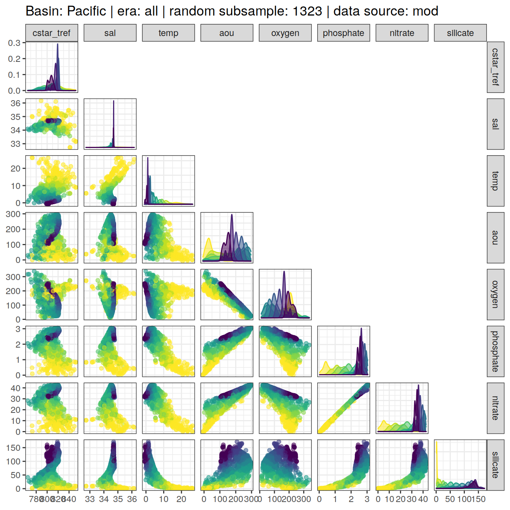
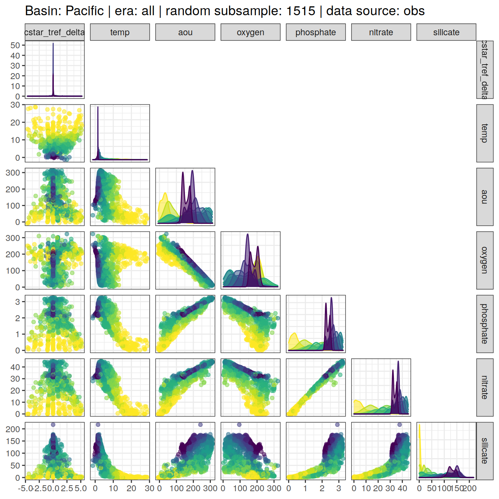

eMLR - assumption testing
Jens Daniel Müller
02 December, 2021
Last updated: 2021-12-02
Checks: 7 0
Knit directory: emlr_obs_v_XXX/
This reproducible R Markdown analysis was created with workflowr (version 1.6.2). The Checks tab describes the reproducibility checks that were applied when the results were created. The Past versions tab lists the development history.
Great! Since the R Markdown file has been committed to the Git repository, you know the exact version of the code that produced these results.
Great job! The global environment was empty. Objects defined in the global environment can affect the analysis in your R Markdown file in unknown ways. For reproduciblity it’s best to always run the code in an empty environment.
The command set.seed(20200707) was run prior to running the code in the R Markdown file. Setting a seed ensures that any results that rely on randomness, e.g. subsampling or permutations, are reproducible.
Great job! Recording the operating system, R version, and package versions is critical for reproducibility.
Nice! There were no cached chunks for this analysis, so you can be confident that you successfully produced the results during this run.
Great job! Using relative paths to the files within your workflowr project makes it easier to run your code on other machines.
Great! You are using Git for version control. Tracking code development and connecting the code version to the results is critical for reproducibility.
The results in this page were generated with repository version 3466773. See the Past versions tab to see a history of the changes made to the R Markdown and HTML files.
Note that you need to be careful to ensure that all relevant files for the analysis have been committed to Git prior to generating the results (you can use wflow_publish or wflow_git_commit). workflowr only checks the R Markdown file, but you know if there are other scripts or data files that it depends on. Below is the status of the Git repository when the results were generated:
Ignored files:
Ignored: .Rhistory
Ignored: .Rproj.user/
Untracked files:
Untracked: code/extract_offset_values.R
Untracked: data/IO_1990s-2000s_AT_DIC_PO4_mean_cruise_offsets.csv
Untracked: data/unadjusted_09AR20041223_316N19941201_ALK.pdf
Untracked: data/xover_sum_316N19941201_ALK.pdf
Unstaged changes:
Modified: code/Workflowr_project_managment.R
Modified: data/auxillary/params_local.rds
Note that any generated files, e.g. HTML, png, CSS, etc., are not included in this status report because it is ok for generated content to have uncommitted changes.
These are the previous versions of the repository in which changes were made to the R Markdown (analysis/eMLR_assumption_testing.Rmd) and HTML (docs/eMLR_assumption_testing.html) files. If you’ve configured a remote Git repository (see ?wflow_git_remote), click on the hyperlinks in the table below to view the files as they were in that past version.
| File | Version | Author | Date | Message |
|---|---|---|---|---|
| html | a83a09b | jens-daniel-mueller | 2021-11-29 | Build site. |
| html | 72c1041 | jens-daniel-mueller | 2021-11-23 | Build site. |
| html | 3eba8ac | jens-daniel-mueller | 2021-11-23 | Build site. |
| html | ec18ee5 | jens-daniel-mueller | 2021-11-23 | Build site. |
| html | 59cdf58 | jens-daniel-mueller | 2021-11-22 | Build site. |
| html | 3ae2dd1 | jens-daniel-mueller | 2021-11-21 | Build site. |
| html | 5b46219 | jens-daniel-mueller | 2021-11-21 | Build site. |
| html | 99fd72e | jens-daniel-mueller | 2021-11-21 | Build site. |
| html | 5016fc9 | jens-daniel-mueller | 2021-11-19 | Build site. |
| html | 6562075 | jens-daniel-mueller | 2021-11-19 | Build site. |
| html | 6b80483 | jens-daniel-mueller | 2021-11-19 | Build site. |
| html | 98d9e33 | jens-daniel-mueller | 2021-11-11 | Build site. |
| html | d3cb92d | jens-daniel-mueller | 2021-11-08 | Build site. |
| html | 3879a6d | jens-daniel-mueller | 2021-11-08 | Build site. |
| html | 0e032dc | jens-daniel-mueller | 2021-11-04 | Build site. |
| html | abcd28f | jens-daniel-mueller | 2021-11-02 | Build site. |
| html | 290c8fc | jens-daniel-mueller | 2021-11-02 | Build site. |
| html | e02acc9 | jens-daniel-mueller | 2021-11-01 | Build site. |
| html | 58da811 | jens-daniel-mueller | 2021-11-01 | Build site. |
| html | 2781a97 | jens-daniel-mueller | 2021-10-29 | Build site. |
| html | 973192c | jens-daniel-mueller | 2021-10-28 | Build site. |
| html | f792cd8 | jens-daniel-mueller | 2021-10-27 | Build site. |
| html | 22750db | jens-daniel-mueller | 2021-10-27 | Build site. |
| html | 3992e41 | jens-daniel-mueller | 2021-10-27 | Build site. |
| html | f9280c7 | jens-daniel-mueller | 2021-10-21 | Build site. |
| html | bfe90e6 | jens-daniel-mueller | 2021-10-21 | Build site. |
| html | 78a956e | jens-daniel-mueller | 2021-10-21 | Build site. |
| html | 1ba14cf | jens-daniel-mueller | 2021-10-20 | Build site. |
| html | dc0723b | jens-daniel-mueller | 2021-10-19 | Build site. |
| html | cd0ebd8 | jens-daniel-mueller | 2021-10-18 | Build site. |
| html | 046c556 | jens-daniel-mueller | 2021-10-07 | Build site. |
| html | ac73c23 | jens-daniel-mueller | 2021-10-07 | Build site. |
| html | 0bd4ea2 | jens-daniel-mueller | 2021-10-07 | Build site. |
| html | 6969c18 | jens-daniel-mueller | 2021-10-07 | check data distribution |
| html | 06afaca | jens-daniel-mueller | 2021-09-23 | Build site. |
| html | 410dd46 | jens-daniel-mueller | 2021-09-22 | Build site. |
| html | 5a36231 | jens-daniel-mueller | 2021-09-22 | Build site. |
| html | c0bbbe4 | jens-daniel-mueller | 2021-09-22 | Build site. |
| html | 9eac969 | jens-daniel-mueller | 2021-08-30 | Build site. |
| html | 3a584b7 | jens-daniel-mueller | 2021-08-30 | Build site. |
| html | 6e17588 | jens-daniel-mueller | 2021-08-24 | Build site. |
| html | deb425c | jens-daniel-mueller | 2021-08-24 | Build site. |
| html | 534854b | jens-daniel-mueller | 2021-08-19 | Build site. |
| html | 77f4ba7 | jens-daniel-mueller | 2021-08-19 | Build site. |
| html | ece96df | jens-daniel-mueller | 2021-08-19 | Build site. |
| Rmd | eb50c9e | jens-daniel-mueller | 2021-08-19 | test with gap filling after strong removal of outliers |
| html | 27c99b8 | jens-daniel-mueller | 2021-08-19 | Build site. |
| html | a03f2f0 | jens-daniel-mueller | 2021-08-18 | Build site. |
| html | 9335b31 | jens-daniel-mueller | 2021-08-10 | Build site. |
| html | 9943b45 | jens-daniel-mueller | 2021-08-10 | Build site. |
| html | 0b00a2b | jens-daniel-mueller | 2021-08-09 | Build site. |
| html | 755c6b1 | jens-daniel-mueller | 2021-08-09 | Build site. |
| html | cd8e0d5 | jens-daniel-mueller | 2021-08-06 | Build site. |
| html | 15773a0 | jens-daniel-mueller | 2021-08-06 | included calculation of revelle factor |
| html | da61d1a | jens-daniel-mueller | 2021-08-06 | Build site. |
| html | 340d731 | jens-daniel-mueller | 2021-08-06 | Build site. |
| html | 71546e4 | jens-daniel-mueller | 2021-08-06 | test with stricter CANYON-B filtering |
| html | 29444a1 | jens-daniel-mueller | 2021-08-05 | Build site. |
| html | 42e80c0 | jens-daniel-mueller | 2021-08-04 | Build site. |
| html | 48f6eed | jens-daniel-mueller | 2021-08-04 | Build site. |
| html | 1c597ab | jens-daniel-mueller | 2021-08-04 | Build site. |
| html | 81a46a4 | jens-daniel-mueller | 2021-08-03 | Build site. |
| html | b88c61b | jens-daniel-mueller | 2021-08-03 | Build site. |
| html | 0f0d5e5 | jens-daniel-mueller | 2021-08-03 | Build site. |
| html | a53656d | jens-daniel-mueller | 2021-08-03 | Build site. |
| html | 88f7356 | jens-daniel-mueller | 2021-08-02 | Build site. |
| html | d759279 | jens-daniel-mueller | 2021-08-02 | Build site. |
| html | 127b801 | jens-daniel-mueller | 2021-07-24 | Build site. |
| html | 1f65ef1 | jens-daniel-mueller | 2021-07-23 | Build site. |
| html | 912d90e | jens-daniel-mueller | 2021-07-23 | Build site. |
| html | 2477316 | jens-daniel-mueller | 2021-07-23 | rebuild: surface dcant mapping seperate |
| html | c9ccc00 | jens-daniel-mueller | 2021-07-22 | Build site. |
| html | 426b2df | jens-daniel-mueller | 2021-07-21 | Build site. |
| html | 971ce87 | jens-daniel-mueller | 2021-07-13 | Build site. |
| html | c18a8b1 | jens-daniel-mueller | 2021-07-09 | Build site. |
| Rmd | 795a3b0 | jens-daniel-mueller | 2021-07-09 | complete revision |
| html | 910d64a | jens-daniel-mueller | 2021-07-02 | Build site. |
| html | 1cbf907 | jens-daniel-mueller | 2021-07-02 | Build site. |
| html | 955f5dc | jens-daniel-mueller | 2021-06-29 | Build site. |
| html | 9480f94 | jens-daniel-mueller | 2021-06-29 | Build site. |
| html | d054c39 | jens-daniel-mueller | 2021-06-24 | Build site. |
| html | 4fcd066 | jens-daniel-mueller | 2021-06-24 | Build site. |
| html | 3b6387f | jens-daniel-mueller | 2021-06-18 | Build site. |
| html | 3052a6c | jens-daniel-mueller | 2021-06-15 | Build site. |
| html | 3cb64bd | jens-daniel-mueller | 2021-06-15 | Build site. |
| html | c6b3da6 | jens-daniel-mueller | 2021-06-14 | Build site. |
| html | 48c73fc | jens-daniel-mueller | 2021-06-14 | Build site. |
| html | 439ee80 | jens-daniel-mueller | 2021-06-11 | Build site. |
| html | 33ffcab | jens-daniel-mueller | 2021-06-10 | Build site. |
| html | 7e1f407 | jens-daniel-mueller | 2021-06-10 | Build site. |
| html | 2cbe18c | jens-daniel-mueller | 2021-06-10 | added zonal mean section control plots |
| html | 69c79d0 | jens-daniel-mueller | 2021-06-08 | Build site. |
| html | 1772903 | jens-daniel-mueller | 2021-06-07 | Build site. |
| html | 594ed9a | jens-daniel-mueller | 2021-06-04 | Build site. |
| html | db7df0e | jens-daniel-mueller | 2021-06-04 | rebuild without overlapping eras |
| html | 2edc791 | jens-daniel-mueller | 2021-06-04 | Build site. |
| html | 207339d | jens-daniel-mueller | 2021-06-03 | Build site. |
| html | 315710b | jens-daniel-mueller | 2021-06-03 | include anomalous changes |
| html | be90356 | jens-daniel-mueller | 2021-06-02 | Build site. |
| html | d37a85d | jens-daniel-mueller | 2021-05-31 | Build site. |
| html | 4b7a5ee | jens-daniel-mueller | 2021-05-28 | Build site. |
| html | 12b455a | jens-daniel-mueller | 2021-05-27 | Build site. |
| Rmd | ee13efb | jens-daniel-mueller | 2021-05-27 | optional source of local params fully implemented |
| html | 8c736a6 | jens-daniel-mueller | 2021-05-27 | Build site. |
| Rmd | dc8e4e1 | jens-daniel-mueller | 2021-05-27 | optional source of local params implemented |
| html | 25bd183 | jens-daniel-mueller | 2021-05-26 | Build site. |
| html | b79cb2d | jens-daniel-mueller | 2021-05-20 | Build site. |
| html | 62bd574 | jens-daniel-mueller | 2021-05-20 | Build site. |
| html | 7c56c39 | jens-daniel-mueller | 2021-05-19 | Build site. |
| html | 0de759e | jens-daniel-mueller | 2021-05-13 | Build site. |
| html | 52e7583 | jens-daniel-mueller | 2021-05-12 | Build site. |
| html | 969e631 | jens-daniel-mueller | 2021-05-12 | Build site. |
| html | d2a83bc | jens-daniel-mueller | 2021-04-16 | Build site. |
| html | c0a47df | jens-daniel-mueller | 2021-04-16 | Build site. |
| html | 50290e8 | jens-daniel-mueller | 2021-04-16 | overlapping eras |
| html | a00ec94 | jens-daniel-mueller | 2021-04-16 | Build site. |
| html | b6fe355 | jens-daniel-mueller | 2021-04-16 | Build site. |
| html | 81b7c6d | jens-daniel-mueller | 2021-04-16 | Build site. |
| html | ddec5b7 | jens-daniel-mueller | 2021-04-15 | Build site. |
| html | 29edae5 | jens-daniel-mueller | 2021-04-14 | Build site. |
| html | 099d566 | jens-daniel-mueller | 2021-04-14 | Build site. |
| html | bb44686 | jens-daniel-mueller | 2021-04-14 | Build site. |
| html | bf40480 | jens-daniel-mueller | 2021-04-13 | Build site. |
| html | 9f31fe3 | jens-daniel-mueller | 2021-04-13 | Build site. |
| Rmd | 80e1ee3 | jens-daniel-mueller | 2021-04-13 | rerun post-2000 with model data |
| html | c98be84 | jens-daniel-mueller | 2021-04-13 | Build site. |
| html | ea17c90 | jens-daniel-mueller | 2021-04-09 | Build site. |
| Rmd | 4d61e3d | jens-daniel-mueller | 2021-04-09 | included model data |
| html | 338dd3c | jens-daniel-mueller | 2021-04-09 | Build site. |
| html | a79ca2c | jens-daniel-mueller | 2021-04-09 | included model data |
| html | 7831fd3 | jens-daniel-mueller | 2021-04-09 | Build site. |
| html | 20b26d4 | jens-daniel-mueller | 2021-04-08 | Build site. |
| html | c0895f8 | jens-daniel-mueller | 2021-04-07 | Build site. |
| html | 156d5b7 | jens-daniel-mueller | 2021-04-07 | Build site. |
| html | eb827c9 | jens-daniel-mueller | 2021-04-07 | Build site. |
| Rmd | 49be8ed | jens-daniel-mueller | 2021-03-26 | included model data |
| html | ab5c8cf | jens-daniel-mueller | 2021-03-24 | Build site. |
| Rmd | da3c481 | jens-daniel-mueller | 2021-03-24 | included model data |
| html | 19faa17 | jens-daniel-mueller | 2021-03-24 | Build site. |
| Rmd | ae3b4d7 | jens-daniel-mueller | 2021-03-24 | included model data |
| html | 03b6009 | jens-daniel-mueller | 2021-03-23 | removed before copying template |
| html | 98d4a6d | jens-daniel-mueller | 2021-03-23 | Build site. |
| html | f155edd | jens-daniel-mueller | 2021-03-23 | Build site. |
| html | 380d215 | jens-daniel-mueller | 2021-03-21 | Build site. |
| html | 33b385b | jens-daniel-mueller | 2021-03-20 | Build site. |
| html | 330dcd0 | jens-daniel-mueller | 2021-03-20 | Build site. |
| html | 83a13de | jens-daniel-mueller | 2021-03-20 | Build site. |
| html | cf98c6d | jens-daniel-mueller | 2021-03-16 | Build site. |
| html | a1d52ff | jens-daniel-mueller | 2021-03-15 | Build site. |
| html | 0bade3b | jens-daniel-mueller | 2021-03-15 | Build site. |
| html | 27c1f4b | jens-daniel-mueller | 2021-03-14 | Build site. |
| html | af75ebf | jens-daniel-mueller | 2021-03-14 | Build site. |
| html | 5017709 | jens-daniel-mueller | 2021-03-11 | Build site. |
| html | 585b07f | jens-daniel-mueller | 2021-03-11 | Build site. |
| html | 6482ed7 | jens-daniel-mueller | 2021-03-11 | Build site. |
| html | 85a5ed2 | jens-daniel-mueller | 2021-03-10 | Build site. |
| html | 00688a1 | jens-daniel-mueller | 2021-03-05 | Build site. |
| html | 6c0bec6 | jens-daniel-mueller | 2021-03-05 | Build site. |
| html | 3c2ec33 | jens-daniel-mueller | 2021-03-05 | Build site. |
| html | af70b94 | jens-daniel-mueller | 2021-03-04 | Build site. |
| html | 86406d5 | jens-daniel-mueller | 2021-02-24 | Build site. |
| html | 3d3b4cc | jens-daniel-mueller | 2021-02-23 | Build site. |
| html | 7b672f7 | jens-daniel-mueller | 2021-01-11 | Build site. |
| html | 33ba23c | jens-daniel-mueller | 2021-01-07 | Build site. |
| html | 318609d | jens-daniel-mueller | 2020-12-23 | adapted more variable predictor selection |
| html | 9d0b2d0 | jens-daniel-mueller | 2020-12-23 | Build site. |
| html | 0aa2b50 | jens-daniel-mueller | 2020-12-23 | remove html before duplication |
| html | 39113c3 | jens-daniel-mueller | 2020-12-23 | Build site. |
| html | 2886da0 | jens-daniel-mueller | 2020-12-19 | Build site. |
| html | 02f0ee9 | jens-daniel-mueller | 2020-12-18 | cleaned up for copying template |
| html | 965dba3 | jens-daniel-mueller | 2020-12-18 | Build site. |
| html | 5d452fe | jens-daniel-mueller | 2020-12-18 | Build site. |
| Rmd | ca65bf5 | jens-daniel-mueller | 2020-12-18 | rebuild after final cleaning |
| html | 7bcb4eb | jens-daniel-mueller | 2020-12-18 | Build site. |
| html | d397028 | jens-daniel-mueller | 2020-12-18 | Build site. |
| html | 7131186 | jens-daniel-mueller | 2020-12-17 | Build site. |
| html | 22b07fb | jens-daniel-mueller | 2020-12-17 | Build site. |
| html | f3a708f | jens-daniel-mueller | 2020-12-17 | Build site. |
| html | e4ca289 | jens-daniel-mueller | 2020-12-16 | Build site. |
| html | 158fe26 | jens-daniel-mueller | 2020-12-15 | Build site. |
| html | 7a9a4cb | jens-daniel-mueller | 2020-12-15 | Build site. |
| html | 61b263c | jens-daniel-mueller | 2020-12-15 | Build site. |
| html | 4d612dd | jens-daniel-mueller | 2020-12-15 | Build site. |
| Rmd | e7e5ff1 | jens-daniel-mueller | 2020-12-15 | rebuild with eMLR target variable selection |
| html | 953caf3 | jens-daniel-mueller | 2020-12-15 | Build site. |
| html | 42daf5c | jens-daniel-mueller | 2020-12-14 | Build site. |
| Rmd | 923aa7f | jens-daniel-mueller | 2020-12-14 | rebuild with new path and auto folder creation |
| html | 984697e | jens-daniel-mueller | 2020-12-12 | Build site. |
| html | 3ebff89 | jens-daniel-mueller | 2020-12-12 | Build site. |
| html | 5d96d3c | jens-daniel-mueller | 2020-12-11 | Build site. |
| Rmd | 3d33a37 | jens-daniel-mueller | 2020-12-11 | selectable basinmask, try 5 |
| html | b01a367 | jens-daniel-mueller | 2020-12-09 | Build site. |
| html | 24a632f | jens-daniel-mueller | 2020-12-07 | Build site. |
| html | 92dca91 | jens-daniel-mueller | 2020-12-07 | Build site. |
| html | 6a8004b | jens-daniel-mueller | 2020-12-07 | Build site. |
| html | 70bf1a5 | jens-daniel-mueller | 2020-12-07 | Build site. |
| html | 7555355 | jens-daniel-mueller | 2020-12-07 | Build site. |
| html | 143d6fa | jens-daniel-mueller | 2020-12-07 | Build site. |
| Rmd | 33b1973 | jens-daniel-mueller | 2020-12-07 | run with WOCE flag 2 only |
| html | abc6818 | jens-daniel-mueller | 2020-12-03 | Build site. |
| Rmd | 992ba15 | jens-daniel-mueller | 2020-12-03 | rebuild with variable inventory depth |
| html | c8c2e7b | jens-daniel-mueller | 2020-12-03 | Build site. |
| Rmd | 83203db | jens-daniel-mueller | 2020-12-03 | calculate cant with variable inventory depth |
| html | 090e4d5 | jens-daniel-mueller | 2020-12-02 | Build site. |
| html | 7c25f7a | jens-daniel-mueller | 2020-12-02 | Build site. |
| html | ec8dc38 | jens-daniel-mueller | 2020-12-02 | Build site. |
| html | c987de1 | jens-daniel-mueller | 2020-12-02 | Build site. |
| html | f8358f8 | jens-daniel-mueller | 2020-12-02 | Build site. |
| html | b03ddb8 | jens-daniel-mueller | 2020-12-02 | Build site. |
| Rmd | 9183e8f | jens-daniel-mueller | 2020-12-02 | revised assignment of era to eras |
| html | 22d0127 | jens-daniel-mueller | 2020-12-01 | Build site. |
| html | 0ff728b | jens-daniel-mueller | 2020-12-01 | Build site. |
| html | 91435ae | jens-daniel-mueller | 2020-12-01 | Build site. |
| Rmd | 17d09be | jens-daniel-mueller | 2020-12-01 | auto eras naming |
| html | cf19652 | jens-daniel-mueller | 2020-11-30 | Build site. |
| Rmd | 2842970 | jens-daniel-mueller | 2020-11-30 | cleaned for eMLR part only |
| html | 196be51 | jens-daniel-mueller | 2020-11-30 | Build site. |
| Rmd | 7a4b015 | jens-daniel-mueller | 2020-11-30 | first rebuild on ETH server |
| Rmd | bc61ce3 | Jens Müller | 2020-11-30 | Initial commit |
| html | bc61ce3 | Jens Müller | 2020-11-30 | Initial commit |
1 Version ID
The results displayed on this site correspond to the Version_ID: v_XXX
2 Required data
Required are:
- cleaned and prepared GLODAPv2.2020 file
GLODAP <-
read_csv(paste(path_version_data,
"GLODAPv2.2020_MLR_fitting_ready.csv",
sep = ""))3 Predictor correlation
The correlation between:
- pairs of seven potential predictor variables and
- C* and seven potential predictor variables
were investigated based on:
- property-property plots and
- calculated correlation coeffcients.
3.1 Correlation plots
For an overview, a random subset of data from all eras was plotted separately for both basins, with color indicating neutral density slabs (high density = dark-purple color).
plot_fun <- function(df){
ggpairs(
data = df,
columns = c(params_local$MLR_target,
params_local$MLR_predictors),
upper = "blank",
ggplot2::aes(col = gamma_slab, fill = gamma_slab, alpha = 0.01)
) +
scale_fill_viridis_d(direction = -1) +
scale_color_viridis_d(direction = -1) +
labs(title = paste(
"Basin:",
unique(df$basin),
"| era: all | random subsample:",
nrow(df),
"| data source:",
unique(df$data_source)
))
}
GLODAP %>%
slice_sample(n = 5e3) %>%
group_split(basin, data_source) %>%
# head(1) %>%
map(plot_fun)[[1]]
| Version | Author | Date |
|---|---|---|
| 5b46219 | jens-daniel-mueller | 2021-11-21 |
| 6b80483 | jens-daniel-mueller | 2021-11-19 |
| 98d9e33 | jens-daniel-mueller | 2021-11-11 |
| d3cb92d | jens-daniel-mueller | 2021-11-08 |
| 3879a6d | jens-daniel-mueller | 2021-11-08 |
| 0e032dc | jens-daniel-mueller | 2021-11-04 |
| abcd28f | jens-daniel-mueller | 2021-11-02 |
| 290c8fc | jens-daniel-mueller | 2021-11-02 |
| e02acc9 | jens-daniel-mueller | 2021-11-01 |
| 58da811 | jens-daniel-mueller | 2021-11-01 |
| 2781a97 | jens-daniel-mueller | 2021-10-29 |
| 973192c | jens-daniel-mueller | 2021-10-28 |
| f792cd8 | jens-daniel-mueller | 2021-10-27 |
| 3992e41 | jens-daniel-mueller | 2021-10-27 |
| f9280c7 | jens-daniel-mueller | 2021-10-21 |
| bfe90e6 | jens-daniel-mueller | 2021-10-21 |
| 78a956e | jens-daniel-mueller | 2021-10-21 |
| 1ba14cf | jens-daniel-mueller | 2021-10-20 |
| dc0723b | jens-daniel-mueller | 2021-10-19 |
| cd0ebd8 | jens-daniel-mueller | 2021-10-18 |
| 046c556 | jens-daniel-mueller | 2021-10-07 |
| ac73c23 | jens-daniel-mueller | 2021-10-07 |
| 0bd4ea2 | jens-daniel-mueller | 2021-10-07 |
| 6969c18 | jens-daniel-mueller | 2021-10-07 |
| 06afaca | jens-daniel-mueller | 2021-09-23 |
| c0bbbe4 | jens-daniel-mueller | 2021-09-22 |
| 9eac969 | jens-daniel-mueller | 2021-08-30 |
| 3a584b7 | jens-daniel-mueller | 2021-08-30 |
| deb425c | jens-daniel-mueller | 2021-08-24 |
| 534854b | jens-daniel-mueller | 2021-08-19 |
| 77f4ba7 | jens-daniel-mueller | 2021-08-19 |
| ece96df | jens-daniel-mueller | 2021-08-19 |
| 27c99b8 | jens-daniel-mueller | 2021-08-19 |
| a03f2f0 | jens-daniel-mueller | 2021-08-18 |
| 9335b31 | jens-daniel-mueller | 2021-08-10 |
| 9943b45 | jens-daniel-mueller | 2021-08-10 |
| 0b00a2b | jens-daniel-mueller | 2021-08-09 |
| 755c6b1 | jens-daniel-mueller | 2021-08-09 |
| cd8e0d5 | jens-daniel-mueller | 2021-08-06 |
| 15773a0 | jens-daniel-mueller | 2021-08-06 |
| da61d1a | jens-daniel-mueller | 2021-08-06 |
| 340d731 | jens-daniel-mueller | 2021-08-06 |
| 71546e4 | jens-daniel-mueller | 2021-08-06 |
| 29444a1 | jens-daniel-mueller | 2021-08-05 |
| 42e80c0 | jens-daniel-mueller | 2021-08-04 |
| 48f6eed | jens-daniel-mueller | 2021-08-04 |
| 81a46a4 | jens-daniel-mueller | 2021-08-03 |
| b88c61b | jens-daniel-mueller | 2021-08-03 |
| a53656d | jens-daniel-mueller | 2021-08-03 |
| 88f7356 | jens-daniel-mueller | 2021-08-02 |
| d759279 | jens-daniel-mueller | 2021-08-02 |
| 127b801 | jens-daniel-mueller | 2021-07-24 |
| 912d90e | jens-daniel-mueller | 2021-07-23 |
| 2477316 | jens-daniel-mueller | 2021-07-23 |
| c9ccc00 | jens-daniel-mueller | 2021-07-22 |
| c18a8b1 | jens-daniel-mueller | 2021-07-09 |
| 910d64a | jens-daniel-mueller | 2021-07-02 |
| 1cbf907 | jens-daniel-mueller | 2021-07-02 |
| 955f5dc | jens-daniel-mueller | 2021-06-29 |
| 9480f94 | jens-daniel-mueller | 2021-06-29 |
| d054c39 | jens-daniel-mueller | 2021-06-24 |
| 4fcd066 | jens-daniel-mueller | 2021-06-24 |
| 3b6387f | jens-daniel-mueller | 2021-06-18 |
| c6b3da6 | jens-daniel-mueller | 2021-06-14 |
| 439ee80 | jens-daniel-mueller | 2021-06-11 |
| 33ffcab | jens-daniel-mueller | 2021-06-10 |
| 7e1f407 | jens-daniel-mueller | 2021-06-10 |
| 2cbe18c | jens-daniel-mueller | 2021-06-10 |
| 69c79d0 | jens-daniel-mueller | 2021-06-08 |
| 1772903 | jens-daniel-mueller | 2021-06-07 |
| 594ed9a | jens-daniel-mueller | 2021-06-04 |
| db7df0e | jens-daniel-mueller | 2021-06-04 |
| 2edc791 | jens-daniel-mueller | 2021-06-04 |
| 207339d | jens-daniel-mueller | 2021-06-03 |
| 315710b | jens-daniel-mueller | 2021-06-03 |
| be90356 | jens-daniel-mueller | 2021-06-02 |
| d37a85d | jens-daniel-mueller | 2021-05-31 |
| 4b7a5ee | jens-daniel-mueller | 2021-05-28 |
| 25bd183 | jens-daniel-mueller | 2021-05-26 |
| 62bd574 | jens-daniel-mueller | 2021-05-20 |
| 7c56c39 | jens-daniel-mueller | 2021-05-19 |
| 52e7583 | jens-daniel-mueller | 2021-05-12 |
| 969e631 | jens-daniel-mueller | 2021-05-12 |
| d2a83bc | jens-daniel-mueller | 2021-04-16 |
| c0a47df | jens-daniel-mueller | 2021-04-16 |
| 50290e8 | jens-daniel-mueller | 2021-04-16 |
| a00ec94 | jens-daniel-mueller | 2021-04-16 |
| b6fe355 | jens-daniel-mueller | 2021-04-16 |
| 81b7c6d | jens-daniel-mueller | 2021-04-16 |
| ddec5b7 | jens-daniel-mueller | 2021-04-15 |
| 29edae5 | jens-daniel-mueller | 2021-04-14 |
| 9f31fe3 | jens-daniel-mueller | 2021-04-13 |
| ea17c90 | jens-daniel-mueller | 2021-04-09 |
| 338dd3c | jens-daniel-mueller | 2021-04-09 |
| a79ca2c | jens-daniel-mueller | 2021-04-09 |
| eb827c9 | jens-daniel-mueller | 2021-04-07 |
| ab5c8cf | jens-daniel-mueller | 2021-03-24 |
| 03b6009 | jens-daniel-mueller | 2021-03-23 |
| 98d4a6d | jens-daniel-mueller | 2021-03-23 |
| 83a13de | jens-daniel-mueller | 2021-03-20 |
| cf98c6d | jens-daniel-mueller | 2021-03-16 |
| a1d52ff | jens-daniel-mueller | 2021-03-15 |
| 0bade3b | jens-daniel-mueller | 2021-03-15 |
| 27c1f4b | jens-daniel-mueller | 2021-03-14 |
| af75ebf | jens-daniel-mueller | 2021-03-14 |
| 5017709 | jens-daniel-mueller | 2021-03-11 |
| 585b07f | jens-daniel-mueller | 2021-03-11 |
| 85a5ed2 | jens-daniel-mueller | 2021-03-10 |
| 6c0bec6 | jens-daniel-mueller | 2021-03-05 |
| af70b94 | jens-daniel-mueller | 2021-03-04 |
| 7b672f7 | jens-daniel-mueller | 2021-01-11 |
| 33ba23c | jens-daniel-mueller | 2021-01-07 |
| 318609d | jens-daniel-mueller | 2020-12-23 |
| 9d0b2d0 | jens-daniel-mueller | 2020-12-23 |
| 0aa2b50 | jens-daniel-mueller | 2020-12-23 |
| 2886da0 | jens-daniel-mueller | 2020-12-19 |
| 02f0ee9 | jens-daniel-mueller | 2020-12-18 |
| 7bcb4eb | jens-daniel-mueller | 2020-12-18 |
| 158fe26 | jens-daniel-mueller | 2020-12-15 |
| 7a9a4cb | jens-daniel-mueller | 2020-12-15 |
| 61b263c | jens-daniel-mueller | 2020-12-15 |
| 4d612dd | jens-daniel-mueller | 2020-12-15 |
| 984697e | jens-daniel-mueller | 2020-12-12 |
| 3ebff89 | jens-daniel-mueller | 2020-12-12 |
| 5d96d3c | jens-daniel-mueller | 2020-12-11 |
[[2]]
| Version | Author | Date |
|---|---|---|
| 5b46219 | jens-daniel-mueller | 2021-11-21 |
| 6b80483 | jens-daniel-mueller | 2021-11-19 |
| 98d9e33 | jens-daniel-mueller | 2021-11-11 |
| d3cb92d | jens-daniel-mueller | 2021-11-08 |
| 3879a6d | jens-daniel-mueller | 2021-11-08 |
| 0e032dc | jens-daniel-mueller | 2021-11-04 |
| abcd28f | jens-daniel-mueller | 2021-11-02 |
| 290c8fc | jens-daniel-mueller | 2021-11-02 |
| e02acc9 | jens-daniel-mueller | 2021-11-01 |
| 58da811 | jens-daniel-mueller | 2021-11-01 |
| 2781a97 | jens-daniel-mueller | 2021-10-29 |
| 973192c | jens-daniel-mueller | 2021-10-28 |
| f792cd8 | jens-daniel-mueller | 2021-10-27 |
| 3992e41 | jens-daniel-mueller | 2021-10-27 |
| f9280c7 | jens-daniel-mueller | 2021-10-21 |
| bfe90e6 | jens-daniel-mueller | 2021-10-21 |
| 78a956e | jens-daniel-mueller | 2021-10-21 |
| 1ba14cf | jens-daniel-mueller | 2021-10-20 |
| dc0723b | jens-daniel-mueller | 2021-10-19 |
| cd0ebd8 | jens-daniel-mueller | 2021-10-18 |
| 046c556 | jens-daniel-mueller | 2021-10-07 |
| ac73c23 | jens-daniel-mueller | 2021-10-07 |
| 0bd4ea2 | jens-daniel-mueller | 2021-10-07 |
| 6969c18 | jens-daniel-mueller | 2021-10-07 |
| 06afaca | jens-daniel-mueller | 2021-09-23 |
| c0bbbe4 | jens-daniel-mueller | 2021-09-22 |
| 9eac969 | jens-daniel-mueller | 2021-08-30 |
| 3a584b7 | jens-daniel-mueller | 2021-08-30 |
| deb425c | jens-daniel-mueller | 2021-08-24 |
| 534854b | jens-daniel-mueller | 2021-08-19 |
| 77f4ba7 | jens-daniel-mueller | 2021-08-19 |
| ece96df | jens-daniel-mueller | 2021-08-19 |
| 27c99b8 | jens-daniel-mueller | 2021-08-19 |
| a03f2f0 | jens-daniel-mueller | 2021-08-18 |
| 9335b31 | jens-daniel-mueller | 2021-08-10 |
| 9943b45 | jens-daniel-mueller | 2021-08-10 |
| 0b00a2b | jens-daniel-mueller | 2021-08-09 |
| 755c6b1 | jens-daniel-mueller | 2021-08-09 |
| cd8e0d5 | jens-daniel-mueller | 2021-08-06 |
| 15773a0 | jens-daniel-mueller | 2021-08-06 |
| da61d1a | jens-daniel-mueller | 2021-08-06 |
| 340d731 | jens-daniel-mueller | 2021-08-06 |
| 71546e4 | jens-daniel-mueller | 2021-08-06 |
| 29444a1 | jens-daniel-mueller | 2021-08-05 |
| 42e80c0 | jens-daniel-mueller | 2021-08-04 |
| 48f6eed | jens-daniel-mueller | 2021-08-04 |
| 81a46a4 | jens-daniel-mueller | 2021-08-03 |
| b88c61b | jens-daniel-mueller | 2021-08-03 |
| a53656d | jens-daniel-mueller | 2021-08-03 |
| 88f7356 | jens-daniel-mueller | 2021-08-02 |
| d759279 | jens-daniel-mueller | 2021-08-02 |
| 127b801 | jens-daniel-mueller | 2021-07-24 |
| 912d90e | jens-daniel-mueller | 2021-07-23 |
| 2477316 | jens-daniel-mueller | 2021-07-23 |
| c9ccc00 | jens-daniel-mueller | 2021-07-22 |
| c18a8b1 | jens-daniel-mueller | 2021-07-09 |
| 910d64a | jens-daniel-mueller | 2021-07-02 |
| 1cbf907 | jens-daniel-mueller | 2021-07-02 |
| 955f5dc | jens-daniel-mueller | 2021-06-29 |
| 9480f94 | jens-daniel-mueller | 2021-06-29 |
| d054c39 | jens-daniel-mueller | 2021-06-24 |
| 4fcd066 | jens-daniel-mueller | 2021-06-24 |
| 3b6387f | jens-daniel-mueller | 2021-06-18 |
| c6b3da6 | jens-daniel-mueller | 2021-06-14 |
| 439ee80 | jens-daniel-mueller | 2021-06-11 |
| 33ffcab | jens-daniel-mueller | 2021-06-10 |
| 7e1f407 | jens-daniel-mueller | 2021-06-10 |
| 2cbe18c | jens-daniel-mueller | 2021-06-10 |
| 69c79d0 | jens-daniel-mueller | 2021-06-08 |
| 1772903 | jens-daniel-mueller | 2021-06-07 |
| 594ed9a | jens-daniel-mueller | 2021-06-04 |
| db7df0e | jens-daniel-mueller | 2021-06-04 |
| 2edc791 | jens-daniel-mueller | 2021-06-04 |
| 207339d | jens-daniel-mueller | 2021-06-03 |
| 315710b | jens-daniel-mueller | 2021-06-03 |
| d37a85d | jens-daniel-mueller | 2021-05-31 |
| 4b7a5ee | jens-daniel-mueller | 2021-05-28 |
| 25bd183 | jens-daniel-mueller | 2021-05-26 |
| 62bd574 | jens-daniel-mueller | 2021-05-20 |
| 7c56c39 | jens-daniel-mueller | 2021-05-19 |
| 52e7583 | jens-daniel-mueller | 2021-05-12 |
| 969e631 | jens-daniel-mueller | 2021-05-12 |
| d2a83bc | jens-daniel-mueller | 2021-04-16 |
| c0a47df | jens-daniel-mueller | 2021-04-16 |
| 50290e8 | jens-daniel-mueller | 2021-04-16 |
| a00ec94 | jens-daniel-mueller | 2021-04-16 |
| b6fe355 | jens-daniel-mueller | 2021-04-16 |
| 81b7c6d | jens-daniel-mueller | 2021-04-16 |
| ddec5b7 | jens-daniel-mueller | 2021-04-15 |
| 29edae5 | jens-daniel-mueller | 2021-04-14 |
| 9f31fe3 | jens-daniel-mueller | 2021-04-13 |
| ea17c90 | jens-daniel-mueller | 2021-04-09 |
| 338dd3c | jens-daniel-mueller | 2021-04-09 |
| a79ca2c | jens-daniel-mueller | 2021-04-09 |
| eb827c9 | jens-daniel-mueller | 2021-04-07 |
| ab5c8cf | jens-daniel-mueller | 2021-03-24 |
| 03b6009 | jens-daniel-mueller | 2021-03-23 |
| 98d4a6d | jens-daniel-mueller | 2021-03-23 |
| 83a13de | jens-daniel-mueller | 2021-03-20 |
| cf98c6d | jens-daniel-mueller | 2021-03-16 |
| a1d52ff | jens-daniel-mueller | 2021-03-15 |
| 0bade3b | jens-daniel-mueller | 2021-03-15 |
| 27c1f4b | jens-daniel-mueller | 2021-03-14 |
| af75ebf | jens-daniel-mueller | 2021-03-14 |
| 5017709 | jens-daniel-mueller | 2021-03-11 |
| 585b07f | jens-daniel-mueller | 2021-03-11 |
| 85a5ed2 | jens-daniel-mueller | 2021-03-10 |
| 6c0bec6 | jens-daniel-mueller | 2021-03-05 |
| af70b94 | jens-daniel-mueller | 2021-03-04 |
| 7b672f7 | jens-daniel-mueller | 2021-01-11 |
| 33ba23c | jens-daniel-mueller | 2021-01-07 |
| 318609d | jens-daniel-mueller | 2020-12-23 |
| 9d0b2d0 | jens-daniel-mueller | 2020-12-23 |
| 0aa2b50 | jens-daniel-mueller | 2020-12-23 |
| 2886da0 | jens-daniel-mueller | 2020-12-19 |
| 02f0ee9 | jens-daniel-mueller | 2020-12-18 |
| 7bcb4eb | jens-daniel-mueller | 2020-12-18 |
| 158fe26 | jens-daniel-mueller | 2020-12-15 |
| 7a9a4cb | jens-daniel-mueller | 2020-12-15 |
| 61b263c | jens-daniel-mueller | 2020-12-15 |
| 4d612dd | jens-daniel-mueller | 2020-12-15 |
| 984697e | jens-daniel-mueller | 2020-12-12 |
| 3ebff89 | jens-daniel-mueller | 2020-12-12 |
| 5d96d3c | jens-daniel-mueller | 2020-12-11 |
[[3]]
| Version | Author | Date |
|---|---|---|
| 5b46219 | jens-daniel-mueller | 2021-11-21 |
| 6562075 | jens-daniel-mueller | 2021-11-19 |
| 6b80483 | jens-daniel-mueller | 2021-11-19 |
| 98d9e33 | jens-daniel-mueller | 2021-11-11 |
| d3cb92d | jens-daniel-mueller | 2021-11-08 |
| 3879a6d | jens-daniel-mueller | 2021-11-08 |
| 0e032dc | jens-daniel-mueller | 2021-11-04 |
| abcd28f | jens-daniel-mueller | 2021-11-02 |
| 290c8fc | jens-daniel-mueller | 2021-11-02 |
| e02acc9 | jens-daniel-mueller | 2021-11-01 |
| 58da811 | jens-daniel-mueller | 2021-11-01 |
| 2781a97 | jens-daniel-mueller | 2021-10-29 |
| 973192c | jens-daniel-mueller | 2021-10-28 |
| f792cd8 | jens-daniel-mueller | 2021-10-27 |
| 22750db | jens-daniel-mueller | 2021-10-27 |
| 3992e41 | jens-daniel-mueller | 2021-10-27 |
| f9280c7 | jens-daniel-mueller | 2021-10-21 |
| bfe90e6 | jens-daniel-mueller | 2021-10-21 |
| 78a956e | jens-daniel-mueller | 2021-10-21 |
| 1ba14cf | jens-daniel-mueller | 2021-10-20 |
| dc0723b | jens-daniel-mueller | 2021-10-19 |
| cd0ebd8 | jens-daniel-mueller | 2021-10-18 |
| 046c556 | jens-daniel-mueller | 2021-10-07 |
| ac73c23 | jens-daniel-mueller | 2021-10-07 |
| 0bd4ea2 | jens-daniel-mueller | 2021-10-07 |
| 6969c18 | jens-daniel-mueller | 2021-10-07 |
| 06afaca | jens-daniel-mueller | 2021-09-23 |
| c0bbbe4 | jens-daniel-mueller | 2021-09-22 |
| 9eac969 | jens-daniel-mueller | 2021-08-30 |
| 3a584b7 | jens-daniel-mueller | 2021-08-30 |
| deb425c | jens-daniel-mueller | 2021-08-24 |
| 534854b | jens-daniel-mueller | 2021-08-19 |
| 77f4ba7 | jens-daniel-mueller | 2021-08-19 |
| ece96df | jens-daniel-mueller | 2021-08-19 |
| 27c99b8 | jens-daniel-mueller | 2021-08-19 |
| a03f2f0 | jens-daniel-mueller | 2021-08-18 |
| 9335b31 | jens-daniel-mueller | 2021-08-10 |
| 9943b45 | jens-daniel-mueller | 2021-08-10 |
| da61d1a | jens-daniel-mueller | 2021-08-06 |
| 340d731 | jens-daniel-mueller | 2021-08-06 |
| 71546e4 | jens-daniel-mueller | 2021-08-06 |
| 29444a1 | jens-daniel-mueller | 2021-08-05 |
| 42e80c0 | jens-daniel-mueller | 2021-08-04 |
| 48f6eed | jens-daniel-mueller | 2021-08-04 |
| 81a46a4 | jens-daniel-mueller | 2021-08-03 |
| b88c61b | jens-daniel-mueller | 2021-08-03 |
| a53656d | jens-daniel-mueller | 2021-08-03 |
| 88f7356 | jens-daniel-mueller | 2021-08-02 |
| d759279 | jens-daniel-mueller | 2021-08-02 |
| 127b801 | jens-daniel-mueller | 2021-07-24 |
| 912d90e | jens-daniel-mueller | 2021-07-23 |
| 2477316 | jens-daniel-mueller | 2021-07-23 |
| c9ccc00 | jens-daniel-mueller | 2021-07-22 |
| c18a8b1 | jens-daniel-mueller | 2021-07-09 |
| 910d64a | jens-daniel-mueller | 2021-07-02 |
| 1cbf907 | jens-daniel-mueller | 2021-07-02 |
| 955f5dc | jens-daniel-mueller | 2021-06-29 |
| 9480f94 | jens-daniel-mueller | 2021-06-29 |
| d054c39 | jens-daniel-mueller | 2021-06-24 |
| 4fcd066 | jens-daniel-mueller | 2021-06-24 |
| 3b6387f | jens-daniel-mueller | 2021-06-18 |
| c6b3da6 | jens-daniel-mueller | 2021-06-14 |
| 439ee80 | jens-daniel-mueller | 2021-06-11 |
| 33ffcab | jens-daniel-mueller | 2021-06-10 |
| 7e1f407 | jens-daniel-mueller | 2021-06-10 |
| 2cbe18c | jens-daniel-mueller | 2021-06-10 |
| 69c79d0 | jens-daniel-mueller | 2021-06-08 |
| 1772903 | jens-daniel-mueller | 2021-06-07 |
| 594ed9a | jens-daniel-mueller | 2021-06-04 |
| db7df0e | jens-daniel-mueller | 2021-06-04 |
| 2edc791 | jens-daniel-mueller | 2021-06-04 |
| 207339d | jens-daniel-mueller | 2021-06-03 |
| 315710b | jens-daniel-mueller | 2021-06-03 |
| be90356 | jens-daniel-mueller | 2021-06-02 |
| d37a85d | jens-daniel-mueller | 2021-05-31 |
| 4b7a5ee | jens-daniel-mueller | 2021-05-28 |
| 25bd183 | jens-daniel-mueller | 2021-05-26 |
| 62bd574 | jens-daniel-mueller | 2021-05-20 |
| 7c56c39 | jens-daniel-mueller | 2021-05-19 |
| 52e7583 | jens-daniel-mueller | 2021-05-12 |
| 969e631 | jens-daniel-mueller | 2021-05-12 |
| d2a83bc | jens-daniel-mueller | 2021-04-16 |
| c0a47df | jens-daniel-mueller | 2021-04-16 |
| 50290e8 | jens-daniel-mueller | 2021-04-16 |
| a00ec94 | jens-daniel-mueller | 2021-04-16 |
| b6fe355 | jens-daniel-mueller | 2021-04-16 |
| 81b7c6d | jens-daniel-mueller | 2021-04-16 |
| ddec5b7 | jens-daniel-mueller | 2021-04-15 |
| 29edae5 | jens-daniel-mueller | 2021-04-14 |
| 099d566 | jens-daniel-mueller | 2021-04-14 |
| bb44686 | jens-daniel-mueller | 2021-04-14 |
| bf40480 | jens-daniel-mueller | 2021-04-13 |
| 9f31fe3 | jens-daniel-mueller | 2021-04-13 |
| ea17c90 | jens-daniel-mueller | 2021-04-09 |
| 338dd3c | jens-daniel-mueller | 2021-04-09 |
| a79ca2c | jens-daniel-mueller | 2021-04-09 |
| eb827c9 | jens-daniel-mueller | 2021-04-07 |
| ab5c8cf | jens-daniel-mueller | 2021-03-24 |
| 0aa2b50 | jens-daniel-mueller | 2020-12-23 |
| 2886da0 | jens-daniel-mueller | 2020-12-19 |
| 02f0ee9 | jens-daniel-mueller | 2020-12-18 |
| 7bcb4eb | jens-daniel-mueller | 2020-12-18 |
| 158fe26 | jens-daniel-mueller | 2020-12-15 |
| 7a9a4cb | jens-daniel-mueller | 2020-12-15 |
| 61b263c | jens-daniel-mueller | 2020-12-15 |
| 4d612dd | jens-daniel-mueller | 2020-12-15 |
| 984697e | jens-daniel-mueller | 2020-12-12 |
| 3ebff89 | jens-daniel-mueller | 2020-12-12 |
| 5d96d3c | jens-daniel-mueller | 2020-12-11 |
[[4]]
| Version | Author | Date |
|---|---|---|
| a83a09b | jens-daniel-mueller | 2021-11-29 |
| 72c1041 | jens-daniel-mueller | 2021-11-23 |
| 3eba8ac | jens-daniel-mueller | 2021-11-23 |
| ec18ee5 | jens-daniel-mueller | 2021-11-23 |
| 59cdf58 | jens-daniel-mueller | 2021-11-22 |
| 3ae2dd1 | jens-daniel-mueller | 2021-11-21 |
| 5b46219 | jens-daniel-mueller | 2021-11-21 |
| 5016fc9 | jens-daniel-mueller | 2021-11-19 |
| 6562075 | jens-daniel-mueller | 2021-11-19 |
| 6b80483 | jens-daniel-mueller | 2021-11-19 |
| 98d9e33 | jens-daniel-mueller | 2021-11-11 |
| d3cb92d | jens-daniel-mueller | 2021-11-08 |
| 3879a6d | jens-daniel-mueller | 2021-11-08 |
| 0e032dc | jens-daniel-mueller | 2021-11-04 |
| abcd28f | jens-daniel-mueller | 2021-11-02 |
| 290c8fc | jens-daniel-mueller | 2021-11-02 |
| e02acc9 | jens-daniel-mueller | 2021-11-01 |
| 58da811 | jens-daniel-mueller | 2021-11-01 |
| 2781a97 | jens-daniel-mueller | 2021-10-29 |
| 973192c | jens-daniel-mueller | 2021-10-28 |
| f792cd8 | jens-daniel-mueller | 2021-10-27 |
| 22750db | jens-daniel-mueller | 2021-10-27 |
| 3992e41 | jens-daniel-mueller | 2021-10-27 |
| f9280c7 | jens-daniel-mueller | 2021-10-21 |
| bfe90e6 | jens-daniel-mueller | 2021-10-21 |
| 78a956e | jens-daniel-mueller | 2021-10-21 |
| 1ba14cf | jens-daniel-mueller | 2021-10-20 |
| dc0723b | jens-daniel-mueller | 2021-10-19 |
| cd0ebd8 | jens-daniel-mueller | 2021-10-18 |
| 046c556 | jens-daniel-mueller | 2021-10-07 |
| ac73c23 | jens-daniel-mueller | 2021-10-07 |
| 0bd4ea2 | jens-daniel-mueller | 2021-10-07 |
| 6969c18 | jens-daniel-mueller | 2021-10-07 |
| 06afaca | jens-daniel-mueller | 2021-09-23 |
| c0bbbe4 | jens-daniel-mueller | 2021-09-22 |
| 9eac969 | jens-daniel-mueller | 2021-08-30 |
| 3a584b7 | jens-daniel-mueller | 2021-08-30 |
| deb425c | jens-daniel-mueller | 2021-08-24 |
| 534854b | jens-daniel-mueller | 2021-08-19 |
| 77f4ba7 | jens-daniel-mueller | 2021-08-19 |
| ece96df | jens-daniel-mueller | 2021-08-19 |
| 27c99b8 | jens-daniel-mueller | 2021-08-19 |
| a03f2f0 | jens-daniel-mueller | 2021-08-18 |
| 9335b31 | jens-daniel-mueller | 2021-08-10 |
| 9943b45 | jens-daniel-mueller | 2021-08-10 |
| da61d1a | jens-daniel-mueller | 2021-08-06 |
| 340d731 | jens-daniel-mueller | 2021-08-06 |
| 71546e4 | jens-daniel-mueller | 2021-08-06 |
| 29444a1 | jens-daniel-mueller | 2021-08-05 |
| 42e80c0 | jens-daniel-mueller | 2021-08-04 |
| 48f6eed | jens-daniel-mueller | 2021-08-04 |
| 81a46a4 | jens-daniel-mueller | 2021-08-03 |
| b88c61b | jens-daniel-mueller | 2021-08-03 |
| a53656d | jens-daniel-mueller | 2021-08-03 |
| 88f7356 | jens-daniel-mueller | 2021-08-02 |
| d759279 | jens-daniel-mueller | 2021-08-02 |
| 127b801 | jens-daniel-mueller | 2021-07-24 |
| 912d90e | jens-daniel-mueller | 2021-07-23 |
| 2477316 | jens-daniel-mueller | 2021-07-23 |
| c9ccc00 | jens-daniel-mueller | 2021-07-22 |
| c18a8b1 | jens-daniel-mueller | 2021-07-09 |
| 910d64a | jens-daniel-mueller | 2021-07-02 |
| 1cbf907 | jens-daniel-mueller | 2021-07-02 |
| 955f5dc | jens-daniel-mueller | 2021-06-29 |
| 9480f94 | jens-daniel-mueller | 2021-06-29 |
| d054c39 | jens-daniel-mueller | 2021-06-24 |
| 4fcd066 | jens-daniel-mueller | 2021-06-24 |
| 3b6387f | jens-daniel-mueller | 2021-06-18 |
| c6b3da6 | jens-daniel-mueller | 2021-06-14 |
| 439ee80 | jens-daniel-mueller | 2021-06-11 |
| 33ffcab | jens-daniel-mueller | 2021-06-10 |
| 7e1f407 | jens-daniel-mueller | 2021-06-10 |
| 2cbe18c | jens-daniel-mueller | 2021-06-10 |
| 69c79d0 | jens-daniel-mueller | 2021-06-08 |
| 1772903 | jens-daniel-mueller | 2021-06-07 |
| 594ed9a | jens-daniel-mueller | 2021-06-04 |
| db7df0e | jens-daniel-mueller | 2021-06-04 |
| 2edc791 | jens-daniel-mueller | 2021-06-04 |
| 207339d | jens-daniel-mueller | 2021-06-03 |
| 315710b | jens-daniel-mueller | 2021-06-03 |
| d37a85d | jens-daniel-mueller | 2021-05-31 |
| 4b7a5ee | jens-daniel-mueller | 2021-05-28 |
| 25bd183 | jens-daniel-mueller | 2021-05-26 |
| 62bd574 | jens-daniel-mueller | 2021-05-20 |
| 7c56c39 | jens-daniel-mueller | 2021-05-19 |
| 52e7583 | jens-daniel-mueller | 2021-05-12 |
| 969e631 | jens-daniel-mueller | 2021-05-12 |
| d2a83bc | jens-daniel-mueller | 2021-04-16 |
| c0a47df | jens-daniel-mueller | 2021-04-16 |
| 50290e8 | jens-daniel-mueller | 2021-04-16 |
| a00ec94 | jens-daniel-mueller | 2021-04-16 |
| b6fe355 | jens-daniel-mueller | 2021-04-16 |
| 81b7c6d | jens-daniel-mueller | 2021-04-16 |
| ddec5b7 | jens-daniel-mueller | 2021-04-15 |
| 29edae5 | jens-daniel-mueller | 2021-04-14 |
| 099d566 | jens-daniel-mueller | 2021-04-14 |
| bb44686 | jens-daniel-mueller | 2021-04-14 |
| bf40480 | jens-daniel-mueller | 2021-04-13 |
| 9f31fe3 | jens-daniel-mueller | 2021-04-13 |
| ea17c90 | jens-daniel-mueller | 2021-04-09 |
| 338dd3c | jens-daniel-mueller | 2021-04-09 |
| a79ca2c | jens-daniel-mueller | 2021-04-09 |
| eb827c9 | jens-daniel-mueller | 2021-04-07 |
| ab5c8cf | jens-daniel-mueller | 2021-03-24 |
| 984697e | jens-daniel-mueller | 2020-12-12 |
| 3ebff89 | jens-daniel-mueller | 2020-12-12 |
| 5d96d3c | jens-daniel-mueller | 2020-12-11 |
[[5]]
| Version | Author | Date |
|---|---|---|
| 5b46219 | jens-daniel-mueller | 2021-11-21 |
| 6b80483 | jens-daniel-mueller | 2021-11-19 |
| 98d9e33 | jens-daniel-mueller | 2021-11-11 |
| d3cb92d | jens-daniel-mueller | 2021-11-08 |
| 3879a6d | jens-daniel-mueller | 2021-11-08 |
| 0e032dc | jens-daniel-mueller | 2021-11-04 |
| abcd28f | jens-daniel-mueller | 2021-11-02 |
| 290c8fc | jens-daniel-mueller | 2021-11-02 |
| e02acc9 | jens-daniel-mueller | 2021-11-01 |
| 58da811 | jens-daniel-mueller | 2021-11-01 |
| 2781a97 | jens-daniel-mueller | 2021-10-29 |
| 973192c | jens-daniel-mueller | 2021-10-28 |
| f792cd8 | jens-daniel-mueller | 2021-10-27 |
| 22750db | jens-daniel-mueller | 2021-10-27 |
| 3992e41 | jens-daniel-mueller | 2021-10-27 |
| f9280c7 | jens-daniel-mueller | 2021-10-21 |
| bfe90e6 | jens-daniel-mueller | 2021-10-21 |
| 78a956e | jens-daniel-mueller | 2021-10-21 |
| 1ba14cf | jens-daniel-mueller | 2021-10-20 |
| dc0723b | jens-daniel-mueller | 2021-10-19 |
| cd0ebd8 | jens-daniel-mueller | 2021-10-18 |
| 046c556 | jens-daniel-mueller | 2021-10-07 |
| ac73c23 | jens-daniel-mueller | 2021-10-07 |
| 0bd4ea2 | jens-daniel-mueller | 2021-10-07 |
| 6969c18 | jens-daniel-mueller | 2021-10-07 |
| 06afaca | jens-daniel-mueller | 2021-09-23 |
| c0bbbe4 | jens-daniel-mueller | 2021-09-22 |
| 9eac969 | jens-daniel-mueller | 2021-08-30 |
| 3a584b7 | jens-daniel-mueller | 2021-08-30 |
| deb425c | jens-daniel-mueller | 2021-08-24 |
| 534854b | jens-daniel-mueller | 2021-08-19 |
| 77f4ba7 | jens-daniel-mueller | 2021-08-19 |
| ece96df | jens-daniel-mueller | 2021-08-19 |
| 27c99b8 | jens-daniel-mueller | 2021-08-19 |
| a03f2f0 | jens-daniel-mueller | 2021-08-18 |
| 9335b31 | jens-daniel-mueller | 2021-08-10 |
| 9943b45 | jens-daniel-mueller | 2021-08-10 |
| da61d1a | jens-daniel-mueller | 2021-08-06 |
| 340d731 | jens-daniel-mueller | 2021-08-06 |
| 71546e4 | jens-daniel-mueller | 2021-08-06 |
| 29444a1 | jens-daniel-mueller | 2021-08-05 |
| 42e80c0 | jens-daniel-mueller | 2021-08-04 |
| 48f6eed | jens-daniel-mueller | 2021-08-04 |
| 81a46a4 | jens-daniel-mueller | 2021-08-03 |
| b88c61b | jens-daniel-mueller | 2021-08-03 |
| a53656d | jens-daniel-mueller | 2021-08-03 |
| 88f7356 | jens-daniel-mueller | 2021-08-02 |
| 127b801 | jens-daniel-mueller | 2021-07-24 |
| 912d90e | jens-daniel-mueller | 2021-07-23 |
| 2477316 | jens-daniel-mueller | 2021-07-23 |
| c9ccc00 | jens-daniel-mueller | 2021-07-22 |
| c18a8b1 | jens-daniel-mueller | 2021-07-09 |
| 910d64a | jens-daniel-mueller | 2021-07-02 |
| 1cbf907 | jens-daniel-mueller | 2021-07-02 |
| 955f5dc | jens-daniel-mueller | 2021-06-29 |
| b6fe355 | jens-daniel-mueller | 2021-04-16 |
| 81b7c6d | jens-daniel-mueller | 2021-04-16 |
| 099d566 | jens-daniel-mueller | 2021-04-14 |
| bb44686 | jens-daniel-mueller | 2021-04-14 |
| 984697e | jens-daniel-mueller | 2020-12-12 |
| 3ebff89 | jens-daniel-mueller | 2020-12-12 |
| 5d96d3c | jens-daniel-mueller | 2020-12-11 |
[[6]]
| Version | Author | Date |
|---|---|---|
| 5b46219 | jens-daniel-mueller | 2021-11-21 |
| 6b80483 | jens-daniel-mueller | 2021-11-19 |
| 98d9e33 | jens-daniel-mueller | 2021-11-11 |
| d3cb92d | jens-daniel-mueller | 2021-11-08 |
| 3879a6d | jens-daniel-mueller | 2021-11-08 |
| 0e032dc | jens-daniel-mueller | 2021-11-04 |
| abcd28f | jens-daniel-mueller | 2021-11-02 |
| 290c8fc | jens-daniel-mueller | 2021-11-02 |
| e02acc9 | jens-daniel-mueller | 2021-11-01 |
| 58da811 | jens-daniel-mueller | 2021-11-01 |
| 2781a97 | jens-daniel-mueller | 2021-10-29 |
| 973192c | jens-daniel-mueller | 2021-10-28 |
| f792cd8 | jens-daniel-mueller | 2021-10-27 |
| 22750db | jens-daniel-mueller | 2021-10-27 |
| 3992e41 | jens-daniel-mueller | 2021-10-27 |
| f9280c7 | jens-daniel-mueller | 2021-10-21 |
| bfe90e6 | jens-daniel-mueller | 2021-10-21 |
| 78a956e | jens-daniel-mueller | 2021-10-21 |
| 1ba14cf | jens-daniel-mueller | 2021-10-20 |
| dc0723b | jens-daniel-mueller | 2021-10-19 |
| cd0ebd8 | jens-daniel-mueller | 2021-10-18 |
| 046c556 | jens-daniel-mueller | 2021-10-07 |
| ac73c23 | jens-daniel-mueller | 2021-10-07 |
| 0bd4ea2 | jens-daniel-mueller | 2021-10-07 |
| 6969c18 | jens-daniel-mueller | 2021-10-07 |
| 06afaca | jens-daniel-mueller | 2021-09-23 |
| c0bbbe4 | jens-daniel-mueller | 2021-09-22 |
| 9eac969 | jens-daniel-mueller | 2021-08-30 |
| 3a584b7 | jens-daniel-mueller | 2021-08-30 |
| deb425c | jens-daniel-mueller | 2021-08-24 |
| 534854b | jens-daniel-mueller | 2021-08-19 |
| 77f4ba7 | jens-daniel-mueller | 2021-08-19 |
| ece96df | jens-daniel-mueller | 2021-08-19 |
| 27c99b8 | jens-daniel-mueller | 2021-08-19 |
| a03f2f0 | jens-daniel-mueller | 2021-08-18 |
| 9335b31 | jens-daniel-mueller | 2021-08-10 |
| 9943b45 | jens-daniel-mueller | 2021-08-10 |
| da61d1a | jens-daniel-mueller | 2021-08-06 |
| 340d731 | jens-daniel-mueller | 2021-08-06 |
| 71546e4 | jens-daniel-mueller | 2021-08-06 |
| 29444a1 | jens-daniel-mueller | 2021-08-05 |
| 42e80c0 | jens-daniel-mueller | 2021-08-04 |
| 48f6eed | jens-daniel-mueller | 2021-08-04 |
| 81a46a4 | jens-daniel-mueller | 2021-08-03 |
| b88c61b | jens-daniel-mueller | 2021-08-03 |
| a53656d | jens-daniel-mueller | 2021-08-03 |
| 88f7356 | jens-daniel-mueller | 2021-08-02 |
| 127b801 | jens-daniel-mueller | 2021-07-24 |
| 912d90e | jens-daniel-mueller | 2021-07-23 |
| 2477316 | jens-daniel-mueller | 2021-07-23 |
| c9ccc00 | jens-daniel-mueller | 2021-07-22 |
| c18a8b1 | jens-daniel-mueller | 2021-07-09 |
| 910d64a | jens-daniel-mueller | 2021-07-02 |
| 1cbf907 | jens-daniel-mueller | 2021-07-02 |
| 955f5dc | jens-daniel-mueller | 2021-06-29 |
| b6fe355 | jens-daniel-mueller | 2021-04-16 |
| 81b7c6d | jens-daniel-mueller | 2021-04-16 |
| 099d566 | jens-daniel-mueller | 2021-04-14 |
| bb44686 | jens-daniel-mueller | 2021-04-14 |
GLODAP <- GLODAP %>%
filter(data_source == "obs") %>%
select(-data_source)Individual correlation plots for each basin, era and neutral density (gamma) slab are available at:
/nfs/kryo/work/jenmueller/emlr_cant/observations/v_XXX/figures/Observations_correlation/
if (params_local$plot_all_figures == "y") {
for (i_basin in unique(GLODAP$basin)) {
for (i_era in unique(GLODAP$era)) {
# i_basin <- unique(GLODAP$basin)[1]
# i_era <- unique(GLODAP$era)[1]
GLODAP_basin_era <- GLODAP %>%
filter(basin == i_basin,
era == i_era)
for (i_gamma_slab in unique(GLODAP_basin_era$gamma_slab)) {
# i_gamma_slab <- unique(GLODAP_basin_era$gamma_slab)[5]
GLODAP_highlight <- GLODAP_basin_era %>%
mutate(gamma_highlight = if_else(gamma_slab == i_gamma_slab,
"in", "out")) %>%
arrange(desc(gamma_highlight))
p <- GLODAP_highlight %>%
ggpairs(
columns = c(params_local$MLR_target,
params_local$MLR_predictors),
ggplot2::aes(
col = gamma_highlight,
fill = gamma_highlight,
alpha = 0.01
)
) +
scale_fill_manual(values = c("red", "grey")) +
scale_color_manual(values = c("red", "grey")) +
labs(
title = paste(
i_era,
"|",
i_basin,
"| Gamma slab",
i_gamma_slab,
"| # obs total",
nrow(GLODAP_basin_era),
"| # obs slab",
nrow(GLODAP_highlight %>%
filter(gamma_highlight == "in"))
)
)
png(
filename = paste(
path_version_figures,
"Observations_correlation/",
paste(
"Predictor_correlation",
i_era,
i_basin,
i_gamma_slab,
".png",
sep = "_"
),
sep = ""),
width = 12,
height = 12,
units = "in",
res = 300
)
print(p)
dev.off()
}
}
}
}3.2 Correlation assesment
3.2.1 Calculation of correlation coeffcients
Correlation coefficients were calculated individually within each slabs, era and basin.
for (i_basin in unique(GLODAP$basin)) {
for (i_era in unique(GLODAP$era)) {
# i_basin <- unique(GLODAP$basin)[1]
# i_era <- unique(GLODAP$era)[1]
GLODAP_basin_era <- GLODAP %>%
filter(basin == i_basin,
era == i_era) %>%
select(basin,
era,
gamma_slab,
params_local$MLR_target,
params_local$MLR_predictors)
for (i_gamma_slab in unique(GLODAP_basin_era$gamma_slab)) {
# i_gamma_slab <- unique(GLODAP_basin_era$gamma_slab)[5]
print(i_gamma_slab)
GLODAP_basin_era_slab <- GLODAP_basin_era %>%
filter(gamma_slab == i_gamma_slab)
# calculate correlation table
cor_target_predictor_temp <- GLODAP_basin_era_slab %>%
select(-c(basin, era, gamma_slab)) %>%
correlate() %>%
focus(params_local$MLR_target) %>%
mutate(basin = i_basin,
era = i_era,
gamma_slab = i_gamma_slab)
if (exists("cor_target_predictor")) {
cor_target_predictor <-
bind_rows(cor_target_predictor, cor_target_predictor_temp)
}
if (!exists("cor_target_predictor")) {
cor_target_predictor <- cor_target_predictor_temp
}
cor_predictors_temp <- GLODAP_basin_era_slab %>%
select(-c(basin, era, gamma_slab)) %>%
correlate() %>%
shave %>%
stretch() %>%
filter(!is.na(r),
x != params_local$MLR_target,
y != params_local$MLR_target) %>%
mutate(pair = paste(x, y, sep = " + ")) %>%
select(-c(x, y)) %>%
mutate(basin = i_basin,
era = i_era,
gamma_slab = i_gamma_slab)
if (exists("cor_predictors")) {
cor_predictors <- bind_rows(cor_predictors, cor_predictors_temp)
}
if (!exists("cor_predictors")) {
cor_predictors <- cor_predictors_temp
}
}
}
}
rm(cor_predictors_temp, cor_target_predictor_temp,
i_gamma_slab, i_era, i_basin,
GLODAP_basin_era, GLODAP_basin_era_slab)3.2.2 Predictor pairs
Below, the range of correlations coefficients for each predictor pair is plotted per basin (facet) and density slab (color). Note that the range indicates the min and max values of in total 3 calculated coefficients (one per era).
# calculate min, max, mean across all eras
cor_predictors_stats <- cor_predictors %>%
group_by(pair, basin, gamma_slab) %>%
summarise(mean_r = mean(r),
min_r = min(r),
max_r = max(r)) %>%
ungroup()
# plot figure
cor_predictors_stats %>%
mutate(pair = reorder(pair, mean_r)) %>%
ggplot() +
geom_vline(xintercept = c(-0.9, 0.9), col = "red") +
geom_vline(xintercept = 0) +
geom_linerange(
aes(y = pair, xmin = min_r, xmax = max_r, col = gamma_slab),
position = position_dodge(width = 0.6)) +
facet_wrap(~basin) +
scale_color_viridis_d(direction = -1) +
labs(x = "correlation coefficient", y = "") +
theme(legend.position = "top")
| Version | Author | Date |
|---|---|---|
| a83a09b | jens-daniel-mueller | 2021-11-29 |
| 72c1041 | jens-daniel-mueller | 2021-11-23 |
| 3eba8ac | jens-daniel-mueller | 2021-11-23 |
| ec18ee5 | jens-daniel-mueller | 2021-11-23 |
| 5b46219 | jens-daniel-mueller | 2021-11-21 |
| 6b80483 | jens-daniel-mueller | 2021-11-19 |
| 98d9e33 | jens-daniel-mueller | 2021-11-11 |
| d3cb92d | jens-daniel-mueller | 2021-11-08 |
| 3879a6d | jens-daniel-mueller | 2021-11-08 |
| 0e032dc | jens-daniel-mueller | 2021-11-04 |
| abcd28f | jens-daniel-mueller | 2021-11-02 |
| 290c8fc | jens-daniel-mueller | 2021-11-02 |
| e02acc9 | jens-daniel-mueller | 2021-11-01 |
| 58da811 | jens-daniel-mueller | 2021-11-01 |
| 2781a97 | jens-daniel-mueller | 2021-10-29 |
| 973192c | jens-daniel-mueller | 2021-10-28 |
| f792cd8 | jens-daniel-mueller | 2021-10-27 |
| 22750db | jens-daniel-mueller | 2021-10-27 |
| 3992e41 | jens-daniel-mueller | 2021-10-27 |
| f9280c7 | jens-daniel-mueller | 2021-10-21 |
| bfe90e6 | jens-daniel-mueller | 2021-10-21 |
| 78a956e | jens-daniel-mueller | 2021-10-21 |
| 1ba14cf | jens-daniel-mueller | 2021-10-20 |
| dc0723b | jens-daniel-mueller | 2021-10-19 |
| cd0ebd8 | jens-daniel-mueller | 2021-10-18 |
| 046c556 | jens-daniel-mueller | 2021-10-07 |
| ac73c23 | jens-daniel-mueller | 2021-10-07 |
| 0bd4ea2 | jens-daniel-mueller | 2021-10-07 |
| 6969c18 | jens-daniel-mueller | 2021-10-07 |
| 06afaca | jens-daniel-mueller | 2021-09-23 |
| c0bbbe4 | jens-daniel-mueller | 2021-09-22 |
| 9eac969 | jens-daniel-mueller | 2021-08-30 |
| 3a584b7 | jens-daniel-mueller | 2021-08-30 |
| deb425c | jens-daniel-mueller | 2021-08-24 |
| 534854b | jens-daniel-mueller | 2021-08-19 |
| 77f4ba7 | jens-daniel-mueller | 2021-08-19 |
| ece96df | jens-daniel-mueller | 2021-08-19 |
| 27c99b8 | jens-daniel-mueller | 2021-08-19 |
| a03f2f0 | jens-daniel-mueller | 2021-08-18 |
| 9335b31 | jens-daniel-mueller | 2021-08-10 |
| 9943b45 | jens-daniel-mueller | 2021-08-10 |
| 0b00a2b | jens-daniel-mueller | 2021-08-09 |
| 755c6b1 | jens-daniel-mueller | 2021-08-09 |
| cd8e0d5 | jens-daniel-mueller | 2021-08-06 |
| 15773a0 | jens-daniel-mueller | 2021-08-06 |
| da61d1a | jens-daniel-mueller | 2021-08-06 |
| 340d731 | jens-daniel-mueller | 2021-08-06 |
| 71546e4 | jens-daniel-mueller | 2021-08-06 |
| 29444a1 | jens-daniel-mueller | 2021-08-05 |
| 42e80c0 | jens-daniel-mueller | 2021-08-04 |
| 48f6eed | jens-daniel-mueller | 2021-08-04 |
| 81a46a4 | jens-daniel-mueller | 2021-08-03 |
| b88c61b | jens-daniel-mueller | 2021-08-03 |
| a53656d | jens-daniel-mueller | 2021-08-03 |
| 88f7356 | jens-daniel-mueller | 2021-08-02 |
| d759279 | jens-daniel-mueller | 2021-08-02 |
| 127b801 | jens-daniel-mueller | 2021-07-24 |
| 912d90e | jens-daniel-mueller | 2021-07-23 |
| 2477316 | jens-daniel-mueller | 2021-07-23 |
| c9ccc00 | jens-daniel-mueller | 2021-07-22 |
| 910d64a | jens-daniel-mueller | 2021-07-02 |
| 1cbf907 | jens-daniel-mueller | 2021-07-02 |
| 955f5dc | jens-daniel-mueller | 2021-06-29 |
| 9480f94 | jens-daniel-mueller | 2021-06-29 |
| d054c39 | jens-daniel-mueller | 2021-06-24 |
| 4fcd066 | jens-daniel-mueller | 2021-06-24 |
| 7e1f407 | jens-daniel-mueller | 2021-06-10 |
| 2cbe18c | jens-daniel-mueller | 2021-06-10 |
| 594ed9a | jens-daniel-mueller | 2021-06-04 |
| db7df0e | jens-daniel-mueller | 2021-06-04 |
| 207339d | jens-daniel-mueller | 2021-06-03 |
| 315710b | jens-daniel-mueller | 2021-06-03 |
| d37a85d | jens-daniel-mueller | 2021-05-31 |
| 25bd183 | jens-daniel-mueller | 2021-05-26 |
| 62bd574 | jens-daniel-mueller | 2021-05-20 |
| 7c56c39 | jens-daniel-mueller | 2021-05-19 |
| 52e7583 | jens-daniel-mueller | 2021-05-12 |
| 969e631 | jens-daniel-mueller | 2021-05-12 |
| d2a83bc | jens-daniel-mueller | 2021-04-16 |
| c0a47df | jens-daniel-mueller | 2021-04-16 |
| 50290e8 | jens-daniel-mueller | 2021-04-16 |
| b6fe355 | jens-daniel-mueller | 2021-04-16 |
| 81b7c6d | jens-daniel-mueller | 2021-04-16 |
| ddec5b7 | jens-daniel-mueller | 2021-04-15 |
| 29edae5 | jens-daniel-mueller | 2021-04-14 |
| 099d566 | jens-daniel-mueller | 2021-04-14 |
| bb44686 | jens-daniel-mueller | 2021-04-14 |
| bf40480 | jens-daniel-mueller | 2021-04-13 |
| 9f31fe3 | jens-daniel-mueller | 2021-04-13 |
| 338dd3c | jens-daniel-mueller | 2021-04-09 |
| a79ca2c | jens-daniel-mueller | 2021-04-09 |
| eb827c9 | jens-daniel-mueller | 2021-04-07 |
| 19faa17 | jens-daniel-mueller | 2021-03-24 |
| 03b6009 | jens-daniel-mueller | 2021-03-23 |
| 98d4a6d | jens-daniel-mueller | 2021-03-23 |
| f155edd | jens-daniel-mueller | 2021-03-23 |
| 83a13de | jens-daniel-mueller | 2021-03-20 |
| cf98c6d | jens-daniel-mueller | 2021-03-16 |
| a1d52ff | jens-daniel-mueller | 2021-03-15 |
| 0bade3b | jens-daniel-mueller | 2021-03-15 |
| 27c1f4b | jens-daniel-mueller | 2021-03-14 |
| af75ebf | jens-daniel-mueller | 2021-03-14 |
| 5017709 | jens-daniel-mueller | 2021-03-11 |
| 585b07f | jens-daniel-mueller | 2021-03-11 |
| 85a5ed2 | jens-daniel-mueller | 2021-03-10 |
| 6c0bec6 | jens-daniel-mueller | 2021-03-05 |
| 7b672f7 | jens-daniel-mueller | 2021-01-11 |
| 33ba23c | jens-daniel-mueller | 2021-01-07 |
| 318609d | jens-daniel-mueller | 2020-12-23 |
| 9d0b2d0 | jens-daniel-mueller | 2020-12-23 |
| 0aa2b50 | jens-daniel-mueller | 2020-12-23 |
| 2886da0 | jens-daniel-mueller | 2020-12-19 |
| 02f0ee9 | jens-daniel-mueller | 2020-12-18 |
| 158fe26 | jens-daniel-mueller | 2020-12-15 |
| 984697e | jens-daniel-mueller | 2020-12-12 |
| 3ebff89 | jens-daniel-mueller | 2020-12-12 |
| 5d96d3c | jens-daniel-mueller | 2020-12-11 |
| 24a632f | jens-daniel-mueller | 2020-12-07 |
| 6a8004b | jens-daniel-mueller | 2020-12-07 |
| 70bf1a5 | jens-daniel-mueller | 2020-12-07 |
| 7555355 | jens-daniel-mueller | 2020-12-07 |
| 143d6fa | jens-daniel-mueller | 2020-12-07 |
| 0ff728b | jens-daniel-mueller | 2020-12-01 |
| 91435ae | jens-daniel-mueller | 2020-12-01 |
| 196be51 | jens-daniel-mueller | 2020-11-30 |
| bc61ce3 | Jens Müller | 2020-11-30 |
# print table
kable(cor_predictors_stats) %>%
add_header_above() %>%
kable_styling() %>%
scroll_box(width = "100%", height = "400px")| pair | basin | gamma_slab | mean_r | min_r | max_r |
|---|---|---|---|---|---|
| aou + nitrate | Atlantic | (-Inf,26] | 0.9156445 | 0.9088373 | 0.9224517 |
| aou + nitrate | Atlantic | (26,26.5] | 0.9658397 | 0.9564471 | 0.9752323 |
| aou + nitrate | Atlantic | (26.5,26.75] | 0.9552694 | 0.9411994 | 0.9693395 |
| aou + nitrate | Atlantic | (26.75,27] | 0.8988589 | 0.8868446 | 0.9108732 |
| aou + nitrate | Atlantic | (27,27.25] | 0.8229062 | 0.8206976 | 0.8251148 |
| aou + nitrate | Atlantic | (27.25,27.5] | 0.7619273 | 0.7372676 | 0.7865870 |
| aou + nitrate | Atlantic | (27.5,27.75] | 0.8532512 | 0.8507873 | 0.8557152 |
| aou + nitrate | Atlantic | (27.75,27.85] | 0.9118508 | 0.8965547 | 0.9271468 |
| aou + nitrate | Atlantic | (27.85,27.95] | 0.9206708 | 0.9083580 | 0.9329835 |
| aou + nitrate | Atlantic | (27.95,28.05] | 0.9250240 | 0.9191415 | 0.9309064 |
| aou + nitrate | Atlantic | (28.05,28.1] | 0.9548951 | 0.9528144 | 0.9569758 |
| aou + nitrate | Atlantic | (28.1,28.15] | 0.9724900 | 0.9696517 | 0.9753283 |
| aou + nitrate | Atlantic | (28.15,28.2] | 0.9876670 | 0.9843666 | 0.9909673 |
| aou + nitrate | Atlantic | (28.2, Inf] | 0.8642906 | 0.8548956 | 0.8736857 |
| aou + nitrate | Indian | (-Inf,26] | 0.9917644 | 0.9886529 | 0.9948759 |
| aou + nitrate | Indian | (26,26.5] | 0.9848474 | 0.9813824 | 0.9883123 |
| aou + nitrate | Indian | (26.5,26.75] | 0.9487723 | 0.9403188 | 0.9572257 |
| aou + nitrate | Indian | (26.75,27] | 0.8923975 | 0.8598892 | 0.9249058 |
| aou + nitrate | Indian | (27,27.25] | 0.8160028 | 0.7587139 | 0.8732917 |
| aou + nitrate | Indian | (27.25,27.5] | 0.9057599 | 0.8866555 | 0.9248643 |
| aou + nitrate | Indian | (27.5,27.75] | 0.9382416 | 0.9161669 | 0.9603162 |
| aou + nitrate | Indian | (27.75,27.85] | 0.8995131 | 0.8702182 | 0.9288080 |
| aou + nitrate | Indian | (27.85,27.95] | 0.8619145 | 0.8294319 | 0.8943970 |
| aou + nitrate | Indian | (27.95,28.05] | 0.7765151 | 0.6934803 | 0.8595499 |
| aou + nitrate | Indian | (28.05,28.1] | 0.8885481 | 0.8253192 | 0.9517771 |
| aou + nitrate | Indian | (28.1, Inf] | 0.5730921 | 0.4866813 | 0.6595028 |
| aou + nitrate | Pacific | (-Inf,26] | 0.8834684 | 0.8580793 | 0.9088575 |
| aou + nitrate | Pacific | (26,26.5] | 0.8612217 | 0.8558903 | 0.8665530 |
| aou + nitrate | Pacific | (26.5,26.75] | 0.8161514 | 0.7826960 | 0.8496068 |
| aou + nitrate | Pacific | (26.75,27] | 0.9225087 | 0.9098914 | 0.9351261 |
| aou + nitrate | Pacific | (27,27.25] | 0.9736858 | 0.9726144 | 0.9747571 |
| aou + nitrate | Pacific | (27.25,27.5] | 0.9793167 | 0.9775078 | 0.9811255 |
| aou + nitrate | Pacific | (27.5,27.75] | 0.9820531 | 0.9809575 | 0.9831488 |
| aou + nitrate | Pacific | (27.75,27.85] | 0.9892600 | 0.9890630 | 0.9894569 |
| aou + nitrate | Pacific | (27.85,27.95] | 0.9887144 | 0.9873724 | 0.9900563 |
| aou + nitrate | Pacific | (27.95,28.05] | 0.9784105 | 0.9742519 | 0.9825691 |
| aou + nitrate | Pacific | (28.05,28.1] | 0.9768499 | 0.9663242 | 0.9873756 |
| aou + nitrate | Pacific | (28.1, Inf] | 0.9583487 | 0.9513653 | 0.9653321 |
| aou + oxygen | Atlantic | (-Inf,26] | -0.9444883 | -0.9557881 | -0.9331885 |
| aou + oxygen | Atlantic | (26,26.5] | -0.9634941 | -0.9639615 | -0.9630268 |
| aou + oxygen | Atlantic | (26.5,26.75] | -0.9648806 | -0.9711310 | -0.9586303 |
| aou + oxygen | Atlantic | (26.75,27] | -0.9572662 | -0.9602707 | -0.9542618 |
| aou + oxygen | Atlantic | (27,27.25] | -0.9589929 | -0.9658768 | -0.9521089 |
| aou + oxygen | Atlantic | (27.25,27.5] | -0.9397438 | -0.9473878 | -0.9320998 |
| aou + oxygen | Atlantic | (27.5,27.75] | -0.9236163 | -0.9282029 | -0.9190296 |
| aou + oxygen | Atlantic | (27.75,27.85] | -0.9497131 | -0.9601184 | -0.9393079 |
| aou + oxygen | Atlantic | (27.85,27.95] | -0.9648537 | -0.9712550 | -0.9584523 |
| aou + oxygen | Atlantic | (27.95,28.05] | -0.9647468 | -0.9660946 | -0.9633989 |
| aou + oxygen | Atlantic | (28.05,28.1] | -0.9796657 | -0.9830880 | -0.9762434 |
| aou + oxygen | Atlantic | (28.1,28.15] | -0.9886932 | -0.9900353 | -0.9873511 |
| aou + oxygen | Atlantic | (28.15,28.2] | -0.9954393 | -0.9966349 | -0.9942438 |
| aou + oxygen | Atlantic | (28.2, Inf] | -0.9791914 | -0.9824399 | -0.9759429 |
| aou + oxygen | Indian | (-Inf,26] | -0.9928600 | -0.9949277 | -0.9907922 |
| aou + oxygen | Indian | (26,26.5] | -0.9970574 | -0.9973711 | -0.9967438 |
| aou + oxygen | Indian | (26.5,26.75] | -0.9954329 | -0.9969157 | -0.9939502 |
| aou + oxygen | Indian | (26.75,27] | -0.9918460 | -0.9958549 | -0.9878370 |
| aou + oxygen | Indian | (27,27.25] | -0.9942792 | -0.9961796 | -0.9923787 |
| aou + oxygen | Indian | (27.25,27.5] | -0.9964767 | -0.9972935 | -0.9956598 |
| aou + oxygen | Indian | (27.5,27.75] | -0.9969707 | -0.9974845 | -0.9964569 |
| aou + oxygen | Indian | (27.75,27.85] | -0.9972730 | -0.9977525 | -0.9967936 |
| aou + oxygen | Indian | (27.85,27.95] | -0.9959803 | -0.9960653 | -0.9958954 |
| aou + oxygen | Indian | (27.95,28.05] | -0.9905268 | -0.9918498 | -0.9892038 |
| aou + oxygen | Indian | (28.05,28.1] | -0.9900274 | -0.9953421 | -0.9847128 |
| aou + oxygen | Indian | (28.1, Inf] | -0.9863638 | -0.9890369 | -0.9836907 |
| aou + oxygen | Pacific | (-Inf,26] | -0.8375775 | -0.8439461 | -0.8312089 |
| aou + oxygen | Pacific | (26,26.5] | -0.9684704 | -0.9693453 | -0.9675955 |
| aou + oxygen | Pacific | (26.5,26.75] | -0.9744276 | -0.9769257 | -0.9719296 |
| aou + oxygen | Pacific | (26.75,27] | -0.9791718 | -0.9823817 | -0.9759618 |
| aou + oxygen | Pacific | (27,27.25] | -0.9943348 | -0.9945337 | -0.9941359 |
| aou + oxygen | Pacific | (27.25,27.5] | -0.9957858 | -0.9961140 | -0.9954575 |
| aou + oxygen | Pacific | (27.5,27.75] | -0.9953623 | -0.9965248 | -0.9941998 |
| aou + oxygen | Pacific | (27.75,27.85] | -0.9968729 | -0.9979410 | -0.9958048 |
| aou + oxygen | Pacific | (27.85,27.95] | -0.9971804 | -0.9984259 | -0.9959350 |
| aou + oxygen | Pacific | (27.95,28.05] | -0.9978441 | -0.9987419 | -0.9969463 |
| aou + oxygen | Pacific | (28.05,28.1] | -0.9990063 | -0.9991317 | -0.9988808 |
| aou + oxygen | Pacific | (28.1, Inf] | -0.9954451 | -0.9963661 | -0.9945240 |
| aou + phosphate | Atlantic | (-Inf,26] | 0.6825788 | 0.6067010 | 0.7584565 |
| aou + phosphate | Atlantic | (26,26.5] | 0.8922984 | 0.8617544 | 0.9228424 |
| aou + phosphate | Atlantic | (26.5,26.75] | 0.8949477 | 0.8618904 | 0.9280050 |
| aou + phosphate | Atlantic | (26.75,27] | 0.8304274 | 0.8032530 | 0.8576019 |
| aou + phosphate | Atlantic | (27,27.25] | 0.7491086 | 0.7376751 | 0.7605422 |
| aou + phosphate | Atlantic | (27.25,27.5] | 0.6972643 | 0.6625428 | 0.7319858 |
| aou + phosphate | Atlantic | (27.5,27.75] | 0.8201753 | 0.8167366 | 0.8236141 |
| aou + phosphate | Atlantic | (27.75,27.85] | 0.8895153 | 0.8698473 | 0.9091834 |
| aou + phosphate | Atlantic | (27.85,27.95] | 0.9112676 | 0.8986067 | 0.9239286 |
| aou + phosphate | Atlantic | (27.95,28.05] | 0.9209705 | 0.9161192 | 0.9258219 |
| aou + phosphate | Atlantic | (28.05,28.1] | 0.9504993 | 0.9487867 | 0.9522119 |
| aou + phosphate | Atlantic | (28.1,28.15] | 0.9680272 | 0.9672978 | 0.9687566 |
| aou + phosphate | Atlantic | (28.15,28.2] | 0.9873804 | 0.9844995 | 0.9902613 |
| aou + phosphate | Atlantic | (28.2, Inf] | 0.8602288 | 0.8488476 | 0.8716101 |
| aou + phosphate | Indian | (-Inf,26] | 0.9947313 | 0.9933845 | 0.9960781 |
| aou + phosphate | Indian | (26,26.5] | 0.9936272 | 0.9913924 | 0.9958621 |
| aou + phosphate | Indian | (26.5,26.75] | 0.9612233 | 0.9480709 | 0.9743757 |
| aou + phosphate | Indian | (26.75,27] | 0.9129491 | 0.8744547 | 0.9514434 |
| aou + phosphate | Indian | (27,27.25] | 0.8582958 | 0.7913872 | 0.9252045 |
| aou + phosphate | Indian | (27.25,27.5] | 0.9329009 | 0.9122808 | 0.9535209 |
| aou + phosphate | Indian | (27.5,27.75] | 0.9578832 | 0.9510007 | 0.9647657 |
| aou + phosphate | Indian | (27.75,27.85] | 0.9246010 | 0.9109844 | 0.9382175 |
| aou + phosphate | Indian | (27.85,27.95] | 0.8677359 | 0.8404229 | 0.8950488 |
| aou + phosphate | Indian | (27.95,28.05] | 0.7942205 | 0.7218034 | 0.8666376 |
| aou + phosphate | Indian | (28.05,28.1] | 0.8950022 | 0.8351263 | 0.9548782 |
| aou + phosphate | Indian | (28.1, Inf] | 0.5638163 | 0.4918096 | 0.6358230 |
| aou + phosphate | Pacific | (-Inf,26] | 0.8692177 | 0.8436558 | 0.8947796 |
| aou + phosphate | Pacific | (26,26.5] | 0.8931571 | 0.8803999 | 0.9059143 |
| aou + phosphate | Pacific | (26.5,26.75] | 0.8322674 | 0.8027350 | 0.8617998 |
| aou + phosphate | Pacific | (26.75,27] | 0.9281980 | 0.9111348 | 0.9452613 |
| aou + phosphate | Pacific | (27,27.25] | 0.9797918 | 0.9787602 | 0.9808235 |
| aou + phosphate | Pacific | (27.25,27.5] | 0.9834204 | 0.9828887 | 0.9839521 |
| aou + phosphate | Pacific | (27.5,27.75] | 0.9816812 | 0.9798893 | 0.9834730 |
| aou + phosphate | Pacific | (27.75,27.85] | 0.9868314 | 0.9864944 | 0.9871683 |
| aou + phosphate | Pacific | (27.85,27.95] | 0.9866849 | 0.9864338 | 0.9869359 |
| aou + phosphate | Pacific | (27.95,28.05] | 0.9807950 | 0.9805929 | 0.9809970 |
| aou + phosphate | Pacific | (28.05,28.1] | 0.9776964 | 0.9721475 | 0.9832453 |
| aou + phosphate | Pacific | (28.1, Inf] | 0.9548003 | 0.9525007 | 0.9570999 |
| aou + silicate | Atlantic | (-Inf,26] | 0.4846785 | 0.4296429 | 0.5397140 |
| aou + silicate | Atlantic | (26,26.5] | 0.8420245 | 0.8317914 | 0.8522577 |
| aou + silicate | Atlantic | (26.5,26.75] | 0.8792296 | 0.8720847 | 0.8863745 |
| aou + silicate | Atlantic | (26.75,27] | 0.8442414 | 0.8437511 | 0.8447317 |
| aou + silicate | Atlantic | (27,27.25] | 0.7018595 | 0.6996688 | 0.7040503 |
| aou + silicate | Atlantic | (27.25,27.5] | 0.4880696 | 0.4364816 | 0.5396575 |
| aou + silicate | Atlantic | (27.5,27.75] | 0.6000459 | 0.5868189 | 0.6132729 |
| aou + silicate | Atlantic | (27.75,27.85] | 0.7819361 | 0.7748200 | 0.7890522 |
| aou + silicate | Atlantic | (27.85,27.95] | 0.8413093 | 0.8320235 | 0.8505951 |
| aou + silicate | Atlantic | (27.95,28.05] | 0.9043321 | 0.9028166 | 0.9058476 |
| aou + silicate | Atlantic | (28.05,28.1] | 0.9578222 | 0.9563709 | 0.9592735 |
| aou + silicate | Atlantic | (28.1,28.15] | 0.9711747 | 0.9682591 | 0.9740903 |
| aou + silicate | Atlantic | (28.15,28.2] | 0.9873535 | 0.9862726 | 0.9884344 |
| aou + silicate | Atlantic | (28.2, Inf] | 0.8565533 | 0.8345747 | 0.8785318 |
| aou + silicate | Indian | (-Inf,26] | 0.9126123 | 0.8745150 | 0.9507096 |
| aou + silicate | Indian | (26,26.5] | 0.9456796 | 0.9335037 | 0.9578554 |
| aou + silicate | Indian | (26.5,26.75] | 0.9639723 | 0.9592274 | 0.9687172 |
| aou + silicate | Indian | (26.75,27] | 0.9713905 | 0.9690936 | 0.9736874 |
| aou + silicate | Indian | (27,27.25] | 0.8985308 | 0.8902190 | 0.9068425 |
| aou + silicate | Indian | (27.25,27.5] | 0.8747002 | 0.8588049 | 0.8905956 |
| aou + silicate | Indian | (27.5,27.75] | 0.8396430 | 0.8347413 | 0.8445446 |
| aou + silicate | Indian | (27.75,27.85] | 0.8355345 | 0.7826244 | 0.8884445 |
| aou + silicate | Indian | (27.85,27.95] | 0.8233873 | 0.7893327 | 0.8574419 |
| aou + silicate | Indian | (27.95,28.05] | 0.8462412 | 0.8053360 | 0.8871463 |
| aou + silicate | Indian | (28.05,28.1] | 0.9461739 | 0.9319941 | 0.9603538 |
| aou + silicate | Indian | (28.1, Inf] | 0.3627151 | 0.3568398 | 0.3685904 |
| aou + silicate | Pacific | (-Inf,26] | 0.6324937 | 0.5577795 | 0.7072079 |
| aou + silicate | Pacific | (26,26.5] | 0.5656247 | 0.5630398 | 0.5682096 |
| aou + silicate | Pacific | (26.5,26.75] | 0.3819647 | 0.3588605 | 0.4050690 |
| aou + silicate | Pacific | (26.75,27] | 0.6876275 | 0.6833545 | 0.6919005 |
| aou + silicate | Pacific | (27,27.25] | 0.9012133 | 0.8932174 | 0.9092093 |
| aou + silicate | Pacific | (27.25,27.5] | 0.9219681 | 0.9159333 | 0.9280030 |
| aou + silicate | Pacific | (27.5,27.75] | 0.9279848 | 0.9158328 | 0.9401369 |
| aou + silicate | Pacific | (27.75,27.85] | 0.9672360 | 0.9657781 | 0.9686939 |
| aou + silicate | Pacific | (27.85,27.95] | 0.9655713 | 0.9650107 | 0.9661318 |
| aou + silicate | Pacific | (27.95,28.05] | 0.9522144 | 0.9446286 | 0.9598002 |
| aou + silicate | Pacific | (28.05,28.1] | 0.9584679 | 0.9490384 | 0.9678973 |
| aou + silicate | Pacific | (28.1, Inf] | 0.8291668 | 0.7937481 | 0.8645855 |
| nitrate + silicate | Atlantic | (-Inf,26] | 0.6622673 | 0.6052942 | 0.7192404 |
| nitrate + silicate | Atlantic | (26,26.5] | 0.9064067 | 0.9018519 | 0.9109614 |
| nitrate + silicate | Atlantic | (26.5,26.75] | 0.9290215 | 0.9245700 | 0.9334730 |
| nitrate + silicate | Atlantic | (26.75,27] | 0.9118345 | 0.9075018 | 0.9161673 |
| nitrate + silicate | Atlantic | (27,27.25] | 0.9122272 | 0.9058132 | 0.9186412 |
| nitrate + silicate | Atlantic | (27.25,27.5] | 0.8710049 | 0.8536075 | 0.8884023 |
| nitrate + silicate | Atlantic | (27.5,27.75] | 0.8797312 | 0.8693524 | 0.8901100 |
| nitrate + silicate | Atlantic | (27.75,27.85] | 0.9441134 | 0.9410000 | 0.9472268 |
| nitrate + silicate | Atlantic | (27.85,27.95] | 0.9702775 | 0.9669089 | 0.9736461 |
| nitrate + silicate | Atlantic | (27.95,28.05] | 0.9837355 | 0.9816295 | 0.9858416 |
| nitrate + silicate | Atlantic | (28.05,28.1] | 0.9902321 | 0.9890188 | 0.9914454 |
| nitrate + silicate | Atlantic | (28.1,28.15] | 0.9909850 | 0.9900637 | 0.9919063 |
| nitrate + silicate | Atlantic | (28.15,28.2] | 0.9931524 | 0.9926778 | 0.9936269 |
| nitrate + silicate | Atlantic | (28.2, Inf] | 0.9805588 | 0.9798129 | 0.9813047 |
| nitrate + silicate | Indian | (-Inf,26] | 0.9334835 | 0.9059455 | 0.9610216 |
| nitrate + silicate | Indian | (26,26.5] | 0.9556414 | 0.9519137 | 0.9593692 |
| nitrate + silicate | Indian | (26.5,26.75] | 0.9432800 | 0.9380327 | 0.9485274 |
| nitrate + silicate | Indian | (26.75,27] | 0.9224341 | 0.9008670 | 0.9440011 |
| nitrate + silicate | Indian | (27,27.25] | 0.9215925 | 0.9128704 | 0.9303146 |
| nitrate + silicate | Indian | (27.25,27.5] | 0.9214817 | 0.9161017 | 0.9268618 |
| nitrate + silicate | Indian | (27.5,27.75] | 0.8127214 | 0.7935472 | 0.8318956 |
| nitrate + silicate | Indian | (27.75,27.85] | 0.7716274 | 0.7123761 | 0.8308788 |
| nitrate + silicate | Indian | (27.85,27.95] | 0.8390716 | 0.8272971 | 0.8508461 |
| nitrate + silicate | Indian | (27.95,28.05] | 0.8851266 | 0.8695890 | 0.9006641 |
| nitrate + silicate | Indian | (28.05,28.1] | 0.9455881 | 0.9245629 | 0.9666133 |
| nitrate + silicate | Indian | (28.1, Inf] | 0.7994869 | 0.7821675 | 0.8168063 |
| nitrate + silicate | Pacific | (-Inf,26] | 0.8375612 | 0.8280628 | 0.8470596 |
| nitrate + silicate | Pacific | (26,26.5] | 0.8184650 | 0.8143340 | 0.8225960 |
| nitrate + silicate | Pacific | (26.5,26.75] | 0.7382451 | 0.7120556 | 0.7644346 |
| nitrate + silicate | Pacific | (26.75,27] | 0.8249372 | 0.8038943 | 0.8459801 |
| nitrate + silicate | Pacific | (27,27.25] | 0.9103671 | 0.8985859 | 0.9221482 |
| nitrate + silicate | Pacific | (27.25,27.5] | 0.8973337 | 0.8894148 | 0.9052527 |
| nitrate + silicate | Pacific | (27.5,27.75] | 0.8951495 | 0.8835575 | 0.9067415 |
| nitrate + silicate | Pacific | (27.75,27.85] | 0.9477707 | 0.9453402 | 0.9502012 |
| nitrate + silicate | Pacific | (27.85,27.95] | 0.9615119 | 0.9574270 | 0.9655968 |
| nitrate + silicate | Pacific | (27.95,28.05] | 0.9442697 | 0.9197605 | 0.9687788 |
| nitrate + silicate | Pacific | (28.05,28.1] | 0.9445758 | 0.9185042 | 0.9706474 |
| nitrate + silicate | Pacific | (28.1, Inf] | 0.9075600 | 0.8963379 | 0.9187821 |
| oxygen + nitrate | Atlantic | (-Inf,26] | -0.8299561 | -0.8499908 | -0.8099215 |
| oxygen + nitrate | Atlantic | (26,26.5] | -0.8751984 | -0.8976994 | -0.8526974 |
| oxygen + nitrate | Atlantic | (26.5,26.75] | -0.8610321 | -0.8965511 | -0.8255130 |
| oxygen + nitrate | Atlantic | (26.75,27] | -0.7753497 | -0.7899088 | -0.7607905 |
| oxygen + nitrate | Atlantic | (27,27.25] | -0.6636660 | -0.6721194 | -0.6552126 |
| oxygen + nitrate | Atlantic | (27.25,27.5] | -0.5231699 | -0.5465650 | -0.4997747 |
| oxygen + nitrate | Atlantic | (27.5,27.75] | -0.6116813 | -0.6238649 | -0.5994977 |
| oxygen + nitrate | Atlantic | (27.75,27.85] | -0.7469925 | -0.7926388 | -0.7013462 |
| oxygen + nitrate | Atlantic | (27.85,27.95] | -0.7941439 | -0.8275479 | -0.7607400 |
| oxygen + nitrate | Atlantic | (27.95,28.05] | -0.8026675 | -0.8145901 | -0.7907448 |
| oxygen + nitrate | Atlantic | (28.05,28.1] | -0.8837555 | -0.8960017 | -0.8715093 |
| oxygen + nitrate | Atlantic | (28.1,28.15] | -0.9320730 | -0.9397640 | -0.9243820 |
| oxygen + nitrate | Atlantic | (28.15,28.2] | -0.9766081 | -0.9822356 | -0.9709806 |
| oxygen + nitrate | Atlantic | (28.2, Inf] | -0.7663381 | -0.7927515 | -0.7399248 |
| oxygen + nitrate | Indian | (-Inf,26] | -0.9771855 | -0.9840525 | -0.9703185 |
| oxygen + nitrate | Indian | (26,26.5] | -0.9714222 | -0.9757444 | -0.9671001 |
| oxygen + nitrate | Indian | (26.5,26.75] | -0.9162325 | -0.9328114 | -0.8996536 |
| oxygen + nitrate | Indian | (26.75,27] | -0.8294132 | -0.8876123 | -0.7712142 |
| oxygen + nitrate | Indian | (27,27.25] | -0.7519691 | -0.8295587 | -0.6743794 |
| oxygen + nitrate | Indian | (27.25,27.5] | -0.8704808 | -0.8971431 | -0.8438185 |
| oxygen + nitrate | Indian | (27.5,27.75] | -0.9234833 | -0.9474684 | -0.8994982 |
| oxygen + nitrate | Indian | (27.75,27.85] | -0.8839474 | -0.9140825 | -0.8538124 |
| oxygen + nitrate | Indian | (27.85,27.95] | -0.8243131 | -0.8598341 | -0.7887922 |
| oxygen + nitrate | Indian | (27.95,28.05] | -0.6919500 | -0.7930737 | -0.5908264 |
| oxygen + nitrate | Indian | (28.05,28.1] | -0.8233951 | -0.9217503 | -0.7250399 |
| oxygen + nitrate | Indian | (28.1, Inf] | -0.4440477 | -0.5466177 | -0.3414776 |
| oxygen + nitrate | Pacific | (-Inf,26] | -0.5635192 | -0.6181753 | -0.5088632 |
| oxygen + nitrate | Pacific | (26,26.5] | -0.7186036 | -0.7210694 | -0.7161378 |
| oxygen + nitrate | Pacific | (26.5,26.75] | -0.6773123 | -0.7286250 | -0.6259996 |
| oxygen + nitrate | Pacific | (26.75,27] | -0.8352809 | -0.8629931 | -0.8075686 |
| oxygen + nitrate | Pacific | (27,27.25] | -0.9505532 | -0.9520907 | -0.9490157 |
| oxygen + nitrate | Pacific | (27.25,27.5] | -0.9678260 | -0.9704990 | -0.9651529 |
| oxygen + nitrate | Pacific | (27.5,27.75] | -0.9741272 | -0.9773421 | -0.9709122 |
| oxygen + nitrate | Pacific | (27.75,27.85] | -0.9845808 | -0.9868454 | -0.9823162 |
| oxygen + nitrate | Pacific | (27.85,27.95] | -0.9827996 | -0.9846611 | -0.9809381 |
| oxygen + nitrate | Pacific | (27.95,28.05] | -0.9711631 | -0.9713924 | -0.9709338 |
| oxygen + nitrate | Pacific | (28.05,28.1] | -0.9714234 | -0.9822199 | -0.9606269 |
| oxygen + nitrate | Pacific | (28.1, Inf] | -0.9318539 | -0.9454161 | -0.9182917 |
| oxygen + phosphate | Atlantic | (-Inf,26] | -0.5171606 | -0.6260252 | -0.4082960 |
| oxygen + phosphate | Atlantic | (26,26.5] | -0.7527116 | -0.8010227 | -0.7044005 |
| oxygen + phosphate | Atlantic | (26.5,26.75] | -0.7617974 | -0.8248217 | -0.6987731 |
| oxygen + phosphate | Atlantic | (26.75,27] | -0.6703435 | -0.7011072 | -0.6395798 |
| oxygen + phosphate | Atlantic | (27,27.25] | -0.5613526 | -0.5621059 | -0.5605993 |
| oxygen + phosphate | Atlantic | (27.25,27.5] | -0.4339328 | -0.4653582 | -0.4025074 |
| oxygen + phosphate | Atlantic | (27.5,27.75] | -0.5572583 | -0.5708813 | -0.5436352 |
| oxygen + phosphate | Atlantic | (27.75,27.85] | -0.7102584 | -0.7631624 | -0.6573544 |
| oxygen + phosphate | Atlantic | (27.85,27.95] | -0.7781939 | -0.8124394 | -0.7439484 |
| oxygen + phosphate | Atlantic | (27.95,28.05] | -0.7951506 | -0.8057501 | -0.7845511 |
| oxygen + phosphate | Atlantic | (28.05,28.1] | -0.8757106 | -0.8877685 | -0.8636527 |
| oxygen + phosphate | Atlantic | (28.1,28.15] | -0.9239064 | -0.9288651 | -0.9189476 |
| oxygen + phosphate | Atlantic | (28.15,28.2] | -0.9754265 | -0.9804008 | -0.9704521 |
| oxygen + phosphate | Atlantic | (28.2, Inf] | -0.7609408 | -0.7899424 | -0.7319393 |
| oxygen + phosphate | Indian | (-Inf,26] | -0.9841521 | -0.9855687 | -0.9827355 |
| oxygen + phosphate | Indian | (26,26.5] | -0.9850492 | -0.9908469 | -0.9792515 |
| oxygen + phosphate | Indian | (26.5,26.75] | -0.9331132 | -0.9568632 | -0.9093632 |
| oxygen + phosphate | Indian | (26.75,27] | -0.8562445 | -0.9224497 | -0.7900392 |
| oxygen + phosphate | Indian | (27,27.25] | -0.8026148 | -0.8929009 | -0.7123287 |
| oxygen + phosphate | Indian | (27.25,27.5] | -0.9049362 | -0.9354155 | -0.8744569 |
| oxygen + phosphate | Indian | (27.5,27.75] | -0.9461676 | -0.9556206 | -0.9367146 |
| oxygen + phosphate | Indian | (27.75,27.85] | -0.9043626 | -0.9201137 | -0.8886116 |
| oxygen + phosphate | Indian | (27.85,27.95] | -0.8262179 | -0.8565452 | -0.7958906 |
| oxygen + phosphate | Indian | (27.95,28.05] | -0.7111586 | -0.8013696 | -0.6209477 |
| oxygen + phosphate | Indian | (28.05,28.1] | -0.8319710 | -0.9274690 | -0.7364730 |
| oxygen + phosphate | Indian | (28.1, Inf] | -0.4342440 | -0.5245240 | -0.3439640 |
| oxygen + phosphate | Pacific | (-Inf,26] | -0.5885190 | -0.6384596 | -0.5385785 |
| oxygen + phosphate | Pacific | (26,26.5] | -0.7600925 | -0.7811697 | -0.7390153 |
| oxygen + phosphate | Pacific | (26.5,26.75] | -0.6940598 | -0.7409241 | -0.6471955 |
| oxygen + phosphate | Pacific | (26.75,27] | -0.8397109 | -0.8736223 | -0.8057996 |
| oxygen + phosphate | Pacific | (27,27.25] | -0.9577788 | -0.9593056 | -0.9562520 |
| oxygen + phosphate | Pacific | (27.25,27.5] | -0.9729118 | -0.9732520 | -0.9725717 |
| oxygen + phosphate | Pacific | (27.5,27.75] | -0.9744733 | -0.9784386 | -0.9705080 |
| oxygen + phosphate | Pacific | (27.75,27.85] | -0.9824684 | -0.9847583 | -0.9801785 |
| oxygen + phosphate | Pacific | (27.85,27.95] | -0.9807944 | -0.9837196 | -0.9778691 |
| oxygen + phosphate | Pacific | (27.95,28.05] | -0.9736721 | -0.9772260 | -0.9701182 |
| oxygen + phosphate | Pacific | (28.05,28.1] | -0.9726055 | -0.9776583 | -0.9675528 |
| oxygen + phosphate | Pacific | (28.1, Inf] | -0.9290074 | -0.9366821 | -0.9213327 |
| oxygen + silicate | Atlantic | (-Inf,26] | -0.3278049 | -0.3763665 | -0.2792433 |
| oxygen + silicate | Atlantic | (26,26.5] | -0.7135276 | -0.7329203 | -0.6941349 |
| oxygen + silicate | Atlantic | (26.5,26.75] | -0.7554139 | -0.7810116 | -0.7298161 |
| oxygen + silicate | Atlantic | (26.75,27] | -0.6915720 | -0.7008379 | -0.6823061 |
| oxygen + silicate | Atlantic | (27,27.25] | -0.5146192 | -0.5335551 | -0.4956832 |
| oxygen + silicate | Atlantic | (27.25,27.5] | -0.2036640 | -0.2466112 | -0.1607169 |
| oxygen + silicate | Atlantic | (27.5,27.75] | -0.2999994 | -0.3079784 | -0.2920205 |
| oxygen + silicate | Atlantic | (27.75,27.85] | -0.5805528 | -0.6103728 | -0.5507329 |
| oxygen + silicate | Atlantic | (27.85,27.95] | -0.6839986 | -0.7132048 | -0.6547924 |
| oxygen + silicate | Atlantic | (27.95,28.05] | -0.7672254 | -0.7679789 | -0.7664719 |
| oxygen + silicate | Atlantic | (28.05,28.1] | -0.8859513 | -0.8917640 | -0.8801386 |
| oxygen + silicate | Atlantic | (28.1,28.15] | -0.9299787 | -0.9312590 | -0.9286985 |
| oxygen + silicate | Atlantic | (28.15,28.2] | -0.9794044 | -0.9808841 | -0.9779246 |
| oxygen + silicate | Atlantic | (28.2, Inf] | -0.7604657 | -0.8033515 | -0.7175798 |
| oxygen + silicate | Indian | (-Inf,26] | -0.8756063 | -0.9297477 | -0.8214650 |
| oxygen + silicate | Indian | (26,26.5] | -0.9310723 | -0.9471762 | -0.9149683 |
| oxygen + silicate | Indian | (26.5,26.75] | -0.9505848 | -0.9546384 | -0.9465312 |
| oxygen + silicate | Indian | (26.75,27] | -0.9475115 | -0.9586291 | -0.9363940 |
| oxygen + silicate | Indian | (27,27.25] | -0.8556220 | -0.8749608 | -0.8362831 |
| oxygen + silicate | Indian | (27.25,27.5] | -0.8389865 | -0.8525180 | -0.8254551 |
| oxygen + silicate | Indian | (27.5,27.75] | -0.8056189 | -0.8083555 | -0.8028824 |
| oxygen + silicate | Indian | (27.75,27.85] | -0.8079771 | -0.8684011 | -0.7475531 |
| oxygen + silicate | Indian | (27.85,27.95] | -0.7816643 | -0.8210885 | -0.7422401 |
| oxygen + silicate | Indian | (27.95,28.05] | -0.7790797 | -0.8352651 | -0.7228943 |
| oxygen + silicate | Indian | (28.05,28.1] | -0.9047874 | -0.9406258 | -0.8689489 |
| oxygen + silicate | Indian | (28.1, Inf] | -0.2282868 | -0.2470831 | -0.2094906 |
| oxygen + silicate | Pacific | (-Inf,26] | -0.2574014 | -0.3811641 | -0.1336387 |
| oxygen + silicate | Pacific | (26,26.5] | -0.3777485 | -0.3813110 | -0.3741859 |
| oxygen + silicate | Pacific | (26.5,26.75] | -0.1903609 | -0.2297427 | -0.1509791 |
| oxygen + silicate | Pacific | (26.75,27] | -0.5426342 | -0.5628303 | -0.5224381 |
| oxygen + silicate | Pacific | (27,27.25] | -0.8581713 | -0.8676950 | -0.8486476 |
| oxygen + silicate | Pacific | (27.25,27.5] | -0.8893571 | -0.8976949 | -0.8810193 |
| oxygen + silicate | Pacific | (27.5,27.75] | -0.8965875 | -0.9157516 | -0.8774235 |
| oxygen + silicate | Pacific | (27.75,27.85] | -0.9527159 | -0.9577395 | -0.9476923 |
| oxygen + silicate | Pacific | (27.85,27.95] | -0.9523741 | -0.9553976 | -0.9493505 |
| oxygen + silicate | Pacific | (27.95,28.05] | -0.9377504 | -0.9436868 | -0.9318139 |
| oxygen + silicate | Pacific | (28.05,28.1] | -0.9494324 | -0.9589544 | -0.9399104 |
| oxygen + silicate | Pacific | (28.1, Inf] | -0.7796290 | -0.8235523 | -0.7357056 |
| phosphate + nitrate | Atlantic | (-Inf,26] | 0.8355777 | 0.7875488 | 0.8836065 |
| phosphate + nitrate | Atlantic | (26,26.5] | 0.9639192 | 0.9582428 | 0.9695956 |
| phosphate + nitrate | Atlantic | (26.5,26.75] | 0.9795587 | 0.9735936 | 0.9855237 |
| phosphate + nitrate | Atlantic | (26.75,27] | 0.9823700 | 0.9795421 | 0.9851980 |
| phosphate + nitrate | Atlantic | (27,27.25] | 0.9868085 | 0.9857977 | 0.9878192 |
| phosphate + nitrate | Atlantic | (27.25,27.5] | 0.9916280 | 0.9912324 | 0.9920236 |
| phosphate + nitrate | Atlantic | (27.5,27.75] | 0.9948340 | 0.9945034 | 0.9951646 |
| phosphate + nitrate | Atlantic | (27.75,27.85] | 0.9956816 | 0.9948207 | 0.9965426 |
| phosphate + nitrate | Atlantic | (27.85,27.95] | 0.9955653 | 0.9948780 | 0.9962526 |
| phosphate + nitrate | Atlantic | (27.95,28.05] | 0.9953288 | 0.9947698 | 0.9958879 |
| phosphate + nitrate | Atlantic | (28.05,28.1] | 0.9947963 | 0.9945718 | 0.9950209 |
| phosphate + nitrate | Atlantic | (28.1,28.15] | 0.9958439 | 0.9957628 | 0.9959249 |
| phosphate + nitrate | Atlantic | (28.15,28.2] | 0.9980263 | 0.9979032 | 0.9981495 |
| phosphate + nitrate | Atlantic | (28.2, Inf] | 0.9956827 | 0.9953748 | 0.9959906 |
| phosphate + nitrate | Indian | (-Inf,26] | 0.9915340 | 0.9855193 | 0.9975488 |
| phosphate + nitrate | Indian | (26,26.5] | 0.9880100 | 0.9796457 | 0.9963742 |
| phosphate + nitrate | Indian | (26.5,26.75] | 0.9890271 | 0.9813622 | 0.9966920 |
| phosphate + nitrate | Indian | (26.75,27] | 0.9863024 | 0.9772079 | 0.9953969 |
| phosphate + nitrate | Indian | (27,27.25] | 0.9723700 | 0.9562288 | 0.9885113 |
| phosphate + nitrate | Indian | (27.25,27.5] | 0.9716293 | 0.9631362 | 0.9801223 |
| phosphate + nitrate | Indian | (27.5,27.75] | 0.9571033 | 0.9425395 | 0.9716670 |
| phosphate + nitrate | Indian | (27.75,27.85] | 0.9483788 | 0.9259494 | 0.9708081 |
| phosphate + nitrate | Indian | (27.85,27.95] | 0.9634460 | 0.9538438 | 0.9730481 |
| phosphate + nitrate | Indian | (27.95,28.05] | 0.9803827 | 0.9743037 | 0.9864618 |
| phosphate + nitrate | Indian | (28.05,28.1] | 0.9834312 | 0.9758511 | 0.9910114 |
| phosphate + nitrate | Indian | (28.1, Inf] | 0.9411370 | 0.9153120 | 0.9669620 |
| phosphate + nitrate | Pacific | (-Inf,26] | 0.9581303 | 0.9535942 | 0.9626665 |
| phosphate + nitrate | Pacific | (26,26.5] | 0.9686171 | 0.9580219 | 0.9792124 |
| phosphate + nitrate | Pacific | (26.5,26.75] | 0.9568576 | 0.9562050 | 0.9575102 |
| phosphate + nitrate | Pacific | (26.75,27] | 0.9812707 | 0.9811990 | 0.9813425 |
| phosphate + nitrate | Pacific | (27,27.25] | 0.9899629 | 0.9893958 | 0.9905299 |
| phosphate + nitrate | Pacific | (27.25,27.5] | 0.9917320 | 0.9909521 | 0.9925119 |
| phosphate + nitrate | Pacific | (27.5,27.75] | 0.9931177 | 0.9928231 | 0.9934122 |
| phosphate + nitrate | Pacific | (27.75,27.85] | 0.9925990 | 0.9918995 | 0.9932986 |
| phosphate + nitrate | Pacific | (27.85,27.95] | 0.9912977 | 0.9889288 | 0.9936667 |
| phosphate + nitrate | Pacific | (27.95,28.05] | 0.9808592 | 0.9700790 | 0.9916393 |
| phosphate + nitrate | Pacific | (28.05,28.1] | 0.9717078 | 0.9566320 | 0.9867835 |
| phosphate + nitrate | Pacific | (28.1, Inf] | 0.9766817 | 0.9728377 | 0.9805257 |
| phosphate + silicate | Atlantic | (-Inf,26] | 0.7724000 | 0.7458814 | 0.7989186 |
| phosphate + silicate | Atlantic | (26,26.5] | 0.9353289 | 0.9303454 | 0.9403125 |
| phosphate + silicate | Atlantic | (26.5,26.75] | 0.9373368 | 0.9362795 | 0.9383941 |
| phosphate + silicate | Atlantic | (26.75,27] | 0.9207770 | 0.9160732 | 0.9254809 |
| phosphate + silicate | Atlantic | (27,27.25] | 0.9300025 | 0.9238989 | 0.9361061 |
| phosphate + silicate | Atlantic | (27.25,27.5] | 0.9019118 | 0.8891170 | 0.9147067 |
| phosphate + silicate | Atlantic | (27.5,27.75] | 0.8983006 | 0.8898765 | 0.9067246 |
| phosphate + silicate | Atlantic | (27.75,27.85] | 0.9515165 | 0.9496235 | 0.9534095 |
| phosphate + silicate | Atlantic | (27.85,27.95] | 0.9737732 | 0.9712583 | 0.9762881 |
| phosphate + silicate | Atlantic | (27.95,28.05] | 0.9849979 | 0.9834094 | 0.9865863 |
| phosphate + silicate | Atlantic | (28.05,28.1] | 0.9908979 | 0.9902219 | 0.9915740 |
| phosphate + silicate | Atlantic | (28.1,28.15] | 0.9919574 | 0.9916108 | 0.9923040 |
| phosphate + silicate | Atlantic | (28.15,28.2] | 0.9926378 | 0.9921785 | 0.9930972 |
| phosphate + silicate | Atlantic | (28.2, Inf] | 0.9805199 | 0.9798763 | 0.9811636 |
| phosphate + silicate | Indian | (-Inf,26] | 0.9171861 | 0.8731619 | 0.9612103 |
| phosphate + silicate | Indian | (26,26.5] | 0.9525109 | 0.9412556 | 0.9637662 |
| phosphate + silicate | Indian | (26.5,26.75] | 0.9483320 | 0.9454617 | 0.9512023 |
| phosphate + silicate | Indian | (26.75,27] | 0.9349292 | 0.9160032 | 0.9538553 |
| phosphate + silicate | Indian | (27,27.25] | 0.9288542 | 0.9261015 | 0.9316070 |
| phosphate + silicate | Indian | (27.25,27.5] | 0.9091526 | 0.8809576 | 0.9373476 |
| phosphate + silicate | Indian | (27.5,27.75] | 0.8444795 | 0.8171201 | 0.8718390 |
| phosphate + silicate | Indian | (27.75,27.85] | 0.8676088 | 0.8552227 | 0.8799950 |
| phosphate + silicate | Indian | (27.85,27.95] | 0.9006368 | 0.9004219 | 0.9008517 |
| phosphate + silicate | Indian | (27.95,28.05] | 0.9071648 | 0.8997339 | 0.9145957 |
| phosphate + silicate | Indian | (28.05,28.1] | 0.9476419 | 0.9306728 | 0.9646111 |
| phosphate + silicate | Indian | (28.1, Inf] | 0.7916222 | 0.7915772 | 0.7916672 |
| phosphate + silicate | Pacific | (-Inf,26] | 0.7643258 | 0.7456454 | 0.7830061 |
| phosphate + silicate | Pacific | (26,26.5] | 0.7694489 | 0.7687445 | 0.7701533 |
| phosphate + silicate | Pacific | (26.5,26.75] | 0.6953019 | 0.6623338 | 0.7282699 |
| phosphate + silicate | Pacific | (26.75,27] | 0.8239646 | 0.7992664 | 0.8486629 |
| phosphate + silicate | Pacific | (27,27.25] | 0.9164905 | 0.9038278 | 0.9291533 |
| phosphate + silicate | Pacific | (27.25,27.5] | 0.9017298 | 0.8902568 | 0.9132029 |
| phosphate + silicate | Pacific | (27.5,27.75] | 0.8940630 | 0.8796405 | 0.9084856 |
| phosphate + silicate | Pacific | (27.75,27.85] | 0.9501167 | 0.9464776 | 0.9537558 |
| phosphate + silicate | Pacific | (27.85,27.95] | 0.9662015 | 0.9636505 | 0.9687526 |
| phosphate + silicate | Pacific | (27.95,28.05] | 0.9591069 | 0.9499011 | 0.9683126 |
| phosphate + silicate | Pacific | (28.05,28.1] | 0.9566546 | 0.9438894 | 0.9694197 |
| phosphate + silicate | Pacific | (28.1, Inf] | 0.8973503 | 0.8808848 | 0.9138158 |
| sal + aou | Atlantic | (-Inf,26] | -0.1066801 | -0.1496652 | -0.0636950 |
| sal + aou | Atlantic | (26,26.5] | -0.2858851 | -0.3976921 | -0.1740781 |
| sal + aou | Atlantic | (26.5,26.75] | -0.2739221 | -0.3637364 | -0.1841078 |
| sal + aou | Atlantic | (26.75,27] | -0.1036917 | -0.1849054 | -0.0224780 |
| sal + aou | Atlantic | (27,27.25] | -0.0163296 | -0.0727126 | 0.0400533 |
| sal + aou | Atlantic | (27.25,27.5] | -0.0650289 | -0.1357129 | 0.0056552 |
| sal + aou | Atlantic | (27.5,27.75] | -0.3095343 | -0.3284532 | -0.2906154 |
| sal + aou | Atlantic | (27.75,27.85] | -0.3207537 | -0.4160108 | -0.2254967 |
| sal + aou | Atlantic | (27.85,27.95] | -0.3808496 | -0.4556867 | -0.3060126 |
| sal + aou | Atlantic | (27.95,28.05] | -0.5490878 | -0.5967733 | -0.5014023 |
| sal + aou | Atlantic | (28.05,28.1] | -0.7063861 | -0.7247850 | -0.6879872 |
| sal + aou | Atlantic | (28.1,28.15] | -0.7715265 | -0.7790928 | -0.7639601 |
| sal + aou | Atlantic | (28.15,28.2] | -0.9124053 | -0.9267699 | -0.8980408 |
| sal + aou | Atlantic | (28.2, Inf] | -0.6192445 | -0.6214315 | -0.6170575 |
| sal + aou | Indian | (-Inf,26] | -0.5788826 | -0.8433600 | -0.3144051 |
| sal + aou | Indian | (26,26.5] | -0.6751771 | -0.7910151 | -0.5593391 |
| sal + aou | Indian | (26.5,26.75] | -0.0483717 | -0.2230365 | 0.1262931 |
| sal + aou | Indian | (26.75,27] | 0.4824815 | 0.3230243 | 0.6419387 |
| sal + aou | Indian | (27,27.25] | 0.8910085 | 0.8805084 | 0.9015085 |
| sal + aou | Indian | (27.25,27.5] | 0.9553054 | 0.9391756 | 0.9714353 |
| sal + aou | Indian | (27.5,27.75] | 0.9608601 | 0.9569776 | 0.9647427 |
| sal + aou | Indian | (27.75,27.85] | 0.9538587 | 0.9435628 | 0.9641547 |
| sal + aou | Indian | (27.85,27.95] | 0.9276809 | 0.9249781 | 0.9303838 |
| sal + aou | Indian | (27.95,28.05] | 0.7378543 | 0.7345535 | 0.7411551 |
| sal + aou | Indian | (28.05,28.1] | 0.3162495 | 0.2459164 | 0.3865826 |
| sal + aou | Indian | (28.1, Inf] | 0.6953632 | 0.6438204 | 0.7469059 |
| sal + aou | Pacific | (-Inf,26] | -0.1233268 | -0.1817677 | -0.0648860 |
| sal + aou | Pacific | (26,26.5] | -0.0855588 | -0.0880566 | -0.0830610 |
| sal + aou | Pacific | (26.5,26.75] | 0.2207179 | 0.1955837 | 0.2458520 |
| sal + aou | Pacific | (26.75,27] | -0.1222963 | -0.1394508 | -0.1051418 |
| sal + aou | Pacific | (27,27.25] | -0.2131660 | -0.2228386 | -0.2034933 |
| sal + aou | Pacific | (27.25,27.5] | 0.0120872 | -0.0078160 | 0.0319905 |
| sal + aou | Pacific | (27.5,27.75] | 0.1136141 | 0.0081564 | 0.2190719 |
| sal + aou | Pacific | (27.75,27.85] | -0.0166583 | -0.2386677 | 0.2053511 |
| sal + aou | Pacific | (27.85,27.95] | -0.1880561 | -0.4664717 | 0.0903595 |
| sal + aou | Pacific | (27.95,28.05] | -0.5882503 | -0.7707458 | -0.4057548 |
| sal + aou | Pacific | (28.05,28.1] | -0.8859084 | -0.8867212 | -0.8850956 |
| sal + aou | Pacific | (28.1, Inf] | -0.6133686 | -0.7293226 | -0.4974146 |
| sal + nitrate | Atlantic | (-Inf,26] | -0.2490432 | -0.2922810 | -0.2058054 |
| sal + nitrate | Atlantic | (26,26.5] | -0.4616571 | -0.5199723 | -0.4033418 |
| sal + nitrate | Atlantic | (26.5,26.75] | -0.5042090 | -0.5472028 | -0.4612153 |
| sal + nitrate | Atlantic | (26.75,27] | -0.4465369 | -0.4887521 | -0.4043218 |
| sal + nitrate | Atlantic | (27,27.25] | -0.4988530 | -0.5314681 | -0.4662379 |
| sal + nitrate | Atlantic | (27.25,27.5] | -0.6360659 | -0.6419198 | -0.6302119 |
| sal + nitrate | Atlantic | (27.5,27.75] | -0.7013916 | -0.7156171 | -0.6871660 |
| sal + nitrate | Atlantic | (27.75,27.85] | -0.6332762 | -0.6871043 | -0.5794480 |
| sal + nitrate | Atlantic | (27.85,27.95] | -0.6621110 | -0.7058272 | -0.6183948 |
| sal + nitrate | Atlantic | (27.95,28.05] | -0.7908512 | -0.8187953 | -0.7629071 |
| sal + nitrate | Atlantic | (28.05,28.1] | -0.8548455 | -0.8641365 | -0.8455544 |
| sal + nitrate | Atlantic | (28.1,28.15] | -0.8715971 | -0.8745984 | -0.8685959 |
| sal + nitrate | Atlantic | (28.15,28.2] | -0.9456374 | -0.9476721 | -0.9436028 |
| sal + nitrate | Atlantic | (28.2, Inf] | -0.9134635 | -0.9173735 | -0.9095535 |
| sal + nitrate | Indian | (-Inf,26] | -0.6047939 | -0.8572475 | -0.3523402 |
| sal + nitrate | Indian | (26,26.5] | -0.7763225 | -0.8578442 | -0.6948008 |
| sal + nitrate | Indian | (26.5,26.75] | -0.3359379 | -0.5195513 | -0.1523245 |
| sal + nitrate | Indian | (26.75,27] | 0.0564255 | -0.1976913 | 0.3105423 |
| sal + nitrate | Indian | (27,27.25] | 0.4839064 | 0.3713175 | 0.5964953 |
| sal + nitrate | Indian | (27.25,27.5] | 0.7755689 | 0.7748279 | 0.7763098 |
| sal + nitrate | Indian | (27.5,27.75] | 0.8613344 | 0.8303346 | 0.8923342 |
| sal + nitrate | Indian | (27.75,27.85] | 0.7666671 | 0.7026060 | 0.8307283 |
| sal + nitrate | Indian | (27.85,27.95] | 0.6400194 | 0.5854171 | 0.6946217 |
| sal + nitrate | Indian | (27.95,28.05] | 0.1831124 | 0.0598398 | 0.3063849 |
| sal + nitrate | Indian | (28.05,28.1] | -0.0893379 | -0.2997714 | 0.1210955 |
| sal + nitrate | Indian | (28.1, Inf] | -0.0914503 | -0.2373456 | 0.0544449 |
| sal + nitrate | Pacific | (-Inf,26] | -0.4144807 | -0.4149965 | -0.4139649 |
| sal + nitrate | Pacific | (26,26.5] | -0.5051337 | -0.5056872 | -0.5045801 |
| sal + nitrate | Pacific | (26.5,26.75] | -0.3065613 | -0.3851618 | -0.2279607 |
| sal + nitrate | Pacific | (26.75,27] | -0.4195929 | -0.4712170 | -0.3679689 |
| sal + nitrate | Pacific | (27,27.25] | -0.3372102 | -0.3493486 | -0.3250717 |
| sal + nitrate | Pacific | (27.25,27.5] | -0.0187675 | -0.0371634 | -0.0003715 |
| sal + nitrate | Pacific | (27.5,27.75] | 0.0944558 | -0.0004454 | 0.1893571 |
| sal + nitrate | Pacific | (27.75,27.85] | -0.0338597 | -0.2361285 | 0.1684091 |
| sal + nitrate | Pacific | (27.85,27.95] | -0.2268332 | -0.4803575 | 0.0266911 |
| sal + nitrate | Pacific | (27.95,28.05] | -0.6480673 | -0.7927322 | -0.5034024 |
| sal + nitrate | Pacific | (28.05,28.1] | -0.9156110 | -0.9165123 | -0.9147096 |
| sal + nitrate | Pacific | (28.1, Inf] | -0.7519155 | -0.8245717 | -0.6792593 |
| sal + oxygen | Atlantic | (-Inf,26] | -0.1658644 | -0.2331022 | -0.0986265 |
| sal + oxygen | Atlantic | (26,26.5] | 0.0314192 | -0.0886495 | 0.1514879 |
| sal + oxygen | Atlantic | (26.5,26.75] | 0.0274478 | -0.0877527 | 0.1426483 |
| sal + oxygen | Atlantic | (26.75,27] | -0.1719736 | -0.2418539 | -0.1020933 |
| sal + oxygen | Atlantic | (27,27.25] | -0.2580632 | -0.2894035 | -0.2267228 |
| sal + oxygen | Atlantic | (27.25,27.5] | -0.2699240 | -0.3165956 | -0.2232524 |
| sal + oxygen | Atlantic | (27.5,27.75] | -0.0641964 | -0.0953845 | -0.0330083 |
| sal + oxygen | Atlantic | (27.75,27.85] | 0.0214220 | -0.1125184 | 0.1553625 |
| sal + oxygen | Atlantic | (27.85,27.95] | 0.1397077 | 0.0361752 | 0.2432403 |
| sal + oxygen | Atlantic | (27.95,28.05] | 0.3245213 | 0.2666590 | 0.3823835 |
| sal + oxygen | Atlantic | (28.05,28.1] | 0.5567305 | 0.5205594 | 0.5929015 |
| sal + oxygen | Atlantic | (28.1,28.15] | 0.6702731 | 0.6551121 | 0.6854342 |
| sal + oxygen | Atlantic | (28.15,28.2] | 0.8784042 | 0.8614239 | 0.8953845 |
| sal + oxygen | Atlantic | (28.2, Inf] | 0.4783005 | 0.4531233 | 0.5034776 |
| sal + oxygen | Indian | (-Inf,26] | 0.5644596 | 0.2845564 | 0.8443629 |
| sal + oxygen | Indian | (26,26.5] | 0.6276714 | 0.5070163 | 0.7483264 |
| sal + oxygen | Indian | (26.5,26.75] | -0.0412904 | -0.2003798 | 0.1177989 |
| sal + oxygen | Indian | (26.75,27] | -0.5853712 | -0.7062865 | -0.4644559 |
| sal + oxygen | Indian | (27,27.25] | -0.9301930 | -0.9307005 | -0.9296855 |
| sal + oxygen | Indian | (27.25,27.5] | -0.9698495 | -0.9851203 | -0.9545788 |
| sal + oxygen | Indian | (27.5,27.75] | -0.9622555 | -0.9626074 | -0.9619035 |
| sal + oxygen | Indian | (27.75,27.85] | -0.9583623 | -0.9676282 | -0.9490963 |
| sal + oxygen | Indian | (27.85,27.95] | -0.9449372 | -0.9450018 | -0.9448727 |
| sal + oxygen | Indian | (27.95,28.05] | -0.8123362 | -0.8223012 | -0.8023712 |
| sal + oxygen | Indian | (28.05,28.1] | -0.4361191 | -0.4664786 | -0.4057596 |
| sal + oxygen | Indian | (28.1, Inf] | -0.7901516 | -0.8263425 | -0.7539607 |
| sal + oxygen | Pacific | (-Inf,26] | -0.2936523 | -0.3723179 | -0.2149867 |
| sal + oxygen | Pacific | (26,26.5] | -0.1505277 | -0.1515783 | -0.1494771 |
| sal + oxygen | Pacific | (26.5,26.75] | -0.4267393 | -0.4395777 | -0.4139009 |
| sal + oxygen | Pacific | (26.75,27] | -0.0751528 | -0.0764016 | -0.0739040 |
| sal + oxygen | Pacific | (27,27.25] | 0.1146446 | 0.1035425 | 0.1257466 |
| sal + oxygen | Pacific | (27.25,27.5] | -0.0871248 | -0.1044897 | -0.0697599 |
| sal + oxygen | Pacific | (27.5,27.75] | -0.1737011 | -0.2903783 | -0.0570238 |
| sal + oxygen | Pacific | (27.75,27.85] | -0.0459700 | -0.2828331 | 0.1908931 |
| sal + oxygen | Pacific | (27.85,27.95] | 0.1361119 | -0.1658646 | 0.4380885 |
| sal + oxygen | Pacific | (27.95,28.05] | 0.5611446 | 0.3536560 | 0.7686331 |
| sal + oxygen | Pacific | (28.05,28.1] | 0.8758594 | 0.8710825 | 0.8806363 |
| sal + oxygen | Pacific | (28.1, Inf] | 0.5497364 | 0.4190000 | 0.6804729 |
| sal + phosphate | Atlantic | (-Inf,26] | -0.5328138 | -0.5394018 | -0.5262257 |
| sal + phosphate | Atlantic | (26,26.5] | -0.6531969 | -0.6861689 | -0.6202250 |
| sal + phosphate | Atlantic | (26.5,26.75] | -0.6528442 | -0.6669262 | -0.6387622 |
| sal + phosphate | Atlantic | (26.75,27] | -0.5883279 | -0.6125421 | -0.5641138 |
| sal + phosphate | Atlantic | (27,27.25] | -0.6159316 | -0.6394839 | -0.5923793 |
| sal + phosphate | Atlantic | (27.25,27.5] | -0.7143532 | -0.7158984 | -0.7128080 |
| sal + phosphate | Atlantic | (27.5,27.75] | -0.7496384 | -0.7619426 | -0.7373342 |
| sal + phosphate | Atlantic | (27.75,27.85] | -0.6743424 | -0.7206932 | -0.6279916 |
| sal + phosphate | Atlantic | (27.85,27.95] | -0.6848374 | -0.7265028 | -0.6431719 |
| sal + phosphate | Atlantic | (27.95,28.05] | -0.7996614 | -0.8283748 | -0.7709479 |
| sal + phosphate | Atlantic | (28.05,28.1] | -0.8675353 | -0.8768483 | -0.8582224 |
| sal + phosphate | Atlantic | (28.1,28.15] | -0.8853576 | -0.8898495 | -0.8808657 |
| sal + phosphate | Atlantic | (28.15,28.2] | -0.9502221 | -0.9529287 | -0.9475155 |
| sal + phosphate | Atlantic | (28.2, Inf] | -0.9182762 | -0.9239408 | -0.9126117 |
| sal + phosphate | Indian | (-Inf,26] | -0.5516650 | -0.8490285 | -0.2543014 |
| sal + phosphate | Indian | (26,26.5] | -0.7088369 | -0.8502369 | -0.5674368 |
| sal + phosphate | Indian | (26.5,26.75] | -0.2718622 | -0.5052383 | -0.0384861 |
| sal + phosphate | Indian | (26.75,27] | 0.1281447 | -0.1675286 | 0.4238179 |
| sal + phosphate | Indian | (27,27.25] | 0.5797259 | 0.4206743 | 0.7387775 |
| sal + phosphate | Indian | (27.25,27.5] | 0.8467636 | 0.8140295 | 0.8794978 |
| sal + phosphate | Indian | (27.5,27.75] | 0.9167289 | 0.8968535 | 0.9366043 |
| sal + phosphate | Indian | (27.75,27.85] | 0.8375846 | 0.7987950 | 0.8763743 |
| sal + phosphate | Indian | (27.85,27.95] | 0.6780686 | 0.6231185 | 0.7330187 |
| sal + phosphate | Indian | (27.95,28.05] | 0.2233722 | 0.1057172 | 0.3410273 |
| sal + phosphate | Indian | (28.05,28.1] | -0.0671224 | -0.2860964 | 0.1518516 |
| sal + phosphate | Indian | (28.1, Inf] | -0.1029441 | -0.2462405 | 0.0403522 |
| sal + phosphate | Pacific | (-Inf,26] | -0.3287070 | -0.3539188 | -0.3034953 |
| sal + phosphate | Pacific | (26,26.5] | -0.4591468 | -0.4821021 | -0.4361915 |
| sal + phosphate | Pacific | (26.5,26.75] | -0.2900145 | -0.3631878 | -0.2168412 |
| sal + phosphate | Pacific | (26.75,27] | -0.4300175 | -0.4869934 | -0.3730416 |
| sal + phosphate | Pacific | (27,27.25] | -0.3381941 | -0.3563029 | -0.3200853 |
| sal + phosphate | Pacific | (27.25,27.5] | -0.0182453 | -0.0279534 | -0.0085371 |
| sal + phosphate | Pacific | (27.5,27.75] | 0.0996866 | 0.0042013 | 0.1951718 |
| sal + phosphate | Pacific | (27.75,27.85] | -0.0233514 | -0.2270642 | 0.1803614 |
| sal + phosphate | Pacific | (27.85,27.95] | -0.2278675 | -0.4835338 | 0.0277987 |
| sal + phosphate | Pacific | (27.95,28.05] | -0.6524091 | -0.8011387 | -0.5036795 |
| sal + phosphate | Pacific | (28.05,28.1] | -0.9199587 | -0.9202268 | -0.9196907 |
| sal + phosphate | Pacific | (28.1, Inf] | -0.7517942 | -0.8260381 | -0.6775504 |
| sal + silicate | Atlantic | (-Inf,26] | -0.5613081 | -0.6147863 | -0.5078298 |
| sal + silicate | Atlantic | (26,26.5] | -0.6085855 | -0.6601841 | -0.5569870 |
| sal + silicate | Atlantic | (26.5,26.75] | -0.5774158 | -0.6284682 | -0.5263633 |
| sal + silicate | Atlantic | (26.75,27] | -0.5007425 | -0.5761129 | -0.4253722 |
| sal + silicate | Atlantic | (27,27.25] | -0.5826800 | -0.6186011 | -0.5467590 |
| sal + silicate | Atlantic | (27.25,27.5] | -0.7504615 | -0.7560771 | -0.7448459 |
| sal + silicate | Atlantic | (27.5,27.75] | -0.7554345 | -0.7720226 | -0.7388463 |
| sal + silicate | Atlantic | (27.75,27.85] | -0.6811119 | -0.7504920 | -0.6117318 |
| sal + silicate | Atlantic | (27.85,27.95] | -0.7304519 | -0.7759592 | -0.6849447 |
| sal + silicate | Atlantic | (27.95,28.05] | -0.8218028 | -0.8550625 | -0.7885432 |
| sal + silicate | Atlantic | (28.05,28.1] | -0.8625399 | -0.8782899 | -0.8467898 |
| sal + silicate | Atlantic | (28.1,28.15] | -0.8774661 | -0.8892102 | -0.8657220 |
| sal + silicate | Atlantic | (28.15,28.2] | -0.9287379 | -0.9380565 | -0.9194194 |
| sal + silicate | Atlantic | (28.2, Inf] | -0.8876855 | -0.9058132 | -0.8695578 |
| sal + silicate | Indian | (-Inf,26] | -0.7229998 | -0.8826203 | -0.5633792 |
| sal + silicate | Indian | (26,26.5] | -0.7963075 | -0.8523392 | -0.7402757 |
| sal + silicate | Indian | (26.5,26.75] | -0.1625049 | -0.3003673 | -0.0246425 |
| sal + silicate | Indian | (26.75,27] | 0.3568471 | 0.1842133 | 0.5294809 |
| sal + silicate | Indian | (27,27.25] | 0.6503786 | 0.6124382 | 0.6883189 |
| sal + silicate | Indian | (27.25,27.5] | 0.7363611 | 0.6817889 | 0.7909334 |
| sal + silicate | Indian | (27.5,27.75] | 0.7839902 | 0.7295365 | 0.8384440 |
| sal + silicate | Indian | (27.75,27.85] | 0.8156104 | 0.7676392 | 0.8635816 |
| sal + silicate | Indian | (27.85,27.95] | 0.7176408 | 0.6563318 | 0.7789497 |
| sal + silicate | Indian | (27.95,28.05] | 0.4298061 | 0.3446155 | 0.5149967 |
| sal + silicate | Indian | (28.05,28.1] | 0.1238477 | -0.0133670 | 0.2610623 |
| sal + silicate | Indian | (28.1, Inf] | -0.1461338 | -0.1776096 | -0.1146581 |
| sal + silicate | Pacific | (-Inf,26] | -0.6482496 | -0.6918068 | -0.6046924 |
| sal + silicate | Pacific | (26,26.5] | -0.7163640 | -0.7318821 | -0.7008458 |
| sal + silicate | Pacific | (26.5,26.75] | -0.7114820 | -0.7576879 | -0.6652761 |
| sal + silicate | Pacific | (26.75,27] | -0.7292072 | -0.7567648 | -0.7016497 |
| sal + silicate | Pacific | (27,27.25] | -0.5399475 | -0.5444310 | -0.5354640 |
| sal + silicate | Pacific | (27.25,27.5] | -0.2448636 | -0.2701826 | -0.2195446 |
| sal + silicate | Pacific | (27.5,27.75] | 0.0057604 | -0.0577242 | 0.0692450 |
| sal + silicate | Pacific | (27.75,27.85] | -0.0756913 | -0.2701806 | 0.1187980 |
| sal + silicate | Pacific | (27.85,27.95] | -0.2062821 | -0.4411157 | 0.0285516 |
| sal + silicate | Pacific | (27.95,28.05] | -0.5489829 | -0.6780158 | -0.4199501 |
| sal + silicate | Pacific | (28.05,28.1] | -0.8494760 | -0.8751150 | -0.8238370 |
| sal + silicate | Pacific | (28.1, Inf] | -0.7674358 | -0.8466663 | -0.6882053 |
| sal + temp | Atlantic | (-Inf,26] | 0.7834993 | 0.7711426 | 0.7958560 |
| sal + temp | Atlantic | (26,26.5] | 0.9639505 | 0.9638860 | 0.9640150 |
| sal + temp | Atlantic | (26.5,26.75] | 0.9764253 | 0.9754780 | 0.9773725 |
| sal + temp | Atlantic | (26.75,27] | 0.9688303 | 0.9682675 | 0.9693931 |
| sal + temp | Atlantic | (27,27.25] | 0.9760555 | 0.9750459 | 0.9770650 |
| sal + temp | Atlantic | (27.25,27.5] | 0.9761436 | 0.9750716 | 0.9772156 |
| sal + temp | Atlantic | (27.5,27.75] | 0.9684803 | 0.9670384 | 0.9699222 |
| sal + temp | Atlantic | (27.75,27.85] | 0.9791406 | 0.9754219 | 0.9828593 |
| sal + temp | Atlantic | (27.85,27.95] | 0.9608475 | 0.9586249 | 0.9630701 |
| sal + temp | Atlantic | (27.95,28.05] | 0.9473233 | 0.9459641 | 0.9486824 |
| sal + temp | Atlantic | (28.05,28.1] | 0.9683769 | 0.9677940 | 0.9689598 |
| sal + temp | Atlantic | (28.1,28.15] | 0.9657603 | 0.9604740 | 0.9710465 |
| sal + temp | Atlantic | (28.15,28.2] | 0.8081821 | 0.6943227 | 0.9220415 |
| sal + temp | Atlantic | (28.2, Inf] | 0.4735793 | 0.3817998 | 0.5653588 |
| sal + temp | Indian | (-Inf,26] | 0.1936214 | 0.1832358 | 0.2040069 |
| sal + temp | Indian | (26,26.5] | 0.8519226 | 0.8459698 | 0.8578755 |
| sal + temp | Indian | (26.5,26.75] | 0.9594843 | 0.9542606 | 0.9647079 |
| sal + temp | Indian | (26.75,27] | 0.9743503 | 0.9665452 | 0.9821553 |
| sal + temp | Indian | (27,27.25] | 0.9672335 | 0.9663563 | 0.9681108 |
| sal + temp | Indian | (27.25,27.5] | 0.9508643 | 0.9361052 | 0.9656234 |
| sal + temp | Indian | (27.5,27.75] | 0.9099394 | 0.8806356 | 0.9392432 |
| sal + temp | Indian | (27.75,27.85] | 0.9425451 | 0.9315897 | 0.9535006 |
| sal + temp | Indian | (27.85,27.95] | 0.9544230 | 0.9470237 | 0.9618223 |
| sal + temp | Indian | (27.95,28.05] | 0.9525330 | 0.9422768 | 0.9627892 |
| sal + temp | Indian | (28.05,28.1] | 0.9388174 | 0.9244233 | 0.9532115 |
| sal + temp | Indian | (28.1, Inf] | 0.9454254 | 0.9348312 | 0.9560195 |
| sal + temp | Pacific | (-Inf,26] | 0.6717634 | 0.6444231 | 0.6991037 |
| sal + temp | Pacific | (26,26.5] | 0.9448611 | 0.9388507 | 0.9508714 |
| sal + temp | Pacific | (26.5,26.75] | 0.9768838 | 0.9742344 | 0.9795332 |
| sal + temp | Pacific | (26.75,27] | 0.9714627 | 0.9672071 | 0.9757183 |
| sal + temp | Pacific | (27,27.25] | 0.9337753 | 0.9285232 | 0.9390274 |
| sal + temp | Pacific | (27.25,27.5] | 0.8065778 | 0.8010971 | 0.8120585 |
| sal + temp | Pacific | (27.5,27.75] | 0.6335064 | 0.5694039 | 0.6976088 |
| sal + temp | Pacific | (27.75,27.85] | 0.8088967 | 0.7443035 | 0.8734900 |
| sal + temp | Pacific | (27.85,27.95] | 0.6876329 | 0.5552245 | 0.8200413 |
| sal + temp | Pacific | (27.95,28.05] | 0.4093277 | 0.2581736 | 0.5604818 |
| sal + temp | Pacific | (28.05,28.1] | 0.0522223 | -0.0519099 | 0.1563545 |
| sal + temp | Pacific | (28.1, Inf] | -0.1823210 | -0.3124874 | -0.0521546 |
| temp + aou | Atlantic | (-Inf,26] | -0.1423927 | -0.1983590 | -0.0864264 |
| temp + aou | Atlantic | (26,26.5] | -0.3116331 | -0.3858693 | -0.2373968 |
| temp + aou | Atlantic | (26.5,26.75] | -0.2485480 | -0.3275187 | -0.1695772 |
| temp + aou | Atlantic | (26.75,27] | -0.0321393 | -0.0842570 | 0.0199783 |
| temp + aou | Atlantic | (27,27.25] | 0.0638907 | 0.0083025 | 0.1194790 |
| temp + aou | Atlantic | (27.25,27.5] | -0.0089908 | -0.0759291 | 0.0579475 |
| temp + aou | Atlantic | (27.5,27.75] | -0.2550071 | -0.2627373 | -0.2472769 |
| temp + aou | Atlantic | (27.75,27.85] | -0.2835365 | -0.3557952 | -0.2112778 |
| temp + aou | Atlantic | (27.85,27.95] | -0.3215395 | -0.3855867 | -0.2574924 |
| temp + aou | Atlantic | (27.95,28.05] | -0.4382371 | -0.4591947 | -0.4172794 |
| temp + aou | Atlantic | (28.05,28.1] | -0.5841862 | -0.6098434 | -0.5585289 |
| temp + aou | Atlantic | (28.1,28.15] | -0.6179243 | -0.6434367 | -0.5924120 |
| temp + aou | Atlantic | (28.15,28.2] | -0.6325627 | -0.7646524 | -0.5004730 |
| temp + aou | Atlantic | (28.2, Inf] | 0.1495538 | 0.1060643 | 0.1930433 |
| temp + aou | Indian | (-Inf,26] | -0.2662030 | -0.3090646 | -0.2233415 |
| temp + aou | Indian | (26,26.5] | -0.4919131 | -0.5606395 | -0.4231866 |
| temp + aou | Indian | (26.5,26.75] | -0.0054592 | -0.1561269 | 0.1452085 |
| temp + aou | Indian | (26.75,27] | 0.3715610 | 0.2161234 | 0.5269985 |
| temp + aou | Indian | (27,27.25] | 0.8073459 | 0.7732757 | 0.8414160 |
| temp + aou | Indian | (27.25,27.5] | 0.8878472 | 0.8615745 | 0.9141200 |
| temp + aou | Indian | (27.5,27.75] | 0.9191720 | 0.9017039 | 0.9366402 |
| temp + aou | Indian | (27.75,27.85] | 0.9471929 | 0.9395349 | 0.9548508 |
| temp + aou | Indian | (27.85,27.95] | 0.9273125 | 0.9233652 | 0.9312598 |
| temp + aou | Indian | (27.95,28.05] | 0.7828798 | 0.7679902 | 0.7977693 |
| temp + aou | Indian | (28.05,28.1] | 0.5075960 | 0.4479129 | 0.5672792 |
| temp + aou | Indian | (28.1, Inf] | 0.8061196 | 0.7778399 | 0.8343993 |
| temp + aou | Pacific | (-Inf,26] | -0.2650785 | -0.2882107 | -0.2419463 |
| temp + aou | Pacific | (26,26.5] | -0.1273722 | -0.1318568 | -0.1228876 |
| temp + aou | Pacific | (26.5,26.75] | 0.2385511 | 0.2304012 | 0.2467011 |
| temp + aou | Pacific | (26.75,27] | -0.1154902 | -0.1291122 | -0.1018683 |
| temp + aou | Pacific | (27,27.25] | -0.2569114 | -0.2656823 | -0.2481404 |
| temp + aou | Pacific | (27.25,27.5] | -0.0703006 | -0.0848642 | -0.0557370 |
| temp + aou | Pacific | (27.5,27.75] | 0.1663494 | 0.0245694 | 0.3081293 |
| temp + aou | Pacific | (27.75,27.85] | 0.1534833 | -0.0422463 | 0.3492130 |
| temp + aou | Pacific | (27.85,27.95] | 0.1096413 | -0.1369083 | 0.3561909 |
| temp + aou | Pacific | (27.95,28.05] | -0.0154235 | -0.2478750 | 0.2170280 |
| temp + aou | Pacific | (28.05,28.1] | 0.0403932 | -0.1493533 | 0.2301398 |
| temp + aou | Pacific | (28.1, Inf] | 0.8071612 | 0.7938926 | 0.8204298 |
| temp + nitrate | Atlantic | (-Inf,26] | -0.2284111 | -0.2794475 | -0.1773748 |
| temp + nitrate | Atlantic | (26,26.5] | -0.5011777 | -0.5288665 | -0.4734890 |
| temp + nitrate | Atlantic | (26.5,26.75] | -0.4749186 | -0.5068083 | -0.4430290 |
| temp + nitrate | Atlantic | (26.75,27] | -0.3514770 | -0.3670744 | -0.3358796 |
| temp + nitrate | Atlantic | (27,27.25] | -0.4072602 | -0.4360651 | -0.3784552 |
| temp + nitrate | Atlantic | (27.25,27.5] | -0.5772882 | -0.5783143 | -0.5762622 |
| temp + nitrate | Atlantic | (27.5,27.75] | -0.6569871 | -0.6608379 | -0.6531363 |
| temp + nitrate | Atlantic | (27.75,27.85] | -0.6181909 | -0.6518968 | -0.5844851 |
| temp + nitrate | Atlantic | (27.85,27.95] | -0.6322832 | -0.6622894 | -0.6022769 |
| temp + nitrate | Atlantic | (27.95,28.05] | -0.7112049 | -0.7184672 | -0.7039426 |
| temp + nitrate | Atlantic | (28.05,28.1] | -0.7659734 | -0.7773024 | -0.7546444 |
| temp + nitrate | Atlantic | (28.1,28.15] | -0.7482532 | -0.7632675 | -0.7332389 |
| temp + nitrate | Atlantic | (28.15,28.2] | -0.6636182 | -0.7868218 | -0.5404147 |
| temp + nitrate | Atlantic | (28.2, Inf] | -0.2111580 | -0.2953207 | -0.1269954 |
| temp + nitrate | Indian | (-Inf,26] | -0.3211293 | -0.3596642 | -0.2825943 |
| temp + nitrate | Indian | (26,26.5] | -0.6040936 | -0.6484220 | -0.5597651 |
| temp + nitrate | Indian | (26.5,26.75] | -0.2953901 | -0.4599316 | -0.1308487 |
| temp + nitrate | Indian | (26.75,27] | -0.0657015 | -0.3049270 | 0.1735239 |
| temp + nitrate | Indian | (27,27.25] | 0.3338594 | 0.1834632 | 0.4842555 |
| temp + nitrate | Indian | (27.25,27.5] | 0.6288832 | 0.5515192 | 0.7062473 |
| temp + nitrate | Indian | (27.5,27.75] | 0.7981930 | 0.7504597 | 0.8459263 |
| temp + nitrate | Indian | (27.75,27.85] | 0.7856489 | 0.7475519 | 0.8237459 |
| temp + nitrate | Indian | (27.85,27.95] | 0.6507635 | 0.6158891 | 0.6856379 |
| temp + nitrate | Indian | (27.95,28.05] | 0.2589900 | 0.1588076 | 0.3591725 |
| temp + nitrate | Indian | (28.05,28.1] | 0.1249007 | -0.0781108 | 0.3279121 |
| temp + nitrate | Indian | (28.1, Inf] | 0.0527653 | -0.0722656 | 0.1777962 |
| temp + nitrate | Pacific | (-Inf,26] | -0.5126633 | -0.5263463 | -0.4989804 |
| temp + nitrate | Pacific | (26,26.5] | -0.5682424 | -0.5703863 | -0.5660985 |
| temp + nitrate | Pacific | (26.5,26.75] | -0.3116025 | -0.3740912 | -0.2491139 |
| temp + nitrate | Pacific | (26.75,27] | -0.4381784 | -0.4839019 | -0.3924549 |
| temp + nitrate | Pacific | (27,27.25] | -0.4112383 | -0.4185680 | -0.4039086 |
| temp + nitrate | Pacific | (27.25,27.5] | -0.1500216 | -0.1673260 | -0.1327173 |
| temp + nitrate | Pacific | (27.5,27.75] | 0.1291085 | -0.0043477 | 0.2625647 |
| temp + nitrate | Pacific | (27.75,27.85] | 0.1332687 | -0.0505663 | 0.3171037 |
| temp + nitrate | Pacific | (27.85,27.95] | 0.0737447 | -0.1535528 | 0.3010422 |
| temp + nitrate | Pacific | (27.95,28.05] | -0.0715124 | -0.2677851 | 0.1247602 |
| temp + nitrate | Pacific | (28.05,28.1] | 0.0010271 | -0.1950319 | 0.1970861 |
| temp + nitrate | Pacific | (28.1, Inf] | 0.6576174 | 0.6471880 | 0.6680468 |
| temp + oxygen | Atlantic | (-Inf,26] | -0.1869074 | -0.2760420 | -0.0977729 |
| temp + oxygen | Atlantic | (26,26.5] | 0.0475942 | -0.0328194 | 0.1280079 |
| temp + oxygen | Atlantic | (26.5,26.75] | -0.0104312 | -0.1154102 | 0.0945478 |
| temp + oxygen | Atlantic | (26.75,27] | -0.2560001 | -0.2963798 | -0.2156203 |
| temp + oxygen | Atlantic | (27,27.25] | -0.3424305 | -0.3719752 | -0.3128857 |
| temp + oxygen | Atlantic | (27.25,27.5] | -0.3320265 | -0.3741365 | -0.2899164 |
| temp + oxygen | Atlantic | (27.5,27.75] | -0.1341554 | -0.1538673 | -0.1144436 |
| temp + oxygen | Atlantic | (27.75,27.85] | -0.0275983 | -0.1361281 | 0.0809316 |
| temp + oxygen | Atlantic | (27.85,27.95] | 0.0635513 | -0.0282125 | 0.1553152 |
| temp + oxygen | Atlantic | (27.95,28.05] | 0.1865662 | 0.1586569 | 0.2144755 |
| temp + oxygen | Atlantic | (28.05,28.1] | 0.4106888 | 0.3661904 | 0.4551872 |
| temp + oxygen | Atlantic | (28.1,28.15] | 0.4956501 | 0.4592935 | 0.5320068 |
| temp + oxygen | Atlantic | (28.15,28.2] | 0.5590683 | 0.4066313 | 0.7115054 |
| temp + oxygen | Atlantic | (28.2, Inf] | -0.3401693 | -0.3675401 | -0.3127986 |
| temp + oxygen | Indian | (-Inf,26] | 0.1509138 | 0.0897933 | 0.2120343 |
| temp + oxygen | Indian | (26,26.5] | 0.4243103 | 0.3564990 | 0.4921217 |
| temp + oxygen | Indian | (26.5,26.75] | -0.0875814 | -0.2222434 | 0.0470805 |
| temp + oxygen | Indian | (26.75,27] | -0.4835143 | -0.6019405 | -0.3650881 |
| temp + oxygen | Indian | (27,27.25] | -0.8652570 | -0.8851505 | -0.8453634 |
| temp + oxygen | Indian | (27.25,27.5] | -0.9230591 | -0.9412238 | -0.9048944 |
| temp + oxygen | Indian | (27.5,27.75] | -0.9466991 | -0.9588621 | -0.9345362 |
| temp + oxygen | Indian | (27.75,27.85] | -0.9679866 | -0.9723476 | -0.9636256 |
| temp + oxygen | Indian | (27.85,27.95] | -0.9568014 | -0.9601730 | -0.9534298 |
| temp + oxygen | Indian | (27.95,28.05] | -0.8598662 | -0.8770200 | -0.8427123 |
| temp + oxygen | Indian | (28.05,28.1] | -0.6185277 | -0.6421213 | -0.5949341 |
| temp + oxygen | Indian | (28.1, Inf] | -0.8873860 | -0.9022330 | -0.8725390 |
| temp + oxygen | Pacific | (-Inf,26] | -0.2990219 | -0.3325085 | -0.2655353 |
| temp + oxygen | Pacific | (26,26.5] | -0.1229700 | -0.1308701 | -0.1150698 |
| temp + oxygen | Pacific | (26.5,26.75] | -0.4499406 | -0.4523736 | -0.4475077 |
| temp + oxygen | Pacific | (26.75,27] | -0.0877112 | -0.0898011 | -0.0856213 |
| temp + oxygen | Pacific | (27,27.25] | 0.1528129 | 0.1456947 | 0.1599312 |
| temp + oxygen | Pacific | (27.25,27.5] | -0.0213439 | -0.0323646 | -0.0103232 |
| temp + oxygen | Pacific | (27.5,27.75] | -0.2580978 | -0.4085241 | -0.1076714 |
| temp + oxygen | Pacific | (27.75,27.85] | -0.2276143 | -0.4333903 | -0.0218384 |
| temp + oxygen | Pacific | (27.85,27.95] | -0.1786966 | -0.4386913 | 0.0812980 |
| temp + oxygen | Pacific | (27.95,28.05] | -0.0449760 | -0.2909162 | 0.2009643 |
| temp + oxygen | Pacific | (28.05,28.1] | -0.0697989 | -0.2622132 | 0.1226154 |
| temp + oxygen | Pacific | (28.1, Inf] | -0.8530247 | -0.8694545 | -0.8365949 |
| temp + phosphate | Atlantic | (-Inf,26] | -0.4689693 | -0.4768438 | -0.4610947 |
| temp + phosphate | Atlantic | (26,26.5] | -0.6627131 | -0.6697437 | -0.6556825 |
| temp + phosphate | Atlantic | (26.5,26.75] | -0.6166922 | -0.6222310 | -0.6111534 |
| temp + phosphate | Atlantic | (26.75,27] | -0.4903325 | -0.4915415 | -0.4891236 |
| temp + phosphate | Atlantic | (27,27.25] | -0.5249691 | -0.5457620 | -0.5041762 |
| temp + phosphate | Atlantic | (27.25,27.5] | -0.6609765 | -0.6658894 | -0.6560636 |
| temp + phosphate | Atlantic | (27.5,27.75] | -0.7091703 | -0.7127878 | -0.7055529 |
| temp + phosphate | Atlantic | (27.75,27.85] | -0.6599705 | -0.6868836 | -0.6330574 |
| temp + phosphate | Atlantic | (27.85,27.95] | -0.6546193 | -0.6836687 | -0.6255700 |
| temp + phosphate | Atlantic | (27.95,28.05] | -0.7221286 | -0.7299629 | -0.7142942 |
| temp + phosphate | Atlantic | (28.05,28.1] | -0.7800203 | -0.7911672 | -0.7688735 |
| temp + phosphate | Atlantic | (28.1,28.15] | -0.7668448 | -0.7838467 | -0.7498428 |
| temp + phosphate | Atlantic | (28.15,28.2] | -0.6718784 | -0.7958285 | -0.5479283 |
| temp + phosphate | Atlantic | (28.2, Inf] | -0.2200026 | -0.3078798 | -0.1321254 |
| temp + phosphate | Indian | (-Inf,26] | -0.2959707 | -0.3575576 | -0.2343837 |
| temp + phosphate | Indian | (26,26.5] | -0.5493158 | -0.6465669 | -0.4520647 |
| temp + phosphate | Indian | (26.5,26.75] | -0.2396768 | -0.4427978 | -0.0365558 |
| temp + phosphate | Indian | (26.75,27] | -0.0002190 | -0.2726936 | 0.2722555 |
| temp + phosphate | Indian | (27,27.25] | 0.4234836 | 0.2382028 | 0.6087643 |
| temp + phosphate | Indian | (27.25,27.5] | 0.6989685 | 0.6036701 | 0.7942670 |
| temp + phosphate | Indian | (27.5,27.75] | 0.8399585 | 0.8038155 | 0.8761014 |
| temp + phosphate | Indian | (27.75,27.85] | 0.7993583 | 0.7725012 | 0.8262155 |
| temp + phosphate | Indian | (27.85,27.95] | 0.6477189 | 0.6177570 | 0.6776808 |
| temp + phosphate | Indian | (27.95,28.05] | 0.2857029 | 0.1950425 | 0.3763633 |
| temp + phosphate | Indian | (28.05,28.1] | 0.1466571 | -0.0592626 | 0.3525768 |
| temp + phosphate | Indian | (28.1, Inf] | 0.0412570 | -0.0789906 | 0.1615045 |
| temp + phosphate | Pacific | (-Inf,26] | -0.4339584 | -0.4398067 | -0.4281101 |
| temp + phosphate | Pacific | (26,26.5] | -0.5251992 | -0.5454372 | -0.5049613 |
| temp + phosphate | Pacific | (26.5,26.75] | -0.2989989 | -0.3579989 | -0.2399990 |
| temp + phosphate | Pacific | (26.75,27] | -0.4422402 | -0.4955874 | -0.3888930 |
| temp + phosphate | Pacific | (27,27.25] | -0.4026088 | -0.4031281 | -0.4020895 |
| temp + phosphate | Pacific | (27.25,27.5] | -0.1393723 | -0.1455472 | -0.1331974 |
| temp + phosphate | Pacific | (27.5,27.75] | 0.1378643 | 0.0055663 | 0.2701622 |
| temp + phosphate | Pacific | (27.75,27.85] | 0.1381773 | -0.0461727 | 0.3225273 |
| temp + phosphate | Pacific | (27.85,27.95] | 0.0752924 | -0.1520059 | 0.3025907 |
| temp + phosphate | Pacific | (27.95,28.05] | -0.0707725 | -0.2719522 | 0.1304071 |
| temp + phosphate | Pacific | (28.05,28.1] | 0.0188391 | -0.1665309 | 0.2042091 |
| temp + phosphate | Pacific | (28.1, Inf] | 0.6640103 | 0.6617016 | 0.6663190 |
| temp + silicate | Atlantic | (-Inf,26] | -0.4398121 | -0.5002256 | -0.3793985 |
| temp + silicate | Atlantic | (26,26.5] | -0.6106144 | -0.6413341 | -0.5798948 |
| temp + silicate | Atlantic | (26.5,26.75] | -0.5648591 | -0.6075374 | -0.5221809 |
| temp + silicate | Atlantic | (26.75,27] | -0.4437028 | -0.4956250 | -0.3917806 |
| temp + silicate | Atlantic | (27,27.25] | -0.5263099 | -0.5627225 | -0.4898973 |
| temp + silicate | Atlantic | (27.25,27.5] | -0.7536657 | -0.7625347 | -0.7447967 |
| temp + silicate | Atlantic | (27.5,27.75] | -0.7776088 | -0.7931412 | -0.7620764 |
| temp + silicate | Atlantic | (27.75,27.85] | -0.7051420 | -0.7598467 | -0.6504372 |
| temp + silicate | Atlantic | (27.85,27.95] | -0.7278512 | -0.7629540 | -0.6927484 |
| temp + silicate | Atlantic | (27.95,28.05] | -0.7573065 | -0.7749052 | -0.7397078 |
| temp + silicate | Atlantic | (28.05,28.1] | -0.7725264 | -0.7938280 | -0.7512249 |
| temp + silicate | Atlantic | (28.1,28.15] | -0.7536591 | -0.7809328 | -0.7263855 |
| temp + silicate | Atlantic | (28.15,28.2] | -0.6360376 | -0.7727486 | -0.4993265 |
| temp + silicate | Atlantic | (28.2, Inf] | -0.1883395 | -0.2919698 | -0.0847091 |
| temp + silicate | Indian | (-Inf,26] | -0.4658944 | -0.4965723 | -0.4352165 |
| temp + silicate | Indian | (26,26.5] | -0.5966264 | -0.6068176 | -0.5864352 |
| temp + silicate | Indian | (26.5,26.75] | -0.1055060 | -0.2250120 | 0.0139999 |
| temp + silicate | Indian | (26.75,27] | 0.2436688 | 0.0801661 | 0.4071716 |
| temp + silicate | Indian | (27,27.25] | 0.5139503 | 0.4467357 | 0.5811649 |
| temp + silicate | Indian | (27.25,27.5] | 0.5952092 | 0.5806638 | 0.6097546 |
| temp + silicate | Indian | (27.5,27.75] | 0.6144992 | 0.5974753 | 0.6315232 |
| temp + silicate | Indian | (27.75,27.85] | 0.6912532 | 0.6073575 | 0.7751490 |
| temp + silicate | Indian | (27.85,27.95] | 0.6142653 | 0.5669864 | 0.6615442 |
| temp + silicate | Indian | (27.95,28.05] | 0.4126235 | 0.3516625 | 0.4735844 |
| temp + silicate | Indian | (28.05,28.1] | 0.3195589 | 0.1912181 | 0.4478997 |
| temp + silicate | Indian | (28.1, Inf] | -0.0866261 | -0.1246927 | -0.0485596 |
| temp + silicate | Pacific | (-Inf,26] | -0.5963267 | -0.6538238 | -0.5388297 |
| temp + silicate | Pacific | (26,26.5] | -0.7454856 | -0.7626313 | -0.7283399 |
| temp + silicate | Pacific | (26.5,26.75] | -0.6992669 | -0.7389506 | -0.6595833 |
| temp + silicate | Pacific | (26.75,27] | -0.7191405 | -0.7458782 | -0.6924027 |
| temp + silicate | Pacific | (27,27.25] | -0.5753782 | -0.5873728 | -0.5633836 |
| temp + silicate | Pacific | (27.25,27.5] | -0.3775861 | -0.4001150 | -0.3550573 |
| temp + silicate | Pacific | (27.5,27.75] | -0.1239440 | -0.2329985 | -0.0148895 |
| temp + silicate | Pacific | (27.75,27.85] | 0.0083992 | -0.1784642 | 0.1952626 |
| temp + silicate | Pacific | (27.85,27.95] | -0.0238461 | -0.2666879 | 0.2189956 |
| temp + silicate | Pacific | (27.95,28.05] | -0.1719675 | -0.4241024 | 0.0801675 |
| temp + silicate | Pacific | (28.05,28.1] | -0.0058685 | -0.1961580 | 0.1844210 |
| temp + silicate | Pacific | (28.1, Inf] | 0.4355564 | 0.4076135 | 0.4634992 |
rm(cor_predictors, cor_predictors_stats)3.2.3 C* vs individual predictors
Below, the range of correlations coefficients for C* with each predictor is plotted per basin (facet) and density slab (color). Note that the range indicates the min and max values of in total 3 calculated coefficients (one per era).
cor_target_predictor <- cor_target_predictor %>%
rename(predictor = term)
# calculate min, max, mean across all eras
cor_target_predictor_stats <- cor_target_predictor %>%
select(-era) %>%
group_by(predictor, basin, gamma_slab) %>%
summarise_all(list(mean_r = mean, min_r = min, max_r = max)) %>%
ungroup()
# plot figure
cor_target_predictor_stats %>%
mutate(predictor = reorder(predictor, mean_r)) %>%
ggplot() +
geom_vline(xintercept = c(-0.9, 0.9), col = "red") +
geom_vline(xintercept = 0) +
geom_linerange(
aes(y = predictor, xmin = min_r, xmax = max_r, col = gamma_slab),
position = position_dodge(width = 0.6)) +
facet_wrap(~basin) +
scale_color_viridis_d(direction = -1) +
labs(x = "correlation coefficient", y = "C* correlation with...") +
theme(legend.position = "top")
| Version | Author | Date |
|---|---|---|
| a83a09b | jens-daniel-mueller | 2021-11-29 |
| 72c1041 | jens-daniel-mueller | 2021-11-23 |
| 3eba8ac | jens-daniel-mueller | 2021-11-23 |
| ec18ee5 | jens-daniel-mueller | 2021-11-23 |
| 59cdf58 | jens-daniel-mueller | 2021-11-22 |
| 3ae2dd1 | jens-daniel-mueller | 2021-11-21 |
| 5b46219 | jens-daniel-mueller | 2021-11-21 |
| 5016fc9 | jens-daniel-mueller | 2021-11-19 |
| 6562075 | jens-daniel-mueller | 2021-11-19 |
| 6b80483 | jens-daniel-mueller | 2021-11-19 |
| 98d9e33 | jens-daniel-mueller | 2021-11-11 |
| d3cb92d | jens-daniel-mueller | 2021-11-08 |
| 3879a6d | jens-daniel-mueller | 2021-11-08 |
| 0e032dc | jens-daniel-mueller | 2021-11-04 |
| abcd28f | jens-daniel-mueller | 2021-11-02 |
| 290c8fc | jens-daniel-mueller | 2021-11-02 |
| e02acc9 | jens-daniel-mueller | 2021-11-01 |
| 58da811 | jens-daniel-mueller | 2021-11-01 |
| 2781a97 | jens-daniel-mueller | 2021-10-29 |
| 973192c | jens-daniel-mueller | 2021-10-28 |
| f792cd8 | jens-daniel-mueller | 2021-10-27 |
| 22750db | jens-daniel-mueller | 2021-10-27 |
| 3992e41 | jens-daniel-mueller | 2021-10-27 |
| f9280c7 | jens-daniel-mueller | 2021-10-21 |
| bfe90e6 | jens-daniel-mueller | 2021-10-21 |
| 78a956e | jens-daniel-mueller | 2021-10-21 |
| 1ba14cf | jens-daniel-mueller | 2021-10-20 |
| dc0723b | jens-daniel-mueller | 2021-10-19 |
| cd0ebd8 | jens-daniel-mueller | 2021-10-18 |
| 046c556 | jens-daniel-mueller | 2021-10-07 |
| ac73c23 | jens-daniel-mueller | 2021-10-07 |
| 0bd4ea2 | jens-daniel-mueller | 2021-10-07 |
| 6969c18 | jens-daniel-mueller | 2021-10-07 |
| 06afaca | jens-daniel-mueller | 2021-09-23 |
| c0bbbe4 | jens-daniel-mueller | 2021-09-22 |
| 9eac969 | jens-daniel-mueller | 2021-08-30 |
| 3a584b7 | jens-daniel-mueller | 2021-08-30 |
| deb425c | jens-daniel-mueller | 2021-08-24 |
| 534854b | jens-daniel-mueller | 2021-08-19 |
| 77f4ba7 | jens-daniel-mueller | 2021-08-19 |
| ece96df | jens-daniel-mueller | 2021-08-19 |
| 27c99b8 | jens-daniel-mueller | 2021-08-19 |
| a03f2f0 | jens-daniel-mueller | 2021-08-18 |
| 9335b31 | jens-daniel-mueller | 2021-08-10 |
| 9943b45 | jens-daniel-mueller | 2021-08-10 |
| 0b00a2b | jens-daniel-mueller | 2021-08-09 |
| 755c6b1 | jens-daniel-mueller | 2021-08-09 |
| cd8e0d5 | jens-daniel-mueller | 2021-08-06 |
| 15773a0 | jens-daniel-mueller | 2021-08-06 |
| da61d1a | jens-daniel-mueller | 2021-08-06 |
| 340d731 | jens-daniel-mueller | 2021-08-06 |
| 71546e4 | jens-daniel-mueller | 2021-08-06 |
| 29444a1 | jens-daniel-mueller | 2021-08-05 |
| 42e80c0 | jens-daniel-mueller | 2021-08-04 |
| 48f6eed | jens-daniel-mueller | 2021-08-04 |
| 81a46a4 | jens-daniel-mueller | 2021-08-03 |
| b88c61b | jens-daniel-mueller | 2021-08-03 |
| a53656d | jens-daniel-mueller | 2021-08-03 |
| 88f7356 | jens-daniel-mueller | 2021-08-02 |
| d759279 | jens-daniel-mueller | 2021-08-02 |
| 127b801 | jens-daniel-mueller | 2021-07-24 |
| 912d90e | jens-daniel-mueller | 2021-07-23 |
| 2477316 | jens-daniel-mueller | 2021-07-23 |
| c9ccc00 | jens-daniel-mueller | 2021-07-22 |
| c18a8b1 | jens-daniel-mueller | 2021-07-09 |
| 910d64a | jens-daniel-mueller | 2021-07-02 |
| 1cbf907 | jens-daniel-mueller | 2021-07-02 |
| 955f5dc | jens-daniel-mueller | 2021-06-29 |
| 9480f94 | jens-daniel-mueller | 2021-06-29 |
| d054c39 | jens-daniel-mueller | 2021-06-24 |
| 4fcd066 | jens-daniel-mueller | 2021-06-24 |
| 3b6387f | jens-daniel-mueller | 2021-06-18 |
| c6b3da6 | jens-daniel-mueller | 2021-06-14 |
| 439ee80 | jens-daniel-mueller | 2021-06-11 |
| 33ffcab | jens-daniel-mueller | 2021-06-10 |
| 7e1f407 | jens-daniel-mueller | 2021-06-10 |
| 2cbe18c | jens-daniel-mueller | 2021-06-10 |
| 69c79d0 | jens-daniel-mueller | 2021-06-08 |
| 1772903 | jens-daniel-mueller | 2021-06-07 |
| 594ed9a | jens-daniel-mueller | 2021-06-04 |
| db7df0e | jens-daniel-mueller | 2021-06-04 |
| 2edc791 | jens-daniel-mueller | 2021-06-04 |
| 207339d | jens-daniel-mueller | 2021-06-03 |
| 315710b | jens-daniel-mueller | 2021-06-03 |
| d37a85d | jens-daniel-mueller | 2021-05-31 |
| 4b7a5ee | jens-daniel-mueller | 2021-05-28 |
| 25bd183 | jens-daniel-mueller | 2021-05-26 |
| 62bd574 | jens-daniel-mueller | 2021-05-20 |
| 7c56c39 | jens-daniel-mueller | 2021-05-19 |
| 52e7583 | jens-daniel-mueller | 2021-05-12 |
| 969e631 | jens-daniel-mueller | 2021-05-12 |
| d2a83bc | jens-daniel-mueller | 2021-04-16 |
| c0a47df | jens-daniel-mueller | 2021-04-16 |
| 50290e8 | jens-daniel-mueller | 2021-04-16 |
| a00ec94 | jens-daniel-mueller | 2021-04-16 |
| b6fe355 | jens-daniel-mueller | 2021-04-16 |
| 81b7c6d | jens-daniel-mueller | 2021-04-16 |
| ddec5b7 | jens-daniel-mueller | 2021-04-15 |
| 29edae5 | jens-daniel-mueller | 2021-04-14 |
| 099d566 | jens-daniel-mueller | 2021-04-14 |
| bb44686 | jens-daniel-mueller | 2021-04-14 |
| bf40480 | jens-daniel-mueller | 2021-04-13 |
| 9f31fe3 | jens-daniel-mueller | 2021-04-13 |
| 338dd3c | jens-daniel-mueller | 2021-04-09 |
| a79ca2c | jens-daniel-mueller | 2021-04-09 |
| eb827c9 | jens-daniel-mueller | 2021-04-07 |
| 19faa17 | jens-daniel-mueller | 2021-03-24 |
| 03b6009 | jens-daniel-mueller | 2021-03-23 |
| 98d4a6d | jens-daniel-mueller | 2021-03-23 |
| f155edd | jens-daniel-mueller | 2021-03-23 |
| 83a13de | jens-daniel-mueller | 2021-03-20 |
| cf98c6d | jens-daniel-mueller | 2021-03-16 |
| a1d52ff | jens-daniel-mueller | 2021-03-15 |
| 0bade3b | jens-daniel-mueller | 2021-03-15 |
| 27c1f4b | jens-daniel-mueller | 2021-03-14 |
| af75ebf | jens-daniel-mueller | 2021-03-14 |
| 5017709 | jens-daniel-mueller | 2021-03-11 |
| 585b07f | jens-daniel-mueller | 2021-03-11 |
| 85a5ed2 | jens-daniel-mueller | 2021-03-10 |
| 6c0bec6 | jens-daniel-mueller | 2021-03-05 |
| 3c2ec33 | jens-daniel-mueller | 2021-03-05 |
| af70b94 | jens-daniel-mueller | 2021-03-04 |
| 7b672f7 | jens-daniel-mueller | 2021-01-11 |
| 33ba23c | jens-daniel-mueller | 2021-01-07 |
| 318609d | jens-daniel-mueller | 2020-12-23 |
| 9d0b2d0 | jens-daniel-mueller | 2020-12-23 |
| 0aa2b50 | jens-daniel-mueller | 2020-12-23 |
| 2886da0 | jens-daniel-mueller | 2020-12-19 |
| 02f0ee9 | jens-daniel-mueller | 2020-12-18 |
| 7bcb4eb | jens-daniel-mueller | 2020-12-18 |
| 158fe26 | jens-daniel-mueller | 2020-12-15 |
| 7a9a4cb | jens-daniel-mueller | 2020-12-15 |
| 61b263c | jens-daniel-mueller | 2020-12-15 |
| 984697e | jens-daniel-mueller | 2020-12-12 |
| 3ebff89 | jens-daniel-mueller | 2020-12-12 |
| 5d96d3c | jens-daniel-mueller | 2020-12-11 |
| 24a632f | jens-daniel-mueller | 2020-12-07 |
| 6a8004b | jens-daniel-mueller | 2020-12-07 |
| 70bf1a5 | jens-daniel-mueller | 2020-12-07 |
| 7555355 | jens-daniel-mueller | 2020-12-07 |
| 143d6fa | jens-daniel-mueller | 2020-12-07 |
| 090e4d5 | jens-daniel-mueller | 2020-12-02 |
| 0ff728b | jens-daniel-mueller | 2020-12-01 |
| 91435ae | jens-daniel-mueller | 2020-12-01 |
| 196be51 | jens-daniel-mueller | 2020-11-30 |
| bc61ce3 | Jens Müller | 2020-11-30 |
# print table
kable(cor_target_predictor_stats) %>%
add_header_above() %>%
kable_styling() %>%
scroll_box(width = "100%", height = "400px")| predictor | basin | gamma_slab | mean_r | min_r | max_r |
|---|---|---|---|---|---|
| aou | Atlantic | (-Inf,26] | 0.5652570 | 0.5614046 | 0.5691095 |
| aou | Atlantic | (26,26.5] | -0.1802546 | -0.1992510 | -0.1612581 |
| aou | Atlantic | (26.5,26.75] | -0.4113616 | -0.4616411 | -0.3610820 |
| aou | Atlantic | (26.75,27] | -0.3197359 | -0.4225942 | -0.2168775 |
| aou | Atlantic | (27,27.25] | -0.2927496 | -0.3549267 | -0.2305725 |
| aou | Atlantic | (27.25,27.5] | -0.4289091 | -0.4996879 | -0.3581302 |
| aou | Atlantic | (27.5,27.75] | -0.7378217 | -0.7546798 | -0.7209635 |
| aou | Atlantic | (27.75,27.85] | -0.8538103 | -0.8911769 | -0.8164436 |
| aou | Atlantic | (27.85,27.95] | -0.8780112 | -0.8962794 | -0.8597430 |
| aou | Atlantic | (27.95,28.05] | -0.8391568 | -0.8507608 | -0.8275528 |
| aou | Atlantic | (28.05,28.1] | -0.8431909 | -0.8631350 | -0.8232468 |
| aou | Atlantic | (28.1,28.15] | -0.8674294 | -0.8988490 | -0.8360097 |
| aou | Atlantic | (28.15,28.2] | -0.9344892 | -0.9357043 | -0.9332740 |
| aou | Atlantic | (28.2, Inf] | -0.7233247 | -0.7625062 | -0.6841432 |
| aou | Indian | (-Inf,26] | -0.7257170 | -0.7300433 | -0.7213907 |
| aou | Indian | (26,26.5] | -0.9259277 | -0.9560427 | -0.8958127 |
| aou | Indian | (26.5,26.75] | -0.7324436 | -0.8179294 | -0.6469578 |
| aou | Indian | (26.75,27] | -0.4399470 | -0.5795573 | -0.3003367 |
| aou | Indian | (27,27.25] | 0.1758862 | -0.0562190 | 0.4079914 |
| aou | Indian | (27.25,27.5] | 0.5305964 | 0.4460965 | 0.6150963 |
| aou | Indian | (27.5,27.75] | 0.4498315 | 0.3482408 | 0.5514222 |
| aou | Indian | (27.75,27.85] | 0.1521719 | 0.0581427 | 0.2462011 |
| aou | Indian | (27.85,27.95] | 0.2505225 | 0.0950088 | 0.4060362 |
| aou | Indian | (27.95,28.05] | 0.1406765 | -0.0016393 | 0.2829923 |
| aou | Indian | (28.05,28.1] | 0.1279252 | 0.1017334 | 0.1541170 |
| aou | Indian | (28.1, Inf] | 0.4648503 | 0.4323452 | 0.4973554 |
| aou | Pacific | (-Inf,26] | 0.0503398 | -0.0184704 | 0.1191501 |
| aou | Pacific | (26,26.5] | -0.5390982 | -0.5431367 | -0.5350597 |
| aou | Pacific | (26.5,26.75] | -0.3162146 | -0.4247930 | -0.2076363 |
| aou | Pacific | (26.75,27] | -0.5995165 | -0.7008757 | -0.4981573 |
| aou | Pacific | (27,27.25] | 0.1083100 | 0.0430651 | 0.1735550 |
| aou | Pacific | (27.25,27.5] | 0.6283642 | 0.6128432 | 0.6438853 |
| aou | Pacific | (27.5,27.75] | 0.7385212 | 0.7100666 | 0.7669758 |
| aou | Pacific | (27.75,27.85] | 0.7988767 | 0.7779471 | 0.8198063 |
| aou | Pacific | (27.85,27.95] | 0.7666782 | 0.7403659 | 0.7929905 |
| aou | Pacific | (27.95,28.05] | 0.5780711 | 0.5749697 | 0.5811724 |
| aou | Pacific | (28.05,28.1] | 0.3046876 | 0.3045499 | 0.3048253 |
| aou | Pacific | (28.1, Inf] | 0.3699831 | 0.2997725 | 0.4401938 |
| nitrate | Atlantic | (-Inf,26] | 0.3717850 | 0.3678700 | 0.3757000 |
| nitrate | Atlantic | (26,26.5] | -0.3517999 | -0.4157722 | -0.2878276 |
| nitrate | Atlantic | (26.5,26.75] | -0.6156077 | -0.6191933 | -0.6120220 |
| nitrate | Atlantic | (26.75,27] | -0.6678074 | -0.7228604 | -0.6127544 |
| nitrate | Atlantic | (27,27.25] | -0.7576792 | -0.7956457 | -0.7197127 |
| nitrate | Atlantic | (27.25,27.5] | -0.8942797 | -0.9128167 | -0.8757427 |
| nitrate | Atlantic | (27.5,27.75] | -0.9636104 | -0.9670131 | -0.9602077 |
| nitrate | Atlantic | (27.75,27.85] | -0.9648563 | -0.9672331 | -0.9624795 |
| nitrate | Atlantic | (27.85,27.95] | -0.9457105 | -0.9508578 | -0.9405632 |
| nitrate | Atlantic | (27.95,28.05] | -0.9107879 | -0.9300191 | -0.8915567 |
| nitrate | Atlantic | (28.05,28.1] | -0.8915920 | -0.9196128 | -0.8635711 |
| nitrate | Atlantic | (28.1,28.15] | -0.8967728 | -0.9314164 | -0.8621293 |
| nitrate | Atlantic | (28.15,28.2] | -0.9563458 | -0.9653266 | -0.9473649 |
| nitrate | Atlantic | (28.2, Inf] | -0.9437519 | -0.9572717 | -0.9302320 |
| nitrate | Indian | (-Inf,26] | -0.7039159 | -0.7041937 | -0.7036380 |
| nitrate | Indian | (26,26.5] | -0.9217309 | -0.9410063 | -0.9024555 |
| nitrate | Indian | (26.5,26.75] | -0.8638527 | -0.8971465 | -0.8305588 |
| nitrate | Indian | (26.75,27] | -0.7432390 | -0.7769941 | -0.7094838 |
| nitrate | Indian | (27,27.25] | -0.2727845 | -0.3290857 | -0.2164833 |
| nitrate | Indian | (27.25,27.5] | 0.3741751 | 0.3616483 | 0.3867019 |
| nitrate | Indian | (27.5,27.75] | 0.3974961 | 0.3369387 | 0.4580534 |
| nitrate | Indian | (27.75,27.85] | 0.0216007 | -0.0619511 | 0.1051525 |
| nitrate | Indian | (27.85,27.95] | 0.0007319 | -0.1093177 | 0.1107814 |
| nitrate | Indian | (27.95,28.05] | -0.2506162 | -0.2640606 | -0.2371718 |
| nitrate | Indian | (28.05,28.1] | -0.0921363 | -0.2364712 | 0.0521986 |
| nitrate | Indian | (28.1, Inf] | -0.0571626 | -0.1652068 | 0.0508816 |
| nitrate | Pacific | (-Inf,26] | -0.0073962 | -0.0432333 | 0.0284409 |
| nitrate | Pacific | (26,26.5] | -0.8008946 | -0.8221892 | -0.7796000 |
| nitrate | Pacific | (26.5,26.75] | -0.6909765 | -0.7225651 | -0.6593879 |
| nitrate | Pacific | (26.75,27] | -0.7392549 | -0.7852566 | -0.6932532 |
| nitrate | Pacific | (27,27.25] | 0.0553046 | -0.0070645 | 0.1176736 |
| nitrate | Pacific | (27.25,27.5] | 0.5626657 | 0.5408766 | 0.5844548 |
| nitrate | Pacific | (27.5,27.75] | 0.6801448 | 0.6568018 | 0.7034878 |
| nitrate | Pacific | (27.75,27.85] | 0.7640832 | 0.7478791 | 0.7802874 |
| nitrate | Pacific | (27.85,27.95] | 0.7404050 | 0.7231334 | 0.7576766 |
| nitrate | Pacific | (27.95,28.05] | 0.5347870 | 0.5305921 | 0.5389820 |
| nitrate | Pacific | (28.05,28.1] | 0.2787156 | 0.2726276 | 0.2848037 |
| nitrate | Pacific | (28.1, Inf] | 0.3114198 | 0.2292126 | 0.3936270 |
| oxygen | Atlantic | (-Inf,26] | -0.4358323 | -0.4598839 | -0.4117807 |
| oxygen | Atlantic | (26,26.5] | 0.0291222 | 0.0022879 | 0.0559565 |
| oxygen | Atlantic | (26.5,26.75] | 0.2605475 | 0.1690092 | 0.3520858 |
| oxygen | Atlantic | (26.75,27] | 0.1558581 | 0.0492288 | 0.2624874 |
| oxygen | Atlantic | (27,27.25] | 0.0823127 | 0.0290973 | 0.1355281 |
| oxygen | Atlantic | (27.25,27.5] | 0.1423042 | 0.0724477 | 0.2121607 |
| oxygen | Atlantic | (27.5,27.75] | 0.4644593 | 0.4346114 | 0.4943073 |
| oxygen | Atlantic | (27.75,27.85] | 0.6760332 | 0.5960506 | 0.7560157 |
| oxygen | Atlantic | (27.85,27.95] | 0.7585006 | 0.7122047 | 0.8047966 |
| oxygen | Atlantic | (27.95,28.05] | 0.7306974 | 0.7304980 | 0.7308968 |
| oxygen | Atlantic | (28.05,28.1] | 0.7868432 | 0.7820290 | 0.7916573 |
| oxygen | Atlantic | (28.1,28.15] | 0.8395214 | 0.8136540 | 0.8653889 |
| oxygen | Atlantic | (28.15,28.2] | 0.9313624 | 0.9295431 | 0.9331817 |
| oxygen | Atlantic | (28.2, Inf] | 0.6086634 | 0.5498699 | 0.6674569 |
| oxygen | Indian | (-Inf,26] | 0.7808356 | 0.7666310 | 0.7950403 |
| oxygen | Indian | (26,26.5] | 0.9257645 | 0.8973271 | 0.9542018 |
| oxygen | Indian | (26.5,26.75] | 0.6808014 | 0.5781058 | 0.7834970 |
| oxygen | Indian | (26.75,27] | 0.3379047 | 0.1608640 | 0.5149453 |
| oxygen | Indian | (27,27.25] | -0.2531241 | -0.5042517 | -0.0019965 |
| oxygen | Indian | (27.25,27.5] | -0.5446726 | -0.6441138 | -0.4452315 |
| oxygen | Indian | (27.5,27.75] | -0.4216157 | -0.5243753 | -0.3188561 |
| oxygen | Indian | (27.75,27.85] | -0.1475159 | -0.2375753 | -0.0574565 |
| oxygen | Indian | (27.85,27.95] | -0.2717609 | -0.4246880 | -0.1188338 |
| oxygen | Indian | (27.95,28.05] | -0.1971076 | -0.3497096 | -0.0445057 |
| oxygen | Indian | (28.05,28.1] | -0.1659687 | -0.1759892 | -0.1559483 |
| oxygen | Indian | (28.1, Inf] | -0.5125105 | -0.5333507 | -0.4916704 |
| oxygen | Pacific | (-Inf,26] | 0.2407701 | 0.1485831 | 0.3329571 |
| oxygen | Pacific | (26,26.5] | 0.3617297 | 0.3461523 | 0.3773070 |
| oxygen | Pacific | (26.5,26.75] | 0.1401160 | 0.0135892 | 0.2666427 |
| oxygen | Pacific | (26.75,27] | 0.5103914 | 0.3786183 | 0.6421645 |
| oxygen | Pacific | (27,27.25] | -0.0855626 | -0.1553900 | -0.0157353 |
| oxygen | Pacific | (27.25,27.5] | -0.5860352 | -0.6027105 | -0.5693598 |
| oxygen | Pacific | (27.5,27.75] | -0.6940335 | -0.7298149 | -0.6582520 |
| oxygen | Pacific | (27.75,27.85] | -0.7698911 | -0.7958363 | -0.7439459 |
| oxygen | Pacific | (27.85,27.95] | -0.7435482 | -0.7762493 | -0.7108471 |
| oxygen | Pacific | (27.95,28.05] | -0.5694090 | -0.5733727 | -0.5654454 |
| oxygen | Pacific | (28.05,28.1] | -0.3085136 | -0.3088712 | -0.3081561 |
| oxygen | Pacific | (28.1, Inf] | -0.3790213 | -0.4464033 | -0.3116392 |
| phosphate | Atlantic | (-Inf,26] | 0.2439169 | 0.2242314 | 0.2636025 |
| phosphate | Atlantic | (26,26.5] | -0.4943645 | -0.5975215 | -0.3912075 |
| phosphate | Atlantic | (26.5,26.75] | -0.7054251 | -0.7315010 | -0.6793492 |
| phosphate | Atlantic | (26.75,27] | -0.7514845 | -0.7873751 | -0.7155938 |
| phosphate | Atlantic | (27,27.25] | -0.8301903 | -0.8553624 | -0.8050181 |
| phosphate | Atlantic | (27.25,27.5] | -0.9311051 | -0.9421004 | -0.9201098 |
| phosphate | Atlantic | (27.5,27.75] | -0.9759235 | -0.9776251 | -0.9742219 |
| phosphate | Atlantic | (27.75,27.85] | -0.9731088 | -0.9741025 | -0.9721152 |
| phosphate | Atlantic | (27.85,27.95] | -0.9519925 | -0.9599042 | -0.9440808 |
| phosphate | Atlantic | (27.95,28.05] | -0.9185497 | -0.9397475 | -0.8973520 |
| phosphate | Atlantic | (28.05,28.1] | -0.8966790 | -0.9254719 | -0.8678860 |
| phosphate | Atlantic | (28.1,28.15] | -0.9016218 | -0.9346360 | -0.8686076 |
| phosphate | Atlantic | (28.15,28.2] | -0.9591432 | -0.9673859 | -0.9509005 |
| phosphate | Atlantic | (28.2, Inf] | -0.9518573 | -0.9653129 | -0.9384016 |
| phosphate | Indian | (-Inf,26] | -0.7255173 | -0.7386294 | -0.7124052 |
| phosphate | Indian | (26,26.5] | -0.9352247 | -0.9681790 | -0.9022703 |
| phosphate | Indian | (26.5,26.75] | -0.8716260 | -0.9138534 | -0.8293987 |
| phosphate | Indian | (26.75,27] | -0.7463430 | -0.7877573 | -0.7049287 |
| phosphate | Indian | (27,27.25] | -0.2864242 | -0.3767833 | -0.1960651 |
| phosphate | Indian | (27.25,27.5] | 0.3219318 | 0.2928826 | 0.3509810 |
| phosphate | Indian | (27.5,27.75] | 0.3438868 | 0.2503610 | 0.4374125 |
| phosphate | Indian | (27.75,27.85] | -0.0166391 | -0.0990751 | 0.0657969 |
| phosphate | Indian | (27.85,27.95] | -0.0449445 | -0.1582775 | 0.0683886 |
| phosphate | Indian | (27.95,28.05] | -0.2780423 | -0.2980498 | -0.2580348 |
| phosphate | Indian | (28.05,28.1] | -0.1410472 | -0.2954161 | 0.0133216 |
| phosphate | Indian | (28.1, Inf] | -0.1581295 | -0.2771036 | -0.0391554 |
| phosphate | Pacific | (-Inf,26] | -0.0714394 | -0.1054199 | -0.0374589 |
| phosphate | Pacific | (26,26.5] | -0.8120091 | -0.8284565 | -0.7955617 |
| phosphate | Pacific | (26.5,26.75] | -0.7413141 | -0.7763263 | -0.7063019 |
| phosphate | Pacific | (26.75,27] | -0.7706916 | -0.8087337 | -0.7326494 |
| phosphate | Pacific | (27,27.25] | 0.0356048 | -0.0269899 | 0.0981995 |
| phosphate | Pacific | (27.25,27.5] | 0.5565162 | 0.5326989 | 0.5803335 |
| phosphate | Pacific | (27.5,27.75] | 0.6604163 | 0.6344005 | 0.6864322 |
| phosphate | Pacific | (27.75,27.85] | 0.7364616 | 0.7183952 | 0.7545281 |
| phosphate | Pacific | (27.85,27.95] | 0.7061005 | 0.6894627 | 0.7227383 |
| phosphate | Pacific | (27.95,28.05] | 0.4726665 | 0.4631818 | 0.4821512 |
| phosphate | Pacific | (28.05,28.1] | 0.1723530 | 0.1429913 | 0.2017146 |
| phosphate | Pacific | (28.1, Inf] | 0.2116185 | 0.1129342 | 0.3103028 |
| sal | Atlantic | (-Inf,26] | -0.0371647 | -0.0483534 | -0.0259760 |
| sal | Atlantic | (26,26.5] | 0.6399894 | 0.4846118 | 0.7953670 |
| sal | Atlantic | (26.5,26.75] | 0.7353502 | 0.6679832 | 0.8027172 |
| sal | Atlantic | (26.75,27] | 0.7295432 | 0.7094426 | 0.7496438 |
| sal | Atlantic | (27,27.25] | 0.8017888 | 0.7855194 | 0.8180583 |
| sal | Atlantic | (27.25,27.5] | 0.8326955 | 0.8065332 | 0.8588578 |
| sal | Atlantic | (27.5,27.75] | 0.7808540 | 0.7757464 | 0.7859616 |
| sal | Atlantic | (27.75,27.85] | 0.6756728 | 0.6592778 | 0.6920678 |
| sal | Atlantic | (27.85,27.95] | 0.6103389 | 0.5989301 | 0.6217477 |
| sal | Atlantic | (27.95,28.05] | 0.6663628 | 0.6656949 | 0.6670306 |
| sal | Atlantic | (28.05,28.1] | 0.7080231 | 0.6801331 | 0.7359132 |
| sal | Atlantic | (28.1,28.15] | 0.7297444 | 0.7027257 | 0.7567631 |
| sal | Atlantic | (28.15,28.2] | 0.8854113 | 0.8668915 | 0.9039310 |
| sal | Atlantic | (28.2, Inf] | 0.9247934 | 0.9187018 | 0.9308849 |
| sal | Indian | (-Inf,26] | 0.5283341 | 0.2806426 | 0.7760256 |
| sal | Indian | (26,26.5] | 0.6607534 | 0.5579501 | 0.7635568 |
| sal | Indian | (26.5,26.75] | 0.5122422 | 0.2759904 | 0.7484941 |
| sal | Indian | (26.75,27] | 0.4130624 | 0.0907425 | 0.7353822 |
| sal | Indian | (27,27.25] | 0.4124121 | 0.0911418 | 0.7336825 |
| sal | Indian | (27.25,27.5] | 0.4902670 | 0.3029236 | 0.6776103 |
| sal | Indian | (27.5,27.75] | 0.4175115 | 0.2216254 | 0.6133977 |
| sal | Indian | (27.75,27.85] | 0.2006784 | 0.0735970 | 0.3277599 |
| sal | Indian | (27.85,27.95] | 0.3692210 | 0.2046819 | 0.5337601 |
| sal | Indian | (27.95,28.05] | 0.4446525 | 0.2829058 | 0.6063991 |
| sal | Indian | (28.05,28.1] | 0.3119153 | 0.1109848 | 0.5128459 |
| sal | Indian | (28.1, Inf] | 0.5326021 | 0.5303392 | 0.5348649 |
| sal | Pacific | (-Inf,26] | -0.0408414 | -0.0557581 | -0.0259248 |
| sal | Pacific | (26,26.5] | 0.6646782 | 0.6272919 | 0.7020646 |
| sal | Pacific | (26.5,26.75] | 0.6036555 | 0.5222577 | 0.6850533 |
| sal | Pacific | (26.75,27] | 0.3962437 | 0.2788275 | 0.5136598 |
| sal | Pacific | (27,27.25] | -0.3634254 | -0.3896120 | -0.3372387 |
| sal | Pacific | (27.25,27.5] | -0.4921391 | -0.5021788 | -0.4820995 |
| sal | Pacific | (27.5,27.75] | -0.2366412 | -0.3007929 | -0.1724896 |
| sal | Pacific | (27.75,27.85] | -0.3029476 | -0.4819704 | -0.1239247 |
| sal | Pacific | (27.85,27.95] | -0.3050263 | -0.4799874 | -0.1300653 |
| sal | Pacific | (27.95,28.05] | -0.2479000 | -0.3242209 | -0.1715790 |
| sal | Pacific | (28.05,28.1] | -0.1758412 | -0.2003533 | -0.1513291 |
| sal | Pacific | (28.1, Inf] | -0.1547974 | -0.1908143 | -0.1187805 |
| silicate | Atlantic | (-Inf,26] | 0.1429530 | 0.1377964 | 0.1481096 |
| silicate | Atlantic | (26,26.5] | -0.4760830 | -0.5582591 | -0.3939069 |
| silicate | Atlantic | (26.5,26.75] | -0.6047132 | -0.6066653 | -0.6027611 |
| silicate | Atlantic | (26.75,27] | -0.5884077 | -0.6449692 | -0.5318463 |
| silicate | Atlantic | (27,27.25] | -0.7588920 | -0.7760567 | -0.7417273 |
| silicate | Atlantic | (27.25,27.5] | -0.8893160 | -0.8995132 | -0.8791189 |
| silicate | Atlantic | (27.5,27.75] | -0.8789547 | -0.8887309 | -0.8691784 |
| silicate | Atlantic | (27.75,27.85] | -0.8952996 | -0.9027159 | -0.8878833 |
| silicate | Atlantic | (27.85,27.95] | -0.8909638 | -0.9085324 | -0.8733953 |
| silicate | Atlantic | (27.95,28.05] | -0.8715424 | -0.8988681 | -0.8442167 |
| silicate | Atlantic | (28.05,28.1] | -0.8651948 | -0.8970922 | -0.8332974 |
| silicate | Atlantic | (28.1,28.15] | -0.8839192 | -0.9176971 | -0.8501412 |
| silicate | Atlantic | (28.15,28.2] | -0.9499919 | -0.9601040 | -0.9398798 |
| silicate | Atlantic | (28.2, Inf] | -0.9277521 | -0.9397319 | -0.9157724 |
| silicate | Indian | (-Inf,26] | -0.6299370 | -0.6857720 | -0.5741020 |
| silicate | Indian | (26,26.5] | -0.9122084 | -0.9289914 | -0.8954255 |
| silicate | Indian | (26.5,26.75] | -0.7638809 | -0.8369985 | -0.6907633 |
| silicate | Indian | (26.75,27] | -0.5242750 | -0.6342944 | -0.4142557 |
| silicate | Indian | (27,27.25] | -0.0840473 | -0.2351573 | 0.0670628 |
| silicate | Indian | (27.25,27.5] | 0.4940954 | 0.4801434 | 0.5080474 |
| silicate | Indian | (27.5,27.75] | 0.6193561 | 0.6015688 | 0.6371434 |
| silicate | Indian | (27.75,27.85] | 0.2363415 | 0.1882547 | 0.2844283 |
| silicate | Indian | (27.85,27.95] | 0.1560800 | 0.0638271 | 0.2483329 |
| silicate | Indian | (27.95,28.05] | -0.0412167 | -0.0976684 | 0.0152351 |
| silicate | Indian | (28.05,28.1] | 0.0035657 | -0.0580926 | 0.0652239 |
| silicate | Indian | (28.1, Inf] | -0.1706678 | -0.2224590 | -0.1188767 |
| silicate | Pacific | (-Inf,26] | -0.0382407 | -0.0721767 | -0.0043047 |
| silicate | Pacific | (26,26.5] | -0.7612336 | -0.7754765 | -0.7469907 |
| silicate | Pacific | (26.5,26.75] | -0.6502244 | -0.6797335 | -0.6207153 |
| silicate | Pacific | (26.75,27] | -0.5423966 | -0.5734931 | -0.5113002 |
| silicate | Pacific | (27,27.25] | 0.3302289 | 0.3072838 | 0.3531739 |
| silicate | Pacific | (27.25,27.5] | 0.8152859 | 0.8086550 | 0.8219167 |
| silicate | Pacific | (27.5,27.75] | 0.8743087 | 0.8667452 | 0.8818722 |
| silicate | Pacific | (27.75,27.85] | 0.8475584 | 0.8363284 | 0.8587884 |
| silicate | Pacific | (27.85,27.95] | 0.7724909 | 0.7517645 | 0.7932174 |
| silicate | Pacific | (27.95,28.05] | 0.5490419 | 0.5471735 | 0.5509103 |
| silicate | Pacific | (28.05,28.1] | 0.2655881 | 0.2644381 | 0.2667380 |
| silicate | Pacific | (28.1, Inf] | 0.2278534 | 0.1970291 | 0.2586777 |
| temp | Atlantic | (-Inf,26] | -0.4069993 | -0.4153228 | -0.3986758 |
| temp | Atlantic | (26,26.5] | 0.5896535 | 0.4498594 | 0.7294476 |
| temp | Atlantic | (26.5,26.75] | 0.6578343 | 0.5803436 | 0.7353250 |
| temp | Atlantic | (26.75,27] | 0.5991564 | 0.5633878 | 0.6349249 |
| temp | Atlantic | (27,27.25] | 0.7137567 | 0.6871628 | 0.7403506 |
| temp | Atlantic | (27.25,27.5] | 0.7775178 | 0.7404548 | 0.8145809 |
| temp | Atlantic | (27.5,27.75] | 0.7305395 | 0.7276781 | 0.7334009 |
| temp | Atlantic | (27.75,27.85] | 0.6525171 | 0.6486690 | 0.6563651 |
| temp | Atlantic | (27.85,27.95] | 0.5941385 | 0.5936273 | 0.5946497 |
| temp | Atlantic | (27.95,28.05] | 0.6294162 | 0.6100580 | 0.6487743 |
| temp | Atlantic | (28.05,28.1] | 0.6357982 | 0.6080861 | 0.6635103 |
| temp | Atlantic | (28.1,28.15] | 0.5993458 | 0.5870036 | 0.6116880 |
| temp | Atlantic | (28.15,28.2] | 0.5523582 | 0.4424268 | 0.6622896 |
| temp | Atlantic | (28.2, Inf] | 0.3175026 | 0.2151360 | 0.4198692 |
| temp | Indian | (-Inf,26] | -0.3147936 | -0.3725699 | -0.2570174 |
| temp | Indian | (26,26.5] | 0.4205593 | 0.3928677 | 0.4482509 |
| temp | Indian | (26.5,26.75] | 0.4709511 | 0.2682518 | 0.6736503 |
| temp | Indian | (26.75,27] | 0.5235286 | 0.2636550 | 0.7834022 |
| temp | Indian | (27,27.25] | 0.5600891 | 0.2934027 | 0.8267755 |
| temp | Indian | (27.25,27.5] | 0.5481825 | 0.3899256 | 0.7064394 |
| temp | Indian | (27.5,27.75] | 0.2764986 | 0.1782368 | 0.3747605 |
| temp | Indian | (27.75,27.85] | 0.1258829 | 0.0510227 | 0.2007430 |
| temp | Indian | (27.85,27.95] | 0.3250742 | 0.1885982 | 0.4615502 |
| temp | Indian | (27.95,28.05] | 0.3702421 | 0.2252297 | 0.5152545 |
| temp | Indian | (28.05,28.1] | 0.2609639 | 0.0893417 | 0.4325861 |
| temp | Indian | (28.1, Inf] | 0.5490890 | 0.5436117 | 0.5545663 |
| temp | Pacific | (-Inf,26] | -0.6017998 | -0.6436091 | -0.5599906 |
| temp | Pacific | (26,26.5] | 0.6908014 | 0.6564107 | 0.7251921 |
| temp | Pacific | (26.5,26.75] | 0.6345610 | 0.5551010 | 0.7140209 |
| temp | Pacific | (26.75,27] | 0.4349447 | 0.3211751 | 0.5487142 |
| temp | Pacific | (27,27.25] | -0.2154343 | -0.2408660 | -0.1900026 |
| temp | Pacific | (27.25,27.5] | -0.4718009 | -0.4724520 | -0.4711498 |
| temp | Pacific | (27.5,27.75] | -0.3019356 | -0.3970558 | -0.2068154 |
| temp | Pacific | (27.75,27.85] | -0.2151729 | -0.3842139 | -0.0461320 |
| temp | Pacific | (27.85,27.95] | -0.2037916 | -0.3879590 | -0.0196242 |
| temp | Pacific | (27.95,28.05] | -0.1565950 | -0.3005983 | -0.0125916 |
| temp | Pacific | (28.05,28.1] | -0.0456373 | -0.0777406 | -0.0135339 |
| temp | Pacific | (28.1, Inf] | 0.3286164 | 0.2748296 | 0.3824032 |
rm(cor_target_predictor, cor_target_predictor_stats)
sessionInfo()R version 4.0.3 (2020-10-10)
Platform: x86_64-pc-linux-gnu (64-bit)
Running under: openSUSE Leap 15.2
Matrix products: default
BLAS: /usr/local/R-4.0.3/lib64/R/lib/libRblas.so
LAPACK: /usr/local/R-4.0.3/lib64/R/lib/libRlapack.so
locale:
[1] LC_CTYPE=en_US.UTF-8 LC_NUMERIC=C
[3] LC_TIME=en_US.UTF-8 LC_COLLATE=en_US.UTF-8
[5] LC_MONETARY=en_US.UTF-8 LC_MESSAGES=en_US.UTF-8
[7] LC_PAPER=en_US.UTF-8 LC_NAME=C
[9] LC_ADDRESS=C LC_TELEPHONE=C
[11] LC_MEASUREMENT=en_US.UTF-8 LC_IDENTIFICATION=C
attached base packages:
[1] stats graphics grDevices utils datasets methods base
other attached packages:
[1] corrr_0.4.3 broom_0.7.9 kableExtra_1.3.1 knitr_1.33
[5] olsrr_0.5.3 GGally_2.0.0 lubridate_1.7.9 ggforce_0.3.3
[9] metR_0.9.0 scico_1.2.0 patchwork_1.1.1 collapse_1.5.0
[13] forcats_0.5.0 stringr_1.4.0 dplyr_1.0.5 purrr_0.3.4
[17] readr_1.4.0 tidyr_1.1.3 tibble_3.1.3 ggplot2_3.3.5
[21] tidyverse_1.3.0 workflowr_1.6.2
loaded via a namespace (and not attached):
[1] fs_1.5.0 webshot_0.5.2 RColorBrewer_1.1-2
[4] httr_1.4.2 rprojroot_2.0.2 tools_4.0.3
[7] backports_1.1.10 bslib_0.2.5.1 utf8_1.1.4
[10] R6_2.5.0 nortest_1.0-4 DBI_1.1.0
[13] colorspace_2.0-2 withr_2.3.0 gridExtra_2.3
[16] tidyselect_1.1.0 curl_4.3 compiler_4.0.3
[19] git2r_0.27.1 cli_3.0.1 rvest_0.3.6
[22] xml2_1.3.2 labeling_0.4.2 sass_0.4.0
[25] scales_1.1.1 checkmate_2.0.0 goftest_1.2-2
[28] digest_0.6.27 foreign_0.8-80 rmarkdown_2.10
[31] rio_0.5.16 pkgconfig_2.0.3 htmltools_0.5.1.1
[34] highr_0.8 dbplyr_1.4.4 rlang_0.4.11
[37] readxl_1.3.1 rstudioapi_0.13 jquerylib_0.1.4
[40] generics_0.1.0 farver_2.0.3 jsonlite_1.7.1
[43] zip_2.1.1 car_3.0-10 magrittr_1.5
[46] Matrix_1.2-18 Rcpp_1.0.5 munsell_0.5.0
[49] fansi_0.4.1 abind_1.4-5 lifecycle_1.0.0
[52] stringi_1.5.3 whisker_0.4 yaml_2.2.1
[55] carData_3.0-4 MASS_7.3-53 plyr_1.8.6
[58] grid_4.0.3 blob_1.2.1 parallel_4.0.3
[61] promises_1.1.1 crayon_1.3.4 lattice_0.20-41
[64] haven_2.3.1 hms_0.5.3 pillar_1.6.2
[67] reprex_0.3.0 glue_1.4.2 evaluate_0.14
[70] RcppArmadillo_0.10.1.2.0 data.table_1.14.0 modelr_0.1.8
[73] vctrs_0.3.8 tweenr_1.0.2 httpuv_1.5.4
[76] cellranger_1.1.0 gtable_0.3.0 polyclip_1.10-0
[79] reshape_0.8.8 assertthat_0.2.1 openxlsx_4.2.3
[82] xfun_0.25 RcppEigen_0.3.3.7.0 later_1.2.0
[85] viridisLite_0.3.0 ellipsis_0.3.2 here_0.1